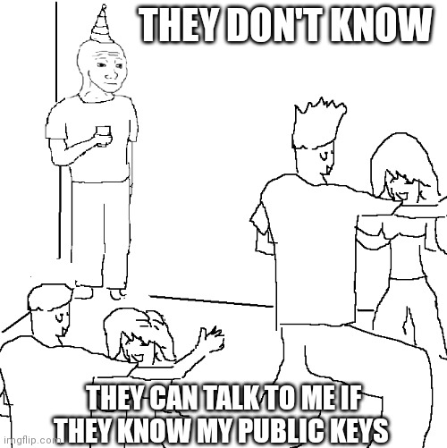
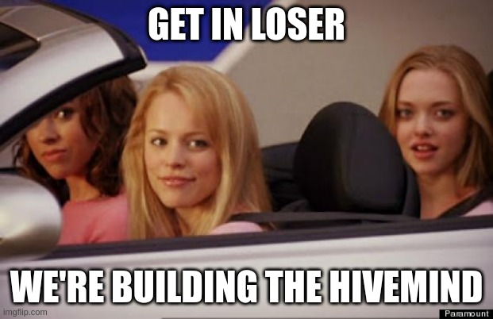

Headjack - the base layer of cyberspace
Headjack is a blockchain that links sovereign identities to content at web-scale. Key points:
- Creation is fundamentally different from transfers and exchange of value - the design space around trust & data availability for media and identity is different from finance.
-
Following the UNIX philosophy - in Headjack identity is simply an identifier (unique number) and anything orthogonal (KYC, profiles, privacy, finance) can be layered on top of it.
-
It solves single sign-on and allows for user experience similar to Web2 through hierarchical authorization management - keypairs are not required by default and even those with keys bound to their accounts may choose to not explicitly sign every interaction.
-
Consensus is reached on the absolute bare minimum - the history of authorizations, names, keys & off-chain content anchors (merkle roots) - the simplest mental model for developers.
-
Headjack can support billions of accounts and link unlimited amounts of off-chain activity to them. The entire web can be rebuilt on top of it - a claim that is easily provable.
-
Content addressing is with persistent & human-readable URIs (instead of hashes) - the link between identity and data is cryptographically provable even if keys & names have changed.
-
It doesn't deal with off-chain data storage and retrievability - those are separate problems and Headjack simply lets entities point to ways for others to retrieve addressable content.
The talk "Decentralized identity & content addressing at web-scale" at code::dive 2022 is a good high-level overview of the project and covers the most important aspects:

Book structure
- What is Headjack - How the protocol technically works and how things like applications, services, DMs, social graphs, preferences, etc. could be implemented - the building blocks necessary to recreate anything from Web2 and beyond.
-
Why Headjack - What's broken with the web and a blueprint for what is possible - services, business models, infrastructure, algorithms, markets, metaverse, etc.
-
Implementation of Headjack - A detailed specification of the implementation.
What is Headjack
- Guiding principles & design goals
- Identity & authorization
- Content addressing
- Messages
- IDMs, preferences & social graphs
- Storage & retrievability of data
- Blocks, state & proofs, oh my!
- Throughput numbers (scaling)
- Headjack vs the competition
Named after the data port at the back of the head of synthetically-grown humans in the Matrix.
Design - guiding principles
These are the guiding principles when aiming for mass adoption of Headjack:
- Customer obsession & the best possible UX
- Web-scale, blockspace & the UNIX philosophy
- Decentralization, neutrality & sovereignty
Customer obsession & the best possible UX
It is highly improbable that the masses (and even most crypto natives) would tolerate services that are much worse (slow, limited & cumbersome) and most of the competing attempts for decentralizing media are nowhere close. There are a few aspects to retaining the comforts and UX of Web2 that we've become so accustomed to:

-
Nobody wants to deal with keys, wallets & self-custody because of all the headaches & complexities that come along with that. Creation & media are different from exchange & finance and it's OK to trust by default as long as there's a fallback. We should be aiming for better trust instead of trustlessness at the cost of UX. Users shouldn't have to manage keypairs on multiple devices & explicitly sign every interaction - by default they'll be logging into identity managers (IDMs) using email & passwords or SSO (
"login with Google") and would then be using these IDMs as SSO to authorize applications to post on their behalf without requiring keys & signatures - by delegating trust. This way the majority of Web2 identity & authentication plumbing can be reused with Headjack underneath as just another backend."Sign-in with Ethereum"doesn't scale - we should aim for familiarity."With consumer products, simple and “wrong” beats complicated and “right.”" - @naval
"The future of mass-market crypto experiences lies within apps that provide familiar, custodial experiences with the ability to graduate into non-custodial experiences." - a16z
"If your social media app requires people to use public keys, then you probably don’t understand what “social” means." - Matthew Green
-
Users shouldn't have to think about and pay for the storage of their data & blockchain interactions by default - costs & complexity should be abstracted away & shifted to services in the background. Self-hosting is the opposite of customer obsession - let's aim for simplicity.
"People don’t want to run their own servers, and never will." - Moxie
"So when we tell people that “if they want privacy” for their data they should just upload it to their local computer: tell them your local Computer Science professor did that, and the result is that he lost half the photos of his son’s birth." - Matthew Green
-
Content addressing should be with human-friendly URIs with names & numbers instead of being full of hashes - typical for Web3. We're used to adequate URLs where the domain of the platform/website & even the user name are present when identifying content - hashes make URIs much longer & harder to remember. Contrast that to Headjack's addressing.
-
The applications built on top of the network must match the responsiveness of Web2 and exceed its functionality.
"Latency is not an option anymore"- Amazon found that every 100ms of latency cost them 1% in sales. 16 years ago Google found an extra 500ms in search page generation time dropped traffic by 20% - our irritable nature hasn't changed. Web2 isn't going anywhere -"market dynamics and the fundamental forces of centralization"dictate that the best services will be running on huge server racks in data centers with sophisticated caches & batch processing infrastructure due to data gravity.
Web-scale, blockspace & the UNIX philosophy
People grossly underestimate the size of the web and the required infrastructure. Here are some decade old twitter, google and other statistics and a few articles about what it takes to run Twitter: 1, 2, 3, 4, 5. What was going on within a single minute of 2021 is truly mind-boggling:

Headjack follows the UNIX philosophy - it focuses only on identity (identifiers represented as numbers & name ownership) & linking data/actions to it without trying to do anything orthogonal (data storage, KYC, profiles, privacy, finance, etc.) that can be layered on top. It doesn't impose constraints on what could be built around it - separation of concerns. All kinds of systems with their own incentives, cryptoeconomics & guarantees can be implemented on top of this identity layer & addressing. The on-chain vs off-chain tradeoff and what goes into the blockspace is as follows:
-
Consensus should be reached on the absolute bare minimum - only identity (integers), the history of keypairs & authorizations, name ownership & anchors to off-chain activity need logical centralization and must be on-chain with guaranteed data availability.
-
All other activity & data is stored off-chain (IPFS & other protocols) because of the sheer volume - it's ephemeral and its relevance fades with time. Most of it won't be stored forever but any piece can be backed up through archives & IDMs. Events get cryptographically anchored with Merkle roots to the chain so that permissions, inclusion & sequence are provable.
"Developers care about risk." - Haseeb
It must be obvious & provable that the network has a credible path to handling billions of users if entrepreneurs are expected to jump on the opportunity. The easiest mental model will win over developers and users - singletons & opinionated frameworks with a concrete direction are much simpler than a fractured landscape of standards, chains & bridges.
"Consistency is incredibly important for creating a compelling user experience." - Moxie
Decentralization, neutrality & sovereignty
"The Internet has succeeded in no small part because of its purposeful avoidance of any single controlling entity." - source
-
Sovereignty: Users should be able to own their identity & connections with a keypair even if by default their activity is managed by an IDM - resembling a custodial service.
-
Credible neutrality - Anyone can permissionlessly have a pseudonymous identity, buy a name, operate an IDM, serve media through an application and publish & broadcast through Headjack using their identity. Moderation & censorship happen at the application & infrastructure level - freedom of speech is guaranteed, but not freedom of reach as that is up to the applications & services that serve media. Individuals will always be able to contact one another for private communication.
-
Anyone can self-host & run software locally, browse the ecosystem, and fetch content & events from entities they've subscribed to (although quite bandwidth-intensive), but their experience will be extremely limited in that they won't be able to run any sort of query/filtration/feed algorithm at scale nor aggregate the activity of billions of people in real-time.
"You can build something centralized on something decentralized but you can’t build something decentralized on top of something centralized. Decentralization is always the base layer." - @RyanSAdams
"Unless we have an open, neutral internet we can rely on without worrying about what's happening at the back door, we can't have open government, good democracy, connected communities and diversity of culture. It's not naive to think we can have that, but it is naive to think we can just sit back and get it." - A Magna Carta for the web by Tim Berners-Lee
Identity & authorization
There are 3 types of roles in Headjack (although a single entity may play all 3):
- Normal accounts - represented by an integer ID on-chain - keypair association is optional.
- IDMs - a superset of normal accounts - required to have a keypair - can manage other accounts by submitting changes for them (name handle, updating keypairs) & acting as SSO - authorizing applications to post on behalf of users (& ability to revoke the authorization). They will also be responsible for handling DMs as discussed here.
- Applications - a superset of normal accounts - required to have a keypair - they are the media presentation layer. Users can authorize them through the use of an IDM to post on their behalf without having to explicitly sign every interaction (follow, post, comment, react).
All authorizations are represented & submitted on-chain as simple integer pairs (2131 => 83253, 6331 => 14415) that get aggregated in compact blobs & signed in bulk by IDMs - achieving a very high signal-to-noise ratio (few signatures) ==> improving the throughput in the valuable block space.

With this foundation we achieve the following range of usage scenarios:
- Costs for using the blockchain can be shifted to IDMs & applications with business models to support that - users won't care that there's an underlying token (they'll always be able to interact with it directly through the mempool & pay for transactions if they wish).
- Users won't need wallets & keypairs - risky and cumbersome with multiple devices. Most will create accounts through IDMs & use email/pass or Web2 SSO (
"login with Google") which will create on-chain integer IDs for them without associated keypairs - "owned" by the custodian. Users will be able to "log in" to applications using their IDM as SSO for Headjack which will authorize the application with a few bytes on-chain to post actions on behalf of users - all without requiring a single signature by the user - neither on-chain for the identity/authorizations (tiny bits of data - just integers & bit flags submitted by the IDM) nor for their off-chain content (posts, comments, reactions). - Users can revoke permissions to applications and even retroactively invalidate activity generated on their behalf by an application by saying
"discard activity generated through application А from block X forward"through a small on-chain message published by their IDM because everything is sequenced. This is acceptable because in this blockchain such data is non-financial and fake activity has smaller consequences - it is still an enormous improvement compared to the current Web2 status quo. - At any point in time users can regain full sovereignty over their identities by binding a keypair through their IDM. Then they'll be able to cut that IDM off (revoke access) & even retroactively invalidate actions from it through another IDM or direct on-chain transactions.
- Users can be completely anonymous by directly creating an identity with a keypair & paying for an on-chain transaction. They'll be able to use IDMs without having to sign with email/pass or a Web2 SSO - not revealing anything.
- Applications will be usable by users that don't use an IDM but all their off-chain activity (posts, comments, reactions) will need explicit signatures.

So at the core of it all is just sequencing relations between integers & Merkle roots for content.

In practice, we expect that only cypherpunks & people that have something to lose (big audience/reputation) will go through the trouble to manage a keypair. Almost everyone will use IDMs - even most crypto natives don't want to explicitly sign every action and have their keys in hot wallets ready to get hacked. This way 99.9% of the user activity on-chain (mostly authorizations) ends up going through authorized services and gets batched in a compact way - requiring only that the service signs the aggregated payload and thus reducing the amount of signatures on-chain.
The vast majority of users will be lightweight: consumers & curators of content (through interactions & reactions) with very little creation on their part and little to no audience. At any point in time, they could shift to a more vocal role and start caring about archiving their off-chain data and not relying on the good grace of the infrastructure that sits beneath applications.
Key & session management (rotation, authorization & revocation) require ordering that is logically centralized. It is compatible with any type of DID - anything could be associated with an integer ID. The on-chain authorization has great synergy with the human-readable & persistent addressing for off-chain content.
Concepts around identity
- authorization
- Attestation
- Attestations by countries
- Names
HEADJACK:
- identity
- linking it to data & events - addressing
- solving authorizaion & authentication
"In a simplistic abstract sense, identity is the capability to distinguish one object from another." - source
"There are today perhaps more OAuth transactions than Visa transactions." - source
Access Controls - as a point for Headjack https://zeeprime.capital/web-3-middleware#access-controls
handle key rotations for private application logins on-chain but only with a number that signifies the version of a session token and track block ranges... like credentials that can be checked on-chain if a previous version is the latest or not
Hierarchical keys managed by an account - for different devices - in identity page
public vs private & revokable authorizations?
The authorization privilage spectrum - keypair / IDM / application https://en.wikipedia.org/wiki/Principle_of_least_privilege
Content addressing
The move from host-centric to data-centric addressing is a complete paradigm shift by itself but Headjack intertwines that with names, on-chain authorization and sequencing of anchors resulting in the best possible URIs in terms of human-readability & persistence - perhaps the most important aspect of the project. This chapter is broken down into a few sub-chapters:

Host vs data-centric
Let's take a look how the web works and what are the building blocks & ideas that enable Headjack:
- Today's web: host-centric
- Data-centric computing
- Content-addressable storage
- Information-centric networking
- Named Data Networking
- Enter Headjack - the final iteration
Today's web: host-centric
Today's web revolves around hosts & unicast communication - we query DNS to get the IP of servers and open direct connections with them to retrieve the data that they host.
"DNS was invented at nearly the beginning of the Internet itself and pre-dated the Web, and has long been a centralized registry for the identity that mapped human-readable domain names for web-sites to IP addresses." - source
But domains, URI paths on servers & the actual files all change & go away which leads to link rot & content drift. Guidance such as "Cool URIs don't change" is just that - guidance - and the Internet Archive is just a bandaid that can hardly keep up with the digital memory hole. In the host-certified paradigm URLs at best point to a location at which a document may have been available at some point in time - devoid of any cryptographic proofs regarding the contents, the creator, an alternative way to retrieve it or the time of publication. The implications are explored in the host-centric section in the motivation.
"It is generally recognized that the current approach of using IP address both as a locator and as an identifier was a poor design choice." - David D. Clark, Designing an Internet
Data-centric computing
Data-centric computing is an emerging concept that has relevance in information architecture and data center design - data is stored independently of the applications, which can be upgraded without costly and complicated data migration. This is a radical shift in information systems that will be needed to address organizational needs for storing, retrieving, moving, and processing exponentially growing data sets. It increases agility by prioritizing data transfer and data computation. Applications become short-lived, constantly added, updated, or removed as algorithms come and go.
"Data is the center of the universe; applications are ephemeral." - The Data-Centric Manifesto
Content-addressable storage
Content-addressable storage (CAS) is a way to store information so it can be retrieved based on its content (not its location/name) and is a key piece of the puzzle. Identifiers are based on content and any change to a data element will necessarily change its content address. The most famous example of CAS is IPFS but it suffers from non-human-friendly addresses (hashes), performance issues, and extreme latency (tens of minutes) because of the global DHT if content is not widely cached/pinned.
Self-authenticating data moves authority from hosts to users. The three components that enable it are cryptographic identifiers, CAS, and an emerging area of research called verifiable computation which is yet to be applied in any meaningful scale.
Information-centric networking
Information-centric networking (ICN) is an approach to evolving the Internet infrastructure away from a host-centric paradigm, based on perpetual connectivity and the end-to-end principle, to a network architecture in which the focal point is identified information (or content or data). Data becomes independent from location, application, storage, and means of transportation, enabling in-network caching and replication. The expected benefits are improved efficiency, better scalability with respect to information/bandwidth demand, and better robustness in challenging communication scenarios. In information-centric networking, the cache is a network-level solution, and it has rapidly changing cache states, higher request arrival rates, and smaller cache sizes.
Named Data Networking
Named Data Networking (NDN) is a Future Internet architecture that builds on top of the previous ideas (& an incarnation of ICN) and in which data is requested by name and routed by the network. However, there are many unsolved challenges with it like the need to reimplement foundational routing infrastructure to make it stateful and hierarchically structured names which require a root name authority to link them to keypairs - outside of its scope. Here's a great lecture on the topic.
Enter Headjack - the final iteration
Headjack is a weird amalgamation inspired by everything above - it provides human-readable & persistent URIs for self-authenticating data (with Merkle proofs & the blockchain) along with the means for its retrieval without forcing a specific way (IPFS is just one option). It acts as the web-scale global index used to check the authenticity of documents (requires consulting with the chain), ownership of names, key management & sequence of events throughout time. It is an addressability layer on top of the current host-centric internet technologies.
Blobs & persistent URIs
This chapter will explain how all off-chain messages (actions/events/content) get published:
- Blob construction - batching of user events
- Stable intra-blob addressing before publishing
- Persistent & provable URIs
- Steps to prove the authenticity of a URI
- A few other notes
Blob construction - batching of user events
Applications accumulate off-chain activity from users which they cryptographically anchor in batches with a Merkle root on-chain and they determine how often to do so (it doesn't have to be on every block) - those with little activity may submit only once per minute or even less often - the frequency is determined by applications based on the volume of activity and the on-chain publishing costs.
When enough activity has been collected it is time for the application to finalize the batch: it is packed in a blob and all the events generated since the last anchored batch are sorted & grouped by accounts in some deterministic way (perhaps accounts based on index and actions based on the type/sequence) with some schema with the following steps:
- The intra-blob index (offset table) for lookup of content of specific accounts is generated.
- A Merkle root that touches every event is deterministically constructed following a schema.
- The IPFS CID (hash) for the blob is generated and it is pinned for others to download.
The only 2 things that are signed & submitted on-chain are thus the Merkle root and the IPFS CID for the next nonce (auto-increment counter) associated with the application account.

Stable intra-blob addressing before publishing
Applications maintain the logical order of events for the future batch in maps in order to provide intra-blob addressing even before it is fully constructed - as an example if a user posts an article and immediately after that comments on their own post - the comment should be able to refer to the post which is not yet committed on-chain. Applications will also display activity by other accounts that is not yet anchored and the interactions can still use the proper addressing when referring to the yet-to-be-anchored messages (the next nonce number is known in advance). Any type of interaction is addressable and sequenced in the blobs - including reactions (likes, etc).
Persistent & provable URIs
Each account has an associated auto-increment counter (nonce) for every time they submit an anchor for off-chain content. So if an application has submitted 2 times already, then the next submission will be with nonce == 3. The blockchain keeps a mapping in its state for each previous nonce value to the block number when it changed so that <application_id>/<nonce> can be translated to which block has the Merkle root anchor & IPFS CID for the blob that corresponds to that nonce for that account.

Once a blob is fetched through the IPFS CID (hash) we can address specific events by using the offset index in the blob header so a URI like <application_id>/<nonce>/<user_id>/<content_id> can point to a specific post, comment or even reaction (activity is grouped by users). The content ID for a specific user is usually a small single-digit number and is necessary only if there has been more than 1 interaction by that user through that application for the given nonce (maybe rare). This is what events with URIs referring to each other looks like:

The blockchain can be queried if the application was allowed to post content on behalf of the user with an on-chain authorization (which probably happened through an IDM) when that specific block was published in order to determine if the activity is authentic - the state keeps information for each account such as since what block number a given application was authorized to post on behalf of a user (and until when - all ranges). Users may avoid using IDMs and explicitly sign their actions in which case their data will be accompanied by their signatures within the data blobs and the only check required will be for the user keypair used for the specific block number.
Steps to prove the authenticity of a URI
To recap - to prove the authenticity of any event with a URI:
- First check if the data is actually part of an anchored blob with a Merkle proof to a block. This requires either just the piece of data + a Merkle proof for inclusion in the blob or the entire blob in order to reconstruct the Merkle tree & proof.
- Then check if the user actually submitted the event:
- Either if at that point the application was authorized to post on behalf of the user which would require a Merkle proof for a part of the blockchain state (authorization ranges).
- Or by checking for an explicit signature & the public key of that account at that time which would also require a Merkle proof for a part of the blockchain state (account key history).
URIs are persistent as long as someone hosts either the individual event + the Merkle proof or the entire blob (and can reconstruct the proof) and knows to which block it was anchored (from the <application_id>/<nonce> => <block_number> mapping). The following chapter shows how names in URIs are persistent too (even if user/application names change ownership at some point).
A few other notes
- There can be many different & valid proofs for the same URI from different block heights.
- Even private intranet data may be anchored but not retrievable by the public if the blob IPFS CID is never published or pinned/hosted - unified addressing for public & private.
- Users should be able to see the URI of content even if created through another application and the origin should be displayed by default - acting as attribution for other applications.
- Edits & updates to content come as messages with new unique URIs that reference the older message URIs and it is up to applications to properly handle this - either by showing that there have been changes and a newer version or automatically redirect to the latest. "Forks" are possible but they represent application failure to detect that an old version is being edited.
- Accounts that anchor content on-chain cannot do so twice in the same block - for simplicity.
Names & paths
Headjack is also a name registry - accounts can own a handle and be identified with it. For specifics around the details (constraints, subdomains, auctions, distribution, hoarding, leasing, etc.) please refer to their dedicated page. In this chapter:
- Names in URIs
- What to ask the blockchain about a URI
- Web3 URIs interoperable in Web2
- Content titles in URIs
- Addressing within content
Names in URIs
Users and applications don't need a name and can operate as an integer index just fine, but the preferred case will be with handles. Names can change ownership but the blockchain will be able to translate <application_name>/<nonce>/<user_name>/<content_id> with strings into the canonical integer form discussed previously by substituting the application & user names with account IDs.
Every name has an associated auto-increment nonce (just like account IDs) for every time they submit an anchor for off-chain content and the blockchain records maps of <name>/<nonce> to <id>/<nonce> which can then be used to resolve the URI as discussed in the previous chapter.

But we need to be able to translate not just the application name but also the user name which may have changed ownership at any point - for that the blockchain keeps track of the account ID ownership of every name historically as ranges (from block X to block Y name N was owned by account A) so when we determine the block number for a given data blob we'd be able to check to which account ID does a name in a URI correspond to at that time.
And thus we're able to have URIs such as twitter.com/55212/johnny/3 to identify any event by any actor - all we'd need to do is a few lookups and we'll be able to use Merkle proofs for any piece of content to prove authenticity. Most URIs could even omit the 4th part because probably there won't be more than 1 action by a user for a given batch by an application.
Note that the canonical form (numbers instead of names) of twitter.com/55212/johnny/3 could be something like 42/783/523/3 where only the last number would be the same and the nonce would most likely be different. Also twitter.com might no longer be owned by account 42 but what matters is that the blockchain can correctly determine who owned it at nonce 55212. Multiple names can be owned by an account but their nonces for one event will probably be different.
What to ask the blockchain about a URI
To recap: we can ask the following questions about this URI: twitter.com/55212/johnny/3:
- To which application account ID & nonce does
twitter.com/55212correspond? - To which block does the applicationID/nonce map correspond?
- What is the IPFS CID & Merkle root of the anchored blob at that block?
- What account ID does
johnnycorrespond to in the block where this blob was anchored? - Once we download the blob or just the blob header (using the IPFS CID or any other means):
- We can ask the offset table where within the blob is
johnny's content №3? - Once we fetch the actual data & depending on whether it is explicitly signed or not:
- either if the application was authorized to post on behalf of
johnnyat that time, - or if the signature matches the keypair that's been bound to
johnny's account at the time of the anchored block.
- either if the application was authorized to post on behalf of
- We can ask the offset table where within the blob is
Web3 URIs interoperable in Web2
Application accounts can point on-chain to a host with an IP address which can be used to display content published through them. Application names can also resemble traditional domain names so it will be possible to copy-paste such URIs directly into your browser and as long as they own the same domain in the traditional DNS they should be able to serve a webpage displaying the piece of content - enabling seamless interoperability during the transition from one paradigm to the other.
Content titles in URIs
Most Web3 platforms suffer from unreadable URIs but we've done a lot better - note the brevity and lack of hashes & hexadecimal symbols (0xf56a0...) - in fact, this is as good as it gets...
Or is it?! What about headlines of articles - can we have them included as well - something like twitter.com/55212/johnny/3/how-I-went-from-vegan-to-keto-and-back-again? Absolutely! The string is not at all necessary to resolve the piece of content (just like in StackOverflow where the database key for a question is just a number (example: question 4) but the page router always changes the URL when loading the page to include the title too). Message types for posts with titles will have a dedicated field which will get included in the content hash and thus spoofing the title will be rejected by conforming applications as it would be a trivial check.

Addressing within content
Different schemas could be used for addressing within pieces of content (like a paragraph from an article or a clip from audio/video - without losing the context of the whole) and message types could have by default associated on-chain schemas (or the schema of choice could be embedded within the header of the message). For example, when medium.com/12475/elvis/0/learn-to-code/121/66 is being loaded the associated schema will be looked up depending on the type of message (in this case - an article) and used to interpret the last part (121/66) which could mean a character selection with an offset from the start and length. The embedded schema could be overridden by explicitly stating which one to use within the URI. As an example, medium.com/12475/elvis/0/learn-to-code/schema/42/121/187 could mean "use on-chain schema number 42" which could interpret the last part (121/187) as start offset and end offset instead of start & length - resulting in the same selection as before. Even individual pages & paragraphs of books should be referencable in such a manner and could be composed of multiple separate posts - and this is just scratching the surface!
For big types of content (audio/video) the message could be broken down into chunks so that users can load only the message header and then depending on the schema used and the addressing within the content - only the necessary chunks could be requested.
Messages
The terms message/event/action/data/document/content are used interchangeably in this book and refer to any type of event/content a user might have generated - post/comment/reaction/etc.
IDMs, preferences & graphs
Data storage & retrievability
In this chapter we will see the different aspects of handling unlimited amounts of off-chain data:
- Ingestion and transformation of blob data
- Hierarchical data blobs & partial fetches
- Direct IPFS connections & horizontal scaling
- Sharing data before anchoring it
- How to retrieve data for a random URI
Ingestion and transformation of blob data
Off-chain blobs with data will be fetched, processed and stored immediately after they are published in more optimal database formats for content to be later directly served by application infrastructure. Most of the cryptography checks will be happening instantly during this process but the proofs don't need to be stored. Users will always be able to request proofs for any event at any time (& cache them locally) because they can be regenerated on the fly as necessary.
Hierarchical data blobs & partial fetches
Blobs may be in a hierarchy such that the on-chain IPFS hash points only to the "root" blob that contains the header and the actual indexed data could be in child IPFS blobs (whose IPFS CIDs are contained in the root blob or header) so entities listening for events by specific accounts on Headjack may download only these headers and determine which "leaf" blobs they need to fetch for the data they are interested in (if any). Sparse bitsets & bloom filters could be used to quickly scan for the presence of activity by specific accounts.

Direct IPFS connections & horizontal scaling
Applications can advertise the multiaddress of their IPFS nodes on-chain so that each blob of content that gets published can be downloaded by others instantly by manually connecting with IPFS’s “swarm connect” functionality - avoiding the use of the DHT for each new blob CID which may take tens of minutes. They can provide addresses to multiple IPFS nodes as a cluster for horizontal scaling and use Pinset orchestration - designed for Automated data availability and redundancy.
Applications may choose not to use IPFS at all - what they must do is anchor their blobs with a Merkle root and provide some on-chain advertised means to retrieve the data (example: REST/RPC endpoints in their on-chain account). We expect that IPFS will be the lowest common denominator and will always be used no matter what other solutions are also available.
Sharing data before anchoring it
Applications can talk to each other directly by using their on-chain advertised REST/RPC endpoints and may ask for the events & messages that are not yet published by the other applications. This way they could display "remote" events locally while they are still in the "mempool" and allow their own users to interact with those events from other applications. This is possible because URIs are stable even before publication - see Stable intra-blob addressing before publishing. High activity applications can interoperate and no longer be a slave to the block time. However:
- Applications should display events that are not yet anchored in the UI differently - especially if coming from another application.
- Events that refer to each other but are from different applications and have not yet been anchored on-chain could end up committed in the wrong order (if one of the applications skips a few blocks and commits at a later one) - such that an event from the past is referring to an event from the future - breaking referential integrity. However, messages have a timestamp field and could also have the current block height at the time of creation - useful for sorting.
How to retrieve data for a random URI
There are multiple options:
- The entire original blob with an IPFS CID might still be retrievable from the original application account that posted it or anyone else that has pinned the data.
- The user account might be using an archival service for all their activity and they can point to that archival service on-chain in their account for others to retrieve their messages.
- Other well-known players without a direct on-chain connection to the application/user in a URI could be asked if they have the content:
- Infrastructure companies that do the heavy lifting for applications and store everything.
- The analog of the Internet Archive in this ecosystem that also stores everything.
- IPFS can be forked & reused with the following change: instead of delivering content based on the CID hash it can deliver the data + the necessary proofs based on Headjack URIs or their hash (they are unique) - any individual off-chain message that's been anchored would be retrievable as long as someone is hosting it in this p2p network (which needs bootstrapping - could be part of Headjack nodes). However, this won't be very performant due to the granular nature of individual messages with a URI and the use of a global DHT.

Blocks, state & proofs, oh my!
Throughput & scalability
Everyone claims to be scalable, but here we'll prove that Headjack can handle billions of accounts and anchor unlimited amounts of off-chain content tied to identity with simple napkin math.
- How big is a Headjack transaction
- Naive scenario
- Realistic scenario
- Optimizations & scaling
- State growth
- Off-chain content
How big is a Headjack transaction
Applications post anchors to off-chain content with an IPFS CID hash and a merkle root. IDMs also anchor off-chain content (mainly user preferences & updates to social graph), but they also post authorizations to other accounts (applications) to post on behalf of users as integer pairs.
So the fields for a transaction by an application/IDM (which will be the majority) are:
- version:
4 bytes - signature:
65 bytes - blob IPFS address:
32 bytes - blob merkle root:
32 bytes - nonce:
4 bytesauto-increment integer associated with the account - to prevent reordering of anchored off-chain blobs (which would mess up internal addressing based on that nonce) - value:
4 bytesamount of native token paid to validators for transaction inclusion
So far that is 141 bytes which almost every transaction by an application or IDM contains. IDMs also submit a list of authorizations (or revocations) as integer pairs. For example, 1000 accounts authorizing 15 different applications to post on their behalf would be 1000 integer pairs. Assuming 8 byte integers (up to 2^64) that would be 8 * 2 * 1000 = 16k bytes.
Naive scenario
The initial version will target block bandwidth of up to 100 kb/s. This is not a problem for ZK validiums as there are already DA solutions that offer 10 mb/s or even much more.
Assuming:
- 1 MB block size & 10 second block time (100 kb/s of block bandwidth)
- 1000 applications posting in every block
- 100 IDMs authorizing as much users as possible - filling the remaining block space
- no on-chain actions such as keypair & name changes, account creation & direct interaction with the chain by end users
We get:
- 1100 actors (1000 applications + 100 IDMs) that post in every block at least
141bytes for their transactions, which is155100bytes - the remaining
893476bytes (1048576 (1MB) - 155100) can be filled with authorizations and since an authorization is16bytes (8 * 2) that would be 55842 authorizations/revocations every 10 seconds or 5584 authorizations/revocations per second - for 1 billion accounts that would be 0.557 authorizations/revocations per person per day which is actually quite good - people on average do way less single sign-ons per day
| completely different goals - comparing the 2 protocols just to put things into perspective | Headjack | Ethereum |
|---|---|---|
| block size | 1 MB | ~80 kb |
| block time | 10 seconds | ~13 seconds |
| blockchain bandwidth per second | 100 kb/s (x16 more than Ethereum) | ~6.15 kb/s |
| blockchain bandwidth per day | 8640 mb/d | ~528 mb/d |
| transactions/authorizations per second | 5584 APS | ~14 TPS |
| transactions/authorizations per day | 482,457,600 APS | 1,209,600 |
| transactions/authorizations per person per day for 1 billion accounts | 0.482 (x400 more than Ethereum) | 0.0012096 |
Realistic scenario
The naive scenario does not include on-chain actions for specific accounts such as:
- keypair changes (new pubkey (32 bytes) + signature (65 bytes) if there is an older key)
- account creation (if done by an IDM then this is just a few bytes - no pubkey)
- name registration & ownership changes (see the dedicated page for more details)
- updating account fields such as a URI pointing towards an off-chain account directory (which could point to archived posts) or pointing to another account index for such services
- signed transactions by individual accounts that want to directly interact with the chain
- authorizing an IDM, rotating keys, or even publishing off-chain content as an application
However, the realistic scenario will not be far from the naive because:
- Only a % of all accounts will have keypairs (even though 100% could) and will make just a few signed actions per year - leaving most block throughput for authorizations through IDMs.
- Large % of accounts will rarely even be authorizing new applications - many people don't sign in to new services through SSO every single day. There could also be 2 types of log-ins: passive (viewing only - nothing on-chain) and authorized (allowing services to post on behalf of users).
- Many applications that don't generate a lot of off-chain activity will publish less often than on every block in order to minimize on-chain block space costs.
- The chain throughput can be further optimized & scaled by multiple orders of magnitude.
Optimizations & scaling
- Throughput of 100 kb/s is just the start & can easily go to 1-10 mb/s as a ZK rollup.
- The chain & state can be trivially sharded - there aren't problems such as fracturing liquidity or preventing composability because accounts don't care about each other - they mostly contain authorization block numbers & keypair history.
- Integer indexes that only need 4 bytes can be compressed/batched together - it'll take many years to go beyond 4 billion accounts so the actual throughput is 2x of what is listed here.
- A fee market can develop that tunes the cost of different actions so that actors don't just pay for on-chain bytes - the ways the system is used can be guided through incentives.
- Other optimizations not listed here - this is just the starting point.
State growth
Headjack's main value proposition is keeping historical records of the sequence of authorizations, key changes & off-chain content anchors and being able to generate proofs for any specific piece of off-chain content.
TODO: finish this
https://ethereum.stackexchange.com/questions/268/ethereum-block-architecture
numbers - state - one difference from other cryptos is that this one is append-only and could be designed to be easier on memory access patterns
One difference with other blockchains is that accounts in Headjack are numbers and thus the state tree could be different.
on eth state growth: https://twitter.com/SalomonCrypto/status/1587983584471633921 https://hackmd.io/@vbuterin/state_size_management
All on-chain changes just append data to one of the few attributes of:
- accounts:
- public keys: a map of keys and block height integer ranges (non-overlapping)
- authorizations: a map of indexes and arrays of block height integer ranges
- nonces: an array that maps autoincrement indexes to block numbers
- appended only when publishing off-chain content (usually an application/IDM)
- names:
- owners: a map of owner indexes and block height integer ranges (non-overlapping)
- nonces: an array that maps autoincrement indexes to account index & nonce pairs
- appended only when publishing off-chain content (usually an application/IDM)
TODO: should IPFS hashes & merkle roots be saved in the state? - no?
TODO: light clients? in addition to merkle proofs for inclusion of content they would need merkle proofs for the state of which applications a user has authorized to post on their behalf in a given block
state growth: https://twitter.com/keoneHD/status/1574451986501623808
Off-chain content
There are no limits for off-chain content as it is all just anchored with merkle roots - it could be as high as hundreds of terabytes per second. There isn't a more minimal design that can link unbounded amounts of off-chain data to billions of identities that can change keys & names and yet still provide the guarantees & mental model simplicity of Headjack - it achieves consensus on the absolute bare minimum.
Headjack vs the competition
This chapter focuses on the disadvantages of some of the more high-profile competing solutions in the space. Most of the issues are solved in Headjack due to its guiding principles & design goals. This page doesn't list any of their positives as it would be too long (so not exhaustive by any means) but many of them have served as an inspiration for Headjack in one way or another.
- Comparison table
- What other projects get wrong
- Farcaster
- DSNP, Frequency & Project Liberty
- TBD
- CyberConnect
- DeSo
- Others
Comparison table
Some of this is a subjective estimation - many of the claims lack official sources.
| Headjack | Farcaster | DSNP & Frequency | Bluesky & AT Protocol | TBD web5 slides & tweet |
Ceramic & CyberConnect | Lens Protocol |
|
| blockchain-related properties | |||||||
| Scalability & potential scope | can handle billions of users (proof) & underpin the entire web | perhaps up to ~10 million - could move to its own rollup | perhaps up to a few million graph changes are on-chain | centralized consortium of servers | perhaps up to a few million - lots of reliance on IPFS, DHTs, hashes & keys |
perhaps up to a few million - lots of reliance on IPFS, DHTs, hashes & keys |
actions are on-chain as NFTs (follow, post's hash) - even a dedicated EVM chain will be futile |
| Users paying for TX fees & linking identity to financial accounts by default | all blockchain costs are paid for by services by default | Ethereum L1 costs initially planned for subsidy by services | all blockchain costs are paid for by services by default | centralized consortium of servers - no TXs | the anchors (on-chain Merkle roots) get batched with others | only the stream anchors to Ethereum L1 have to be paid for occasionally | yes |
| Blockchain TX fee stability & predictability | as scalable as necessary => no congestion | Ethereum L1 - may need to migrate to its own rollup in the future | their notion of capacity is probably good enough | centralized consortium of servers - no TXs | Bitcoin TX fees are low due to low economic activity | Ethereum L1 for stream anchors | Polygon PoS |
| Block time for anchoring key operations | Ethereum ZK validium with multiple blocks in one L1 slot | Ethereum | Polkadot | centralized consortium of servers | Bitcoin | Ethereum, but the anchors are occasional | Polygon PoS |
| Time to finality for key operations | Ethereum | Ethereum | Polkadot | centralized consortium of servers | Bitcoin | Ethereum | Polygon PoS |
| Contains a name registry for easy discoverability & can replace DNS | yes - & tightly integrated with addressability - URIs aren't broken even if names change ownership | yes, also works with ENS | no, but might introduce it | no - uses email-like usernames resolved with Webfinger to a DID & relies on DNS (centralized) | no | no, maybe works with ENS | no, maybe works with ENS |
| Decentralization for the most important parts (keys & registries) | Ethereum ZK validium with external data availability (validium) - EigenDA? | Ethereum | Polkadot - not big enough set of validators | centralized consortium of servers | Bitcoin, but DID operations are only anchored | Ethereum, but only the stream anchors go there | Polygon PoS |
| Incentive layer & data availability for the most important (keys & registries) | Ethereum ZK Validium | Ethereum | Polkadot | centralized consortium of servers | DID operations are stored in a network on IPFS without incentives | the actual streams are in a network w/o incentives | Polygon PoS |
| Data availability, storage, retrievability & addressing | |||||||
| Human-readable & persistent URIs for data without any hashes |  |
URIs full of hashes (probably) | URIs full of hashes | URIs full of hashes - CIDs for IPLD objects | URIs full of hashes (probably) | URIs full of hashes | URIs full of hashes |
| Multiple ways to ask for a URI's document (in addition to caches/archives) |
multiple ways: 1) user's IDM 2) source app identifiable from the URI 3) IPFS blob from the block 4) p2p network |
1) user's Hub 2) p2p network |
URIs contain only user id & content hash without user Hubs (yet) & p2p network | 1) user's PDR 2) maybe p2p network with the content CID |
probably 1) user's DWN 2) p2p network |
only p2p network as Ceramic streams are an abstraction over IPFS | unsure - maybe the on-chain NFT post |
| Big reliance on a p2p network for delivering fine-grained messages | using a p2p network for specific URIs is the last resort | using a gossip-based pubsub protocol between peers & Hubs | not sure: their URIs contain only user id & content hash but they don't have an IDM/Hub/ PDR/DWN as a concept (yet) | no - talk directly to a user's PDR | not sure: perhaps could directly talk to a user's DWN | yes - IPFS, Ceramic Network & global DHTs | |
| Push (broadcast) vs pull (polling) for fetching new content | both - event batches are broadcasted & new/individual documents can be requested | pull only - requires polling a user's Hub for anything new | both - event batches are broadcasted & new/individual documents can be requested | pull only - requires polling a user's PDR for anything new | pull only - requires polling a user's DWN for anything new | both - events are broadcasted & new/individual documents can be requested | |
| Self-authenticating documents | proofs are validated by the blockchain | need to talk to Ethereum AND the host-certified user directory which can disappear OR change | merkle roots not present | proofs are validated by the transparency log | |||
| Ease of use for developers & users | |||||||
| Can leverage existing Web2 authenticating infrastructure | Can leverage all existing OAuth / SAML code | ||||||
| Easy to work with mental model vs high cognitive load & complexity | A bit more complexity compared to Web2 | ||||||
| Can use "custodial" hosted services while retaining ultimate control | |||||||
| Ease of indexing & building responsive UI | can be as performant as Web2 and not constrained by block time | ||||||

What other projects get wrong
A list of problems with the contenders in the decentralized identity/media space:
- No credible path to web-scale - some will hit a wall even at 1 million users. Most are vague around their scalability & data structures and don't put it front and center - obfuscating the most important bit. Instead of focusing on NFTs & developer APIs, start with the data and work up from that.
-
Complexity & lack of clarity - distributed systems engineers should easily figure out how they work & what the limitations are. Why build on something that others are probably having a hard time understanding as well and may not be around in the future?
"Developers care about risk." - Haseeb
"For the simplicity on this side of complexity, I wouldn't give you a fig. But for the simplicity on the other side of complexity, for that I would give you anything I have." - Oliver Wendell Holmes
-
Too financialized & trying to do too much - profiles & posts as NFTs, microtransactions, marketplaces, fan coins, tipping, content creator incentives.
"However, a downside I’ve observed in social networks where content is monetized is that user behavior becomes transparently driven by monetary incentives in ways that feel less genuine. This applies to influencer culture on Instagram as well, but cryptocurrency social networks bake it in from the start." - Jay Gerber
"The question remains: is the future of social media truly intrinsically linked to NFTs or is it a red herring?" - @mattigags
-
Users shouldn't need to use a token, use a wallet, or self-host to benefit from decentralized identity & an open social graph. Most people will always use custodial services.
"People don’t want to run their own servers, and never will." - Moxie
-
Linking online identity to public financial accounts on Ethereum/Solana/etc will have unintended consequences - a bad default.
-
Federated ones lack logical centralization which leads to fragmentation and no discoverability.
-
Some are solving just identity & the graph - without easy & persistent content addressing.
-
Social media is about aggregated views at scale - not p2p and direct comms.
"The emphasis of a social network is on "propagation" aka, propaganda." - didibus
-
Some use chains such as Ethereum for logical centralization & store vector commitments (Merkle roots) for events around key management (rotations, authorizations, sessions & revocations) but the data availability problem for whatever is committed is unsolved.
- The complexity is not encapsulated - there are many open questions, edge cases & failure scenarios and it would inevitably lead to assumptions & trust.
- Some anchor to Bitcoin but the time to finality matters a lot for UX - 10-minute block times with probabilistic finality is horrendous.
-
Some lack an economic incentive layer.
"Show me the incentive and I will show you the outcome." - Charlie Munger
Farcaster
Their architecture: link. The account registry is on a blockchain and everything else is off-chain.
-
Registry on Ethereum L1 - for new accounts, name/host changes & key management.
- No plans on moving to an L2 or their own chain. Also, state rent could eventually be introduced to Ethereum which would lead to further costs & complexity.
-
Keypairs & wallets required - harder mass adoption. Authorizations still require a signature from the root key.
-
Revocations invalidate all prior activity from a delegate:
"Unfortunately, this means that all messages signed by that signer will be lost since we cannot tell which ones were signed by the attacker." - source
- Root signer revocations are even more impactful.
- The p2p network's ability to scale by passing around granular casts is questionable - they are already discussing possible flooding and nodes having to shadow ban and flag accounts based on behavior.
-
Focus is on partial views of the network as opposed to mass scale aggregation & indexing - although that could easily be implemented.
-
Cast URIs will look something like
farcaster://id:8789213729/cast:0xf00b4rwhich is less readable than what Headjack will be offering with its addressing.
Overall good intuition about the concept of sufficient decentralization (putting only what is absolutely necessary on a blockchain) but the p2p node implementation takes on too much responsibility, complexity & assumptions (consensus, CRDTs, trees, ordering, flooding & replay attacks, etc.) and is lacking in other areas.
DSNP, Frequency & Project Liberty
Frequency (a Polkadot parachain) is the first implementation of DSNP (Decentralized Social Networking Protocol - whitepaper) as a standalone blockchain and has had the most influence over Headjack's design but the two have diverged in some key respects - the biggest of which are scalability, content addressability, UX & choosing Polkadot. Some of the problems with them:
-
No names within the project - just integer IDs for accounts. Content addressing URIs are based on hashes without connection to the batch # / service that published it - example:
dsnp://78187493520/0x1234567890abcdef0123456789abcdef0123456789abcdef(source). Addressing content is much worse compared to Headjack's human-readable & persistent URIs. -
Delegating applications to be able to post on behalf of users (analogous to authorization in Headjack) happens on-chain but requires a signature from the user (bulky - limiting throughput). New applications (& revocation) require the user to have access to their keys. Hierarchical delegation would allow for UX comparable to Web2 and would even allow for users without keypairs at all but DSNP doesn't have that - Headjack does.
-
100m$ of funding (so far) from just 1 person - Frank McCourt - no other capital & connections to reputable investors & influencers from either the crypto or tech space - generating hype & booting up the network effect might be very hard. They've been around since 2019.
TBD
Jack Dorsey's new "web5" project - slides, announcement.
{kind=link}
- Only anchors DID events to Bitcoin with vector commitments (Merkle roots) using ION & the Sidetree protocol.
- 10-minute block times with probabilistic finality. Factor in the loading times for the anchored content around key management that's on IPFS - not great at all if you want to log in/authorize a service or revoke access quickly.
-
Doesn't have a human-readable global name registry - lacks discoverability.
-
Doesn't have human-readable content addressing.
-
Focus is on users self-hosting their own data, running software locally & handling keypairs.
-
Developing their own Decentralized Web Nodes (DWN) software that would be relaying messages p2p - can't handle web-scale on such a granular level and aggregation is not even in the picture.
CyberConnect
Built on the Ceramic protocol & network.
TODO: working on incentives for pinning https://twitter.com/joelthorst/status/1588863780301156352
-
Requires the use of keypairs & wallets.
-
Every user has their own Ceramic data stream on top of IPFS - it is yet to be proven that the DHT & p2p layers can scale to hundreds of millions or billions of people.
-
The persistence of the social graph is handled by pinning IPFS data on nodes operated by them without any cryptoeconomic incentive for the data availability - it will grow into the tens/hundreds of terabytes for web-scale (Twitter scale: 400M users with 700 connections on average) - especially because they don't have a compact integer-based representation and everything is based on big individually signed actions. The upcoming Ceramic blockchain does not seem to be geared towards storage incentivization and will not be the solution to that.
"Long-term data retention on CyberConnect is guaranteed through Ceramic’s blockchain anchoring and a custom data pinning service." - source
DeSo
-
It requires wallets & users to pay for every interaction.
-
It puts everything on-chain and their plans to scale are with bigger blocks & sharding (see "Phase 4: Sharding") which is simply not practical for the true scale of the public web.
-
It financializes as much as possible (creator coins, etc.).
-
Their initial growth was fueled by huge sums of VC money but by now it has flatlined. It did reach 1.66$ billion market cap on the 2nd of October 2021 shortly after being listed.
Others
For details about ActivityPub, Matrix, Diaspora, Mastodon, Secure Scuttlebutt, Solid & others please refer to the excellent ecosystem review by the Bluesky project. Other good resources include:
- Decentralized Social Networks - Jay Gerber
- Blockchain Social Networks - Jay Gerber
- There are many other projects in this space.
Headjack vs the competition
This chapter focuses on the disadvantages of some of the more high-profile competing solutions in the space. Most of the issues are solved in Headjack due to its guiding principles & design goals. This page doesn't list any of their positives as it would be too long (so not exhaustive by any means) but many of them have served as an inspiration for Headjack in one way or another.
- Comparison table
- What other projects get wrong
- Farcaster
- DSNP, Frequency & Project Liberty
- TBD
- CyberConnect
- DeSo
- Others
Comparison table
Some of this is a subjective estimation - many of the claims lack official sources.
| Headjack | Farcaster | DSNP & Frequency | Bluesky & AT Protocol | TBD web5 slides & tweet |
Ceramic & CyberConnect | Lens Protocol |
|
| blockchain-related properties | |||||||
| Scalability & potential scope | can handle billions of users (proof) & underpin the entire web | perhaps up to ~10 million - could move to its own rollup | perhaps up to a few million graph changes are on-chain | centralized consortium of servers | perhaps up to a few million - lots of reliance on IPFS, DHTs, hashes & keys |
perhaps up to a few million - lots of reliance on IPFS, DHTs, hashes & keys |
actions are on-chain as NFTs (follow, post's hash) - even a dedicated EVM chain will be futile |
| Users paying for TX fees & linking identity to financial accounts by default | all blockchain costs are paid for by services by default | Ethereum L1 costs initially planned for subsidy by services | all blockchain costs are paid for by services by default | centralized consortium of servers - no TXs | the anchors (on-chain Merkle roots) get batched with others | only the stream anchors to Ethereum L1 have to be paid for occasionally | yes |
| Blockchain TX fee stability & predictability | as scalable as necessary => no congestion | Ethereum L1 - may need to migrate to its own rollup in the future | their notion of capacity is probably good enough | centralized consortium of servers - no TXs | Bitcoin TX fees are low due to low economic activity | Ethereum L1 for stream anchors | Polygon PoS |
| Block time for anchoring key operations | Ethereum ZK validium with multiple blocks in one L1 slot | Ethereum | Polkadot | centralized consortium of servers | Bitcoin | Ethereum, but the anchors are occasional | Polygon PoS |
| Time to finality for key operations | Ethereum | Ethereum | Polkadot | centralized consortium of servers | Bitcoin | Ethereum | Polygon PoS |
| Contains a name registry for easy discoverability & can replace DNS | yes - & tightly integrated with addressability - URIs aren't broken even if names change ownership | yes, also works with ENS | no, but might introduce it | no - uses email-like usernames resolved with Webfinger to a DID & relies on DNS (centralized) | no | no, maybe works with ENS | no, maybe works with ENS |
| Decentralization for the most important parts (keys & registries) | Ethereum ZK validium with external data availability (validium) - EigenDA? | Ethereum | Polkadot - not big enough set of validators | centralized consortium of servers | Bitcoin, but DID operations are only anchored | Ethereum, but only the stream anchors go there | Polygon PoS |
| Incentive layer & data availability for the most important (keys & registries) | Ethereum ZK Validium | Ethereum | Polkadot | centralized consortium of servers | DID operations are stored in a network on IPFS without incentives | the actual streams are in a network w/o incentives | Polygon PoS |
| Data availability, storage, retrievability & addressing | |||||||
| Human-readable & persistent URIs for data without any hashes | |
URIs full of hashes (probably) | URIs full of hashes | URIs full of hashes - CIDs for IPLD objects | URIs full of hashes (probably) | URIs full of hashes | URIs full of hashes |
| Multiple ways to ask for a URI's document (in addition to caches/archives) |
multiple ways: 1) user's IDM 2) source app identifiable from the URI 3) IPFS blob from the block 4) p2p network |
1) user's Hub 2) p2p network |
URIs contain only user id & content hash without user Hubs (yet) & p2p network | 1) user's PDR 2) maybe p2p network with the content CID |
probably 1) user's DWN 2) p2p network |
only p2p network as Ceramic streams are an abstraction over IPFS | unsure - maybe the on-chain NFT post |
| Big reliance on a p2p network for delivering fine-grained messages | using a p2p network for specific URIs is the last resort | using a gossip-based pubsub protocol between peers & Hubs | not sure: their URIs contain only user id & content hash but they don't have an IDM/Hub/ PDR/DWN as a concept (yet) | no - talk directly to a user's PDR | not sure: perhaps could directly talk to a user's DWN | yes - IPFS, Ceramic Network & global DHTs | |
| Push (broadcast) vs pull (polling) for fetching new content | both - event batches are broadcasted & new/individual documents can be requested | pull only - requires polling a user's Hub for anything new | both - event batches are broadcasted & new/individual documents can be requested | pull only - requires polling a user's PDR for anything new | pull only - requires polling a user's DWN for anything new | both - events are broadcasted & new/individual documents can be requested | |
| Self-authenticating documents | proofs are validated by the blockchain | need to talk to Ethereum AND the host-certified user directory which can disappear OR change | merkle roots not present | proofs are validated by the transparency log | |||
| Ease of use for developers & users | |||||||
| Can leverage existing Web2 authenticating infrastructure | Can leverage all existing OAuth / SAML code | ||||||
| Easy to work with mental model vs high cognitive load & complexity | A bit more complexity compared to Web2 | ||||||
| Can use "custodial" hosted services while retaining ultimate control | |||||||
| Ease of indexing & building responsive UI | can be as performant as Web2 and not constrained by block time | ||||||
What other projects get wrong
A list of problems with the contenders in the decentralized identity/media space:
- No credible path to web-scale - some will hit a wall even at 1 million users. Most are vague around their scalability & data structures and don't put it front and center - obfuscating the most important bit. Instead of focusing on NFTs & developer APIs, start with the data and work up from that.
-
Complexity & lack of clarity - distributed systems engineers should easily figure out how they work & what the limitations are. Why build on something that others are probably having a hard time understanding as well and may not be around in the future?
"Developers care about risk." - Haseeb
"For the simplicity on this side of complexity, I wouldn't give you a fig. But for the simplicity on the other side of complexity, for that I would give you anything I have." - Oliver Wendell Holmes
-
Too financialized & trying to do too much - profiles & posts as NFTs, microtransactions, marketplaces, fan coins, tipping, content creator incentives.
"However, a downside I’ve observed in social networks where content is monetized is that user behavior becomes transparently driven by monetary incentives in ways that feel less genuine. This applies to influencer culture on Instagram as well, but cryptocurrency social networks bake it in from the start." - Jay Gerber
"The question remains: is the future of social media truly intrinsically linked to NFTs or is it a red herring?" - @mattigags
-
Users shouldn't need to use a token, use a wallet, or self-host to benefit from decentralized identity & an open social graph. Most people will always use custodial services.
"People don’t want to run their own servers, and never will." - Moxie
-
Linking online identity to public financial accounts on Ethereum/Solana/etc will have unintended consequences - a bad default.
-
Federated ones lack logical centralization which leads to fragmentation and no discoverability.
-
Some are solving just identity & the graph - without easy & persistent content addressing.
-
Social media is about aggregated views at scale - not p2p and direct comms.
"The emphasis of a social network is on "propagation" aka, propaganda." - didibus
-
Some use chains such as Ethereum for logical centralization & store vector commitments (Merkle roots) for events around key management (rotations, authorizations, sessions & revocations) but the data availability problem for whatever is committed is unsolved.
- The complexity is not encapsulated - there are many open questions, edge cases & failure scenarios and it would inevitably lead to assumptions & trust.
- Some anchor to Bitcoin but the time to finality matters a lot for UX - 10-minute block times with probabilistic finality is horrendous.
-
Some lack an economic incentive layer.
"Show me the incentive and I will show you the outcome." - Charlie Munger
Farcaster
Their architecture: link. The account registry is on a blockchain and everything else is off-chain.
-
Registry on Ethereum L1 - for new accounts, name/host changes & key management.
- No plans on moving to an L2 or their own chain. Also, state rent could eventually be introduced to Ethereum which would lead to further costs & complexity.
-
Keypairs & wallets required - harder mass adoption. Authorizations still require a signature from the root key.
-
Revocations invalidate all prior activity from a delegate:
"Unfortunately, this means that all messages signed by that signer will be lost since we cannot tell which ones were signed by the attacker." - source
- Root signer revocations are even more impactful.
- The p2p network's ability to scale by passing around granular casts is questionable - they are already discussing possible flooding and nodes having to shadow ban and flag accounts based on behavior.
-
Focus is on partial views of the network as opposed to mass scale aggregation & indexing - although that could easily be implemented.
-
Cast URIs will look something like
farcaster://id:8789213729/cast:0xf00b4rwhich is less readable than what Headjack will be offering with its addressing.
Overall good intuition about the concept of sufficient decentralization (putting only what is absolutely necessary on a blockchain) but the p2p node implementation takes on too much responsibility, complexity & assumptions (consensus, CRDTs, trees, ordering, flooding & replay attacks, etc.) and is lacking in other areas.
DSNP, Frequency & Project Liberty
Frequency (a Polkadot parachain) is the first implementation of DSNP (Decentralized Social Networking Protocol - whitepaper) as a standalone blockchain and has had the most influence over Headjack's design but the two have diverged in some key respects - the biggest of which are scalability, content addressability, UX & choosing Polkadot. Some of the problems with them:
-
No names within the project - just integer IDs for accounts. Content addressing URIs are based on hashes without connection to the batch # / service that published it - example:
dsnp://78187493520/0x1234567890abcdef0123456789abcdef0123456789abcdef(source). Addressing content is much worse compared to Headjack's human-readable & persistent URIs. -
Delegating applications to be able to post on behalf of users (analogous to authorization in Headjack) happens on-chain but requires a signature from the user (bulky - limiting throughput). New applications (& revocation) require the user to have access to their keys. Hierarchical delegation would allow for UX comparable to Web2 and would even allow for users without keypairs at all but DSNP doesn't have that - Headjack does.
-
100m$ of funding (so far) from just 1 person - Frank McCourt - no other capital & connections to reputable investors & influencers from either the crypto or tech space - generating hype & booting up the network effect might be very hard. They've been around since 2019.
TBD
Jack Dorsey's new "web5" project - slides, announcement.
- Only anchors DID events to Bitcoin with vector commitments (Merkle roots) using ION & the Sidetree protocol.
- 10-minute block times with probabilistic finality. Factor in the loading times for the anchored content around key management that's on IPFS - not great at all if you want to log in/authorize a service or revoke access quickly.
-
Doesn't have a human-readable global name registry - lacks discoverability.
-
Doesn't have human-readable content addressing.
-
Focus is on users self-hosting their own data, running software locally & handling keypairs.
-
Developing their own Decentralized Web Nodes (DWN) software that would be relaying messages p2p - can't handle web-scale on such a granular level and aggregation is not even in the picture.
CyberConnect
Built on the Ceramic protocol & network.
TODO: working on incentives for pinning https://twitter.com/joelthorst/status/1588863780301156352
-
Requires the use of keypairs & wallets.
-
Every user has their own Ceramic data stream on top of IPFS - it is yet to be proven that the DHT & p2p layers can scale to hundreds of millions or billions of people.
-
The persistence of the social graph is handled by pinning IPFS data on nodes operated by them without any cryptoeconomic incentive for the data availability - it will grow into the tens/hundreds of terabytes for web-scale (Twitter scale: 400M users with 700 connections on average) - especially because they don't have a compact integer-based representation and everything is based on big individually signed actions. The upcoming Ceramic blockchain does not seem to be geared towards storage incentivization and will not be the solution to that.
"Long-term data retention on CyberConnect is guaranteed through Ceramic’s blockchain anchoring and a custom data pinning service." - source
DeSo
-
It requires wallets & users to pay for every interaction.
-
It puts everything on-chain and their plans to scale are with bigger blocks & sharding (see "Phase 4: Sharding") which is simply not practical for the true scale of the public web.
-
It financializes as much as possible (creator coins, etc.).
-
Their initial growth was fueled by huge sums of VC money but by now it has flatlined. It did reach 1.66$ billion market cap on the 2nd of October 2021 shortly after being listed.
Others
For details about ActivityPub, Matrix, Diaspora, Mastodon, Secure Scuttlebutt, Solid & others please refer to the excellent ecosystem review by the Bluesky project. Other good resources include:
- Decentralized Social Networks - Jay Gerber
- Blockchain Social Networks - Jay Gerber
- There are many other projects in this space.
tribe diffusion - ending the bipolar political divide
credentials? https://twitter.com/eriktorenberg/status/1217590443468185600
COMPLEX ADAPTIVE SYSTEMS !!! embracing complexity
Gamification
bayesian thinking/living
deconstructing media down to the claim level
informational metabolism, cybernetics & the OODA loop
Distributed internal management
evolutionary activism
reward systems - the god protocol
The fairness protocol - transparency, accountability, skin in the game, inquiry
Metasystem transition - the emergence, through evolution, of a higher level of organization or control. https://en.wikipedia.org/wiki/Metasystem_transition https://upload.wikimedia.org/wikipedia/commons/9/92/Major_Evolutionary_Transitions_digital.jpg
connectionism
"PageRank for the 21st century (and beyond)" "The alignment protocol/superstructure"
An operating system for humanity in the 21st century (and beyond)
meaning https://www.psychologytoday.com/us/blog/mind-in-the-machine/202212/the-psychological-benefits-finding-your-cosmic-purpose https://www.psychologytoday.com/us/blog/mind-in-the-machine/202006/could-cosmic-religion-unite-divided-nation
-
cryptohistory - in can't be evil?
-
your digital footprint
- ...
- ...
-
giant global graph
- pull that up jamie
- semantic web
- document-centric to data-centric - linked data instead of linked documents
- the metaverse
-
organizing information
- provenance, deduplication & authenticity
- language
- structured data
- clips?
- debate maps & "subreddits" for any node/edge/entity/event/concept/statement
-
aggregation & computable context
- verifiable credentials and attestations
- voting & liquid democracy
- anonymity
- aggregation
- models & multiple points of view
- fact databases & oracles
- multidimensional wikipedia - MULTIPEDIA
- communities
- labeling, tagging, moderation - who watches the watchmen community notes?
- calculemus
- reputation systems - or computable context
- Aggregate sentiment - the big picture
- computation and storage as the limiting factor
-
attention is all you have
- attention, awareness and consciousness
- "attention is the cursor of consciousness" - by Jim Rutt
- relevance realization
- our collective attention model
- ability to limit yourself digitally - time restricted consumption? notifications?
- availability cascades !!!
- the current thing https://eriktorenberg.substack.com/i/57968918/are-current-things-true
- algorithms & incentives
- weights & parameters of recommendation algorithms
- (broadcast) media & manipulation
- mindspace as a resource
- visualizing our attention - vascularization, the law of flow, sankey diagram https://underthrow.substack.com/p/the-law-of-flow-is-everywhere https://www.ncbi.nlm.nih.gov/pmc/articles/PMC2871904/
-
collective intelligence
coherence !!!
COMPLEX ADAPTIVE SYSTEMS
- all intelligence is collective intelligence
- cybernetics & control theory & feedback loops
- the global connectome
- values, goals & lists
- ranking (& top 10 lists)
- science
- prediction markets, reputation & futarchy, social capital
- what people have been getting wrong about prediction markets is making them financial instead of purely reputational - career & finances are downstream from reputation. Financialization is hard to generalize and also excludes many people and requires oracles and a ton more infrastructure to generalize. This is the future of resumes
- sankey diagram everything - cui bono-ify everything in regards to money and connections
- reward circuits - reimagining status, dopamine, multidimensional status
- spreadsheets - Layered multi-governance
- data driven - plot everything on charts
- querying & sociology - done by anyone, LLMs
-
alignment ??? the third attractor ???
- shit is fucked up and stuff
- Epistemological bankruptcy
- Regulation without regulators
- immune system
- sensemaking
- developing the prefrontal cortex (plannig, delayed gratification) of the global brain
- AGI & the alignment problem
- the third attractor
- the global brain
- mental evolution
- an integrated society - we are all part of something greater
- overshoot https://www.youtube.com/watch?v=LQTuDttP2Yg
- redefining prestige
- a shared grand narrative
-
the superapp
- home page & feeds
- augmented reality https://joshcarpenter.ca/composable-3d-web/
-
can't be evil
-
business models
-
startup case study
-
The Metaverse manual: a How-to guide
-
what really is headjack
- narrow waist
- 100 ways to describe Headjack
-
infrastructure stuff?
-
economics & startups & competition? startup case study as part of that? "the competitive landscape"
- infinite possibilities
- Giant global graph - open data
- The superapp
- Moderation
- Infrastructure centralization
- Improved infrastructure
- Code as addressable data
- Better and more competitive search engines
- Optimal archiving (like the Internet Archive)
- Redundancy, scaling & topological flexibility
- Specific platforms
██████████████████████████████████████████████████████████████████
infinite possibilities
Giant global graph - open data
██████████████████████████████████████████████████████████████████
Sociology and how anyone can do it - picture: mirror We can all do what sociologists do
we should be able to express "I care about deforestation and the Amazon rainforest" and set up filters for notifications for events regarding that
GitHub stars are effectively likes on repositories Example: github stars - what if anyone could develop filters for the stars of people with advanced criteria? Different trending dashboads?
██████████████████████████████████████████████████████████████████
The superapp
██████████████████████████████████████████████████████████████████
"Buying Twitter is an accelerant to creating X, the everything app" - Elon Musk
Elon Musk gets it - network effects are a crucial part
UIs should be drag/drop composable & layoutable - in the superapp
imagine being able to organize the world as folders of bookmarks on a desktop, through which you start interacting with the information however you wish (to the limits of what's available ofc)
Everything is optimized for engagement - “share something” - what if we could change the layout of controls?
we can crowdsource the default view/layout for a given entity in the superapp - with the option to override how we'd want to see it
Elon Musk's vision for the X app pales in comparison to the potential of the superapp
think of the the superapp as a browser
what if your home page was like a desktop?
"The superapp is a browser with a configurable/dockable layout"
"True super apps are more akin to an operating system than any Western app" - a16z: What is a Super App? - Connie Chan
the super app of superapps section the superapp - the command center - as a chapter & what the gateway would be - what would the browser in the browser be like the way to crowdsource the global superapp through which we could do anything is to decentralize identity, end the host-centric model & allow for a market to emerge for any type of index The superapp section should go in "what really is" we can turn the web into a personal computer for the public information the superapp is the "how would you like to spend your attention" superapp
██████████████████████████████████████████████████████████████████
Moderation
██████████████████████████████████████████████████████████████████
Account suspension is too much - perhaps it should be limitations - not removal and not even having access to your DMs
force vs opt-in choice
freedom of speech vs freedom of reach can't be evil
curators of communities can literally whitelist accounts & types of accounts and compete on the best possible discourse - we can let the moderators run the thing and make a buck while doing so - and compete!
spam protection: we can see the source of accounts that are often labeled as spam - if they are coming from a specific IDM (because it's much cheaper to create new accounts from an IDM) fighting spam - in this system every event has provable provenance of who sent it and who their IDM is - we can track & label/exclude/punish IDMs that are the originators of spam - this is much better than the crude ways email fought spam - by blacklisting IP ranges and all that
applications can decide which sets of filters are allowed for viewing media through them, in order for advertisers to be happy
██████████████████████████████████████████████████████████████████
Infrastructure centralization
██████████████████████████████████████████████████████████████████
"Somehow people got comfortable with allowing a single public corporation being able to man-in-the-middle the entire Internet." -
David Vorick
Google is way more than just a search engine even though the majority of their revenue comes from advertising - they control large percentages of the plumbing of the web - key choke points such as submarine cables, routing, data centers, browsers, DNS, etc. David Vorick puts this perfectly into perspective in The Worrying Depth and Scope of Censorship on the Internet - some quotes:
"If Google decides they don’t like you, then for 65% of the world you simply stop existing. You have no recourse. The terrifying thing about this is that Google is not an elected entity. Google has turned themselves into unelected regulators of the Internet, and they are held accountable only to their own share price."
"As our economy and services become more deeply intertwined, an increasing number of players have more influence and ability to de-platform a greater number of businesses and users. And these requirements compound against each other. If one service provider is particularly opinionated and quick to de-platform, everybody else is forced to give them a large amount of breathing room and become more oppressive towards their users to avoid potential conflict."
"This does not scale. The end result will be a global monoculture where everybody is afraid to take risks or break the status quo because nobody can afford to upset even a single of the hundreds of services that they depend on. Our culture gets established and defined by giants like Facebook and Google rather than users and creators, because only Facebook and Google have the resources to bully everyone else into allowing changes to happen."
"The only way to avoid this endgame is to demand infrastructure that remains neutral. At the scale of today’s Internet and global economy, infrastructure that does not remain neutral will inevitably turn on its users and coerce them into a set of moral standards that are both arbitrary and enforced without consent."
Improved infrastructure
Tying data to identity and making it freely available & outside of silos through content-centric addressing enables a lot of composability, functionality & innovation.
TODO:
infrastructure - no need for a robots.txt file anymore - they were initially introduced because of a badly-behaved web crawler that inadvertently caused a denial-of-service attack https://en.wikipedia.org/wiki/Robots.txt sitemaps are also not necessary - they are used to inform crawlers when specific pages were last updated & how often they change, but that's obsolete in a push environment https://en.wikipedia.org/wiki/Sitemaps EDIT: actually sitemaps are only partially outdated - what about pages that are not reachable at all? that's when sitemaps are also useful - to explicitly mention them
for search engines to rank modern dynamic & single page apps they need to render them server-side - this can be skipped if data is decoupled from presentation and if the ranking engine is simply listening for document updates. They also currently cache the entire pages - just like an archival service. Massive benefits in a push vs a pull system for crawlers & indexers
focus more on the separation of actual data and the presentation layer for archiving?
PUT THIS IN ARCHIVABILITY we should do better than having the spouses of people who have passed away having to login & post in order to avoid the deletion of a historically important account https://twitter.com/halfin/status/1603847718039744512
archivability section - the tweets no longer saved stuff https://www.npr.org/sections/thetwo-way/2017/12/26/573609499/library-of-congress-will-no-longer-archive-every-tweet
TODO: move this to cryptohistory?
Code as addressable data
Frontend code served by applications can be published and have its own URI. Updates to it would happen by broadcasting the next version along with a new URI and then pointing on-chain to it as the latest to use for viewing media. This way presentation layers could be cached locally and in a distributed way with proofs for authenticity - improving redundancy, latency, and throughput. Checking for a newer version would be a small query to the chain if there is a new URI - version control for frontends. This can work even for more dynamic applications that serve different versions depending on region/locale or which are A/B testing - the dynamic part could be served from a centralized host while smaller chunks of code could be referenced through URIs.
TODO: this wouldn't be necessary https://twitter.com/armada_infra/status/1584942215217836032
Better and more competitive search engines
- Building indexes would be greatly simplified as they will be plugged to the global message bus and update only on events (push) - instead of periodic batch crawling of the public web (pull).
- Message schemas will improve the indexing & information extraction from dynamic websites. The semantic web will also greatly empower search engines & unlock powerful queries.
- The move to data-centric addressing and the desegregation of data will lead to a lot less duplicates and more rich & precise context around any event/message.
- Currently ephemeral experiences (search suggestions) leave no trace and it's extremely hard to prove bias (aks Dr. Robert Epstein) - competition & a lower barrier to entry are direly needed.
- Search engine sophistication would span the full spectrum - from data center scale to those that you can run locally at home, or the specialized - The Future of Search Is Boutique.
Optimal archiving (like the Internet Archive)
the internet archive is incredibly inefficient because of the web of documents - not of data
- Actively polling all websites on earth periodically & to check for changes and save snapshots won't be necessary - instead it will just watch & save all incoming events and have a complete history without any redundant data & inefficiencies.
- By decoupling content & presentation HTML only the essential could be saved. Applications can signal a change with a new message type in what they serve to browsers for presentation & rendering of content which the archival service could save throughout time as well to provide the historical views. Data duplication in snapshots can be driven to 0.
- Content that is no longer accessible through the original application that published it and is not archived by the user that posted it (but hasn't been explicitly deleted) would still be accessible by anyone with the same persistent URIs when querying an archival service.
Redundancy, scaling & topological flexibility
Data-centric addressing with self-authenticating data allows for distributed & resilient to DDoS attacks architectures that span the entire globe with horizontal scaling & store-and-forward caches. Computed views such as indexes, graphs & aggregate metrics (counts) can also be made addressable, distributed & cached with either optimistic authenticity (trust by default but with a way to recreate them and check for equivalence) or even have a proof with verifiable computation. Furthermore, there are at least a few points to query for the data of a URI.
Specific platforms
A non-exhaustive list of additional problems (beyond what's already listed) with some platforms:
- YouTube:
- there is no longer a down vote count & like/dislike ratio
- subscriptions are by now almost meaningless without the notification bell icon
- the comment section is just an afterthought - they don't care about it
- the presentation is extremely basic & limiting
- you cannot even link to a specific comment with a URL
- financial scams in comments are abundant - moderation is non-existent
- Twitter:
- we can't even sort the tweets of someone based on engagement
- we pin threads of threads on our profiles and sequence them with X/YY numbers
- cannot sort quotes/replies of a tweet based on engagement/age
- no unrolled thread view option even though it's a no-brainer at this point
- filtering & tuning what is shown in lists is nonexistent
- lists don't show replies that are not to accounts in that list
- can't display likes in lists
- we can't see other people's feeds (although there's this third-party app)
- no way to opt-out of recommendations in the main feed for topics you don't care about or unrelated activity such as
X received a reply from someone you don't follow - find the beginning of this thread - is that readable & usable? There should be an alternative Reddit-style application
Twitter should have added this feature years ago: "follow" a thread (w/o having to comment as a hack way to do this).
History 2.0: cryptohistory
- cryptohistory
- History 2.0: the ledger of record
- Authenticity
- The global Git
- The history of document updates
- Deduplicating documents & traceability
- Verifiable credentials
- Reputation systems
- Science, peer review & DeSci
██████████████████████████████████████████████████████████████████
cryptohistory
██████████████████████████████████████████████████████████████████
The highest standards of history are permanence and authenticity
"We're in the stage where ML model-generated text is going to accelerate the rate of data accumulating on the internet and lower the average quality. This data deluge will degrade trust and user experience across a variety of platforms, increasing pressure on moderation and curation. Combine these trends with accelerating progress in AI and it will be near impossible for one individual to track the changes happening in their own information ecosystem." - GPT4: The quiet parts and the state of ML
source? I made it up https://pbs.twimg.com/media/Fzphul-acAED4dj.jpg
"I have been to the darkest corners of government, and what they fear is light." - Edward Snowden
"Those who cannot remember the past are condemned to repeat it." - George Santayana
the future of status and prestige is authentic computable context & reputation on top of immutable cryptohistory
- point: with AI being democratized - authenticity & a ledger of record will be more important than ever.
"If the news is fake, imagine history" - @AmuseChimp
"So what do we do about this world we are living in where content can be created by machines and ascribed to us? I think we will need to sign everything to signify its validity. When I say sign, I am thinking cryptographically signed, like you sign a transaction in your web3 wallet." Fred Wilson, AVC, 2022, “Sign Everything”
"It's not about fact checkers, it's about checkable facts." - @balajis
The importance of history cannot be understated. This chapter could never do it justice so please refer to Balaji's book and the second "History as Trajectory" chapter. https://thenetworkstate.com/prologue It's a book more about history than anything else It's a book mostly about history
"Cryptohistory is Cryptographically Verifiable Macrohistory" - Balaji's The Network State
The value of permanence & self-authenticating documents - not host-centric/host-certified or anything else - truly self-authenticating! SBF deleted a tweet that would incriminate him https://twitter.com/jonwu_/status/1590099766712549376 https://twitter.com/AutismCapital/status/1590888993226653697 The only way to make something truly self-authenticating in perpetuity is to timestamp it. Anchor it. Sequence a set inclusion commitment on-chain.
History 2.0: the ledger of record
In the current web documents are host-certified and we refer to data by location instead of contents. Here we'll expand on problems with the status quo and list the benefits of building a web of trust at web-scale through data-centric addressing & self-authenticating documents tied to identity.
Authenticity
We'll be able to computationally verify the authenticity of any document & tie it to an identity as long as we also have the proofs for it - giving birth to the ledger of record where argument from cryptography begins superseding argument from authority.
Anyone might have saved a specific document (& updates to it) locally along with the necessary proofs for authenticity even if most infrastructure no longer stores/serves it. There is a 1 of N guarantee which allows documents that someone wants buried to be passed around with proofs and resurface in the public at a later point - improving accountability.
The global Git
Headjack is a global version control system with different data availability tradeoffs - storage and retrievability are not guaranteed. If someone processes everything that's linked to the blockchain they'd be able to track the creation and changes of each document - both the edits from the original authors and the forks & references from others, and also the sequence of authorizations that update who has authority to edit a document. All events are cryptographically sealed in time with on-chain commitments and the history cannot be tampered with.
We should be able to view the changes of any document with a diff view - similarly to what The Internet Archive provides (see this as an example) but with a lot more control and a wide range of different visualization tools - example: a slider for filtering/jumping through time like in Discourse.
"The public’s interest in seeing what’s changed—or at least being aware that a change has been made and why—is as legitimate as it is diffuse. And because it’s diffuse, few people are naturally in a position to speak on its behalf." - source
We ought to rebuild everything on top of this ledger of record - including Wikipedia (no more dead links!), open source code, science and peer review - under one global interlinked namespace where any public event is referencable so that others can comment on it.
The history of document updates
Today's web puts authenticity & certification of documents in the hands of hosts which can do whatever they want and rarely provide the option to see previous versions if edits have been made. The Internet Archive is hardly a mainstream tool which doesn't provide any cryptographic authenticity guarantees and can be compromised.
"It is really tempting to cover for mistakes by pretending they never happened. Our technology now makes that alarmingly simple" - source
"Society can’t understand itself if it can’t be honest with itself, and it can’t be honest with itself if it can only live in the present moment. It’s long overdue to affirm and enact the policies and technologies that will let us see where we’ve been, including and especially where we’ve erred, so we might have a coherent sense of where we are and where we want to go." - source
In Headjack updates to URIs are broadcasted but the previous versions remain - applications ought to display the latest state but should allow browsing the entire history of changes - like using Git.
Deduplicating documents & traceability
An open paradigm with content addressing where data is shared between services would enable us to de-duplicate re-uploads as long as they are the same documents in terms of bytes because of the open nature of data - based on their hash. We'll be able to see when something first appeared & the discussion will be much less fractured between platforms and posts - leading to greater depth.
We'll be able to more easily address parts of documents and share ranges of entire videos without having to re-upload them as separate clips which breaks the contextual link. If this becomes as easy as (or even easier than) it currently is to crop & re-upload, then it will become the norm - we'll all prefer not losing the context. In this paradigm deepfakes will be easier to spot & fight - tracing the source of content authentically to identity is important & desirable.
TODO: regarding deepfakes - only official statements could be traced - unofficial leaks will still be unprovable
Verifiable credentials
Entities can sign messages that attest facts about other accounts - the creation of such verifiable credentials doesn't have to happen on-chain - they can be issued off-chain with a message that's only anchored on-chain and has a URI. "issuance is common, revocation is rare" - later revocations & updates can be handled in one of 2 ways:
- On-chain revocation/updates: if the attestations are uniquely numbered with a counter from the issuer using a nonce, then the Headjack state can be extended to support a special
revocation listfield in which the chain can record revocations at specific blocks - then the validity of said attestations will be checkable with a single query to the blockchain state. For updates there would be a second list and in order to check the validity for an attestation after an update has been recorded for its nonce, users would need to fetch the off-chain anchored message corresponding to the update at the block at which it was flagged. The blockchain may charge periodic fees for state rent for these lists. - Fully off-chain: in which case there will be some liveness assumptions around the issuer for checking if an attestation has been revoked/updated.
Reputation systems
https://twitter.com/apolynya/status/1651394338012766208
"Reputations will be of central importance, far more important in dealings than even the credit ratings of today." - The Crypto Anarchist Manifesto
We don't need oracles, tokens, automatic on-chain settlement & markets through smart contracts to build reputation systems for predictions & promises - all we need is to immutably sequence predictive messages that are authentically linked to identity and plot the results - the open nature of the data would disincentivize platforms to display it incorrectly which is enough - we trust block explorers after all.
Take the Tipranks platform as an example - we can generalize it for anyone in the world - not just for certified financial advisors. The reality is that millions of people are effectively guilty of shilling, despite some preficing it with the infamous "this is not financial advice". We can self-regulate the crypto & financial industries bottom-up in a decentralized way - steps:
- come up with the base set of extensible prediction message types
- build the tools that plot predictions versus a price feed
- demand that influencers use the specific types of messages for predictions
- refuse to listen to accounts that don't use that format and build the habit to check track records before listening to someone - this can (and will) become a social norm
- let the chips fall where they may
Message types can be in an extensible inheritance hierarchy and have "fallback" translation mechanisms defined in their on-chain schema for platforms that don't support specific leaf types. As an example: on-chain schema 42 can have the following template for serialization: "{asset} has an {probability} chance of being {above_or_below} {price} by {date}", and thus a basic application that encounters {message_type: "42", asset: "$BTC", date: "2025.02.12", above_or_below: "above", price: "100000$", probability: "80%"} could render "$BTC has an 80% chance of being above 100000$ by 2025.02.12". Or there could be a message type with spline curves. This way the system can evolve even if applications move at different pace and there's no consensus on the evolution of messages - it will naturally happen. Rigidness and/or lack of consensus for such standards has been the bane for many open systems.
The argument that specialized message types are unnecessary because AI will eventually be able to classify things properly is mute - lets get something that is unambiguous and working now - structure is good. The use case for reputation goes beyond finance.
"Finally, self-authenticating data provides more mechanisms that can be used to establish trust. Self-authenticated data can retain metadata, like who published something and whether it was changed. Reputation and trust-graphs can be constructed on top of users, content, and services. The transparency provided by verifiable computation provides a new tool for establishing trust by showing precisely how the results were produced. We believe verifiable computation will present huge opportunities for sharing indexes and social algorithms without sacrificing trust, but the cryptographic primitives in this field are still being refined and will require active research before they work their way into any products." - bluesky
Science, peer review & DeSci
aseem malhotra - statins overperscribed and how were the original studies carried out in terms of excluding those with side effects and what the actual efficacy really is
ancel keys
https://www.nytimes.com/2016/09/13/well/eat/how-the-sugar-industry-shifted-blame-to-fat.html
https://www.npr.org/sections/thetwo-way/2016/09/13/493739074/50-years-ago-sugar-industry-quietly-paid-scientists-to-point-blame-at-fat
"Corollary 5: The greater the financial and other interests and prejudices in a scientific field, the less likely the research findings are to be true." - Why Most Published Research Findings Are False, by John P. A. Ioannidis
https://en.wikipedia.org/wiki/Why_Most_Published_Research_Findings_Are_False https://journals.plos.org/plosmedicine/article?id=10.1371/journal.pmed.0020124 https://www.ncbi.nlm.nih.gov/pmc/articles/PMC1182327/ TODO: read this paper ^^
what if DeSci was part of this giant global graph/brain? observation, experimentation, and the testing of theories against the evidence obtained - with an immutable trail behind
"Peer review has become circular onanism." - Max Borders
TODO: DeSci isn't about a token and a DAO that funds X research - it's reproducible research interwoven with a global identity & reputation semantic network
How about the science of addiction - that was initially entirely focused around the chemistry and ignored the psycjvology? Isolated rats in cages with just 2 options: cocaine and clean water. Rat park came later - a lot later - with almost no compulsive use and overdose
We should fuse science with social media - but a new and improved version of social media
How many more foundational studies that underpin our model of the world are completely wrong?
The demonization of saturated fat was started by scientists who were paid off about 50k$ - our entire modern food pyramid is influenced by that Ancel Keys
Jupiter notebooks for decentralized social science?
"Society, business & money are downstream of technology, which is itself downstream of science. Science applied is the engine of humanity." - @naval
Open source code is compiled, ran & verified by many independent actors - we should fix the replication crisis in science and push towards more reproducible research.
"More than 70% of researchers have tried and failed to reproduce another scientist's experiments, and more than half have failed to reproduce their own experiments." - source
"Imagine if we optimized for number of independent replications over number of citations." - @balajis
Papers can be split into text, data, code & results with all of them referencable with stable URIs & cryptographically tied to identity, reputation & open peer review. There will always be an element of trust for the input data coming from the physical world but the digital part can be locally verifiable & replicable. Citations could become function calls / imports so that we can trace the dependency graph in science and focus on re-testing the most important bits - we might save a billion or two and avoid lost decades. We then could easily change the data in one paper and see the ripple effects for everything that depends on it. Let's build the digital chain of custody for papers, science & facts.
"Composable science is reproducible science." - @balajis
TODO: bringing real-world data on-chain
If we onboard the worlds information and build reputation systems, we will have solved the oracle problem of bringing facts & events to the blockchain. Example: the result of a ufc fight - no longer need an oracle as ufc itself will post the result in an unambiguous way

Web 3: the Giant Global Graph
██████████████████████████████████████████████████████████████████
a
██████████████████████████████████████████████████████████████████
██████████████████████████████████████████████████████████████████
The Semantic Web (a.k.a. the original "Web3")
██████████████████████████████████████████████████████████████████
https://twitter.com/Golden https://golden.com/blog/golden-raises-40m-series-b/
The biggest hurdle for its adoption has been the host-centric paradigm and the hoarding of data in silos with no incentive for exporting & interoperability - Headjack changes that through data-centric addressing & broadcasting by default. While there will always be companies that enrich & tag data privately with their own ontologies and vocabularies to construct knowledge graphs for themselves, with open data by default and persistent URIs that always point to the same documents anyone will be able to broadcast similarly annotated versions of content with new URIs and relate them to the originals in a stable way for reuse by others. We can give birth to the public Giant Global Graph outside of large centralized systems such as Google and Facebook. Machine learning for processing unstructured data has its place but it can only go so far - structuring through the use of different message types and further annotations will make everything a lot more machine-readable.

Why the semantic web hasn't taken off:
-
the host-centric web & the inability for enterpreneurs to freely build on top of the data that platforms have amassed
-
lack of stability for identifiers - brittle identifiers due to domains & the host-centric model
-
embedding in today's web is clunky
-
the fragmentation of identities across services and the lack of uniformity
-
the lack of integration with social media so that activity goes viral
-
the inability for ordinary people to write complex SPARQL queries - changed by ChatGPT
-
because there isn't a simply way to query for the semantic annotation of a URI
-
its hard to agree on an onthology & have interoperable onthologies
"The Semantic Web is an extension of the current web in which information is given well-defined meaning, better enabling computers and people to work in cooperation." - Semantic Web Points, W3C
"Letting your data connect to other people's data is a bit about letting go in that sense. It is still not about giving to people data which they don't have a right to. It is about letting it be connected to data from peer sites. It is about letting it be joined to data from other applications. It is about getting excited about connections, rather than nervous." - Giant Global Graph, Tim Berners-Lee
"In the long term vision, thinking in terms of the graph rather than the web is critical to us making best use of the mobile web, the zoo of wildy differing devices which will give us access to the system. Then, when I book a flight it is the flight that interests me. Not the flight page on the travel site, or the flight page on the airline site, but the URI (issued by the airlines) of the flight itself. That's what I will bookmark. And whichever device I use to look up the bookmark, phone or office wall, it will access a situation-appropriate view of an integration of everything I know about that flight from different sources. The task of booking and taking the flight will involve many interactions. And all throughout them, that task and the flight will be primary things in my awareness, the websites involved will be secondary things, and the network and the devices tertiary." - Giant Global Graph, Tim Berners-Lee
web 3.0 is a graph of identities & events in the cloud - beyond the confines of the host-centric web web 3.0 is the original idea of the semantic web - the original web 3.0
ontology/taxonomy vs the knowledge graph https://www.youtube.com/watch?v=7rn3P-RlN3s
accounts have their own concept/noun space with identifiers from 1 and upwards others can define ontologies that use those concepts others can make equivalence maps between ontologies & concepts
What if wikipedia was a common knowledge graph with different possible views for it? Wikipedia 2.0 will be a crowdsourced knowledge graph
with common shared knowledge graphs we could do impact analysis for event prioritization and also root cause analysis and other graphs that perhaps represent someone's essay/thoughts could refer to the main shared graph - acting as an extension to it that can be considered in the context of the whole & analyzed
the semantic web is about replacing the statistical ranking and sporadic links in the web with something actually meaningful and unambiguous & semantic
not facts/concepts/rules - assertions!
what if we could crowdsource something like Cyc? https://www.youtube.com/watch?v=kwYaj-1EVJ0
"The Semantic Web isn't inherently complex. The Semantic Web language, at its heart, is very, very simple. It's just about the relationships between things." - Tim Berners-Lee
"The Semantic Web is not a separate Web but an extension of the current one, in which information is given well-defined meaning, better enabling computers and people to work in cooperation." - Tim Berners-Lee
"We should work toward a universal linked information system, in which generality and portability are more important than fancy graphics techniques and complex extra facilities." - Tim Berners-Lee
"The internet explodes when somebody has the creativity to look at a piece of data that's put there for one reason and realise they can connect it with something else." - Tim Berners-Lee
"The ultimate goal of the Web is to support and improve our weblike existence in the world. We clump into families, associations, and companies." - Tim Berners-Lee
"The goal of the Web is to serve humanity. We build it now so that those who come to it later will be able to create things that we cannot ourselves imagine." - Tim Berners-Lee
"embrace the graph"
Wikipedia is sort of a graph - you can even visualize the backlinks to a page
Knowledge Engineering with Semantic Web Technologies by Dr. Harald Sack https://www.youtube.com/playlist?list=PLoOmvuyo5UAcBXlhTti7kzetSsi1PpJGR
the semantic web was held back by the host-centric model and the lack of stable decentralized identities to which we could link/join data
reviving the semantic web
example: schema.org and their "identifiers" for relationships: https://schema.org/knows but this could be just 2 numbers: 1234:651
Episodes & other creations should get their concept id
The RDF format & the use of URIs means that most keys are long strings beholden to the host-centric model
we should be able to react to RDF triples that assert something
"The original idea of the web was that it should be a collaborative space where you can communicate through sharing information." - Tim Berners-Lee
"The Web as I envisaged it, we have not seen it yet. The future is still so much bigger than the past." - Tim Berners-Lee
Ontologies are a formal way to describe taxonomies and classification networks, essentially defining the structure of knowledge for various domains: the nouns representing classes of objects and the verbs representing relations between the objects.
Due to the scale-free effect there will be a power law distribution for the IDs being used - there will be a convergence - just like imdb movie ids are used in many places
There will be SQL interfaces on top of all of the data
https://en.wikipedia.org/wiki/Semantic_network
concepts! not nouns https://en.wikipedia.org/wiki/Concept
open graph protocol is an extremely simple ontology for semantic data The embedded facebook like button in external pages makes use of OGP and is the largest generator of RDF triplets out there. The more you've annotated the content - the easier it is for Facebook to make sense of the data. There's a difference from "they liked something on that page" from "they liked this specific shoe from a store sold by X" With OGP, only entities like Facebook and the website owner get the structured data - with Headjack such public actions could be available for anyone to use - we'd get a lot more innovation & experimentation in algorithms that make use of the public data
The semantic web on top of extremely long & verbose host-centric URIs was bad
██████████████████████████████████████████████████████████████████
the metaverse
██████████████████████████████████████████████████████████████████
IMAGE !!! Drake reject accept meme zuck metaverse vs futuristic city
the metaverse is the address space around the identity network the metaverse is where anything is possible
the metaverse is about agency - the ability to express yourself any way you want
the metaverse is conscious
chapter: "the metaverse is a graph" the metaverse is a giant global graph
The Metaverse is an MMO (massively multiplayer online) freeform information network - a giant global graph - a metabrain https://en.wikipedia.org/wiki/Massively_multiplayer_online_game
i want MMORPG for learning
- a knowledge graph where you can start at any point and follow your curiosity. a tree or a “fog of war” map. begin anywhere
- ai helps you explore it by asking questions. you can type back your understanding, store stuff https://twitter.com/dan_abramov/status/1642400837400944640
massively multiplayer online relational database
The metaverse is where your entire digital trail resides and underneath that is identity
Social media 1.0 is a capitalistic artifact of gradient descent. Social media 2.0 is the Metaverse where data has no boundries
"If you want to understand the metaverse, think of it as a graph of freely interconnectable identities and actions." - Nikola Tesla, probably
The metaverse is collaborative
The metaverse is enabled by permissionless innovation The metaverse differs from social media in that it enables permissionless innovation around the same identity network effect
Your digital footprint
"He who controls identity controls the (social) world." - Jordan Hall
- Today: centralized & fragmented identity
- Anatomy of your digital footprint
- The 2D visibility matrix of our actions
- Connections, follows & multidimensionality
- Event streams, subscriptions & notifications
- IDMs: one cloud & profile to rule them all
Today: centralized & fragmented identity
"The more you enter, the more you become locked in. Your social-networking site becomes a central platform - a closed silo of content, and one that does not give you full control over your information in it. The more this kind of architecture gains widespread use, the more the Web becomes fragmented, and the less we enjoy a single, universal information space." - Tim Berners-Lee
Convenience & network effects have lead to extreme levels of centralization of identity in just a few players with single sign-on (SSO) functionality.
"As of 2018 the consolidation of power and control over the social web by a few large corporations seems unparalleled" - Decentralizing the Social Web by Harry Halpin
But despite the concentration of SSO services a lot of identity-related data is fragmented between many more websites due to the lack of standards, interoperability & incentives: content, profiles, settings/preferences, social graph, direct messages, bookmarks, playlists, progress bars, etc.
"Identity on the internet today is fragmented across many centralized services, each with its own set of user data. Signing up for a new service requires making a brand new identity and re-entering all of your information. This is not only tedious but also means that a user’s identity is going to be inconsistent between services because they are not always going to update key information on every single service every time that something changes." - source
Furthermore, the individual services are often extremely limiting - people have resorted to making Twitter threads with links to other of their threads and they pin that master thread to their profiles.
"Twitter product request: a custom tab on my profile page i can pin my top 25 tweets — perhaps label it “best of @jason”" - Jason Calacanis
All this has lead to the rise of apps like Linktree (a single page where you can display a number of links and conveniently point to it from all other websites - valued at 1.3B$ at one point?!), Texts (which aims to be a single messenger client that aggregates all others) and many more social media aggregators (such as a single interface to streamline posting content on multiple platforms at once) but they will always be at the mercy of the terms of service & APIs of the platforms they're wrapping and are all just a bandaid for today’s fragmentation of identity - they are a symptom.
Headjack fixes this.
"Asked a girl for her Instagram and she just told me to follow her on Venmo?" - Nikita Bier
Anatomy of your digital footprint
In order to reconstruct we must first deconstruct. What types of actions & events result in our trail of data? What are the building blocks? Here's a rough scetch of a few broad categories:
- Authoring documents & events
- Posts & documents (sharing/retweeting are a type of post too)
- Comments - on posts/documents and other comments
- Reactions - to posts/documents/comments
- Other - playlists, issuing credentials/attestations/certificates, RSVPs for events, etc.
- Profile - information such as bio, profile picture, link to website & linktree, etc.
- Social graph (or interest graph) - your connections & subscriptions
- Settings & preferences (+ browser extensions)
- Cosmetic (UI) - colors, layout, hiding the "recommended videos" panel in YouTube with the
"DF Tube - Distraction Free for YouTube"browser extension, etc. - Functional - filters, blocked accounts, topics of interest for the feed, etc.
- Cosmetic (UI) - colors, layout, hiding the "recommended videos" panel in YouTube with the
- History of what's been viewed/visited - 2 types:
- Browser history (can be synced across devices with cloud accounts)
- App-specific history (YouTube has a watched videos list but Twitter has no such thing)
- playback progress is a special type of app-specific history - YouTube & Spotify store & show it for any item (but not which parts of the timeline have been viewed (like a barcode) - and thus moving the playback cursor changes your "progress")
- Bookmarks: browser & app-specific (Twitter) - wildly inferior to specialized note-taking apps
Here we've omitted things such as edits, DMs, & others. Today we're left with only what product managers in Big Tech have decided is worthwhile for them to implement. For example we're unable to react or comment on the reaction of someone else. Does it always make sense to do so? No, but it should be possible. We're limited to the lowest common denominator of functionality and the APIs used by third party companies to extend the platforms come with very restrictive terms of service & limitations and can change at any point in time - killing entire ecosystems.
The 2D visibility matrix of our actions
Let's consider the visibility spectrum of our actions - from private (personal) on one end to public on the other and shared in some group in between (forget about anonymity for now). Example: a private comment is basically a note to yourself. Here's what's possible with 3 Big Tech platforms:
| Posts & documents | Comments | Reactions | Profile | Social graph | Settings & preferences | History | Bookmarks | |
| Public | Yes | Yes | Yes | Yes | Yes | No | No | No |
| Shared | Only followers | Only followers | Only followers | Only followers | Not sure | No | No | No |
| Private | No | No | No | No | Only as lists | Yes | No | Yes |
| YouTube | Posts & documents | Comments | Reactions | Profile | Social graph | Settings & preferences | History | Bookmarks |
| Public | Yes | Can't browse | Aggregated | Yes | No | No | No | No |
| Shared | Unlisted? | No | No | No | No | No | No | No |
| Private | Yes | No | No | No | Yes | Yes | Yes | Yes |
| Posts & documents | Comments | Reactions | Profile | Social graph | Settings & preferences | History | Bookmarks | |
| Public | Yes | Yes | Yes | Yes | Only friends | No | No | No |
| Shared | Yes | Yes | Yes | Yes | Only friends | No | No | No |
| Private | Not sure | Not sure | No | Not sure | Yes | Yes | No | No |
What if we could choose the visibility of any action? We could set different defaults for any of them, have the ability to override it for any individual item and even have an account-wide visibility toggle between public & private - similar to when you open an incognito browser window and (hopefully) not have any of your history recorded & correlated with your identity. This might not always be a good idea (users might mess up and make something public by accident), but it should be possible and we have already learned using incognito windows as a pattern - such shifts are possible.
But why would we want this flexibility? A few examples:
- History: individuals & streamers who are digging into something might want to make their digital trail for a browsing session public & more easily accessible, analyzable & followable.
- Settings & preferences: we could "follow" those of others - adopting changes automatically.
- Settings & preferences: we could aggregate and analyze the shifts in public preferences throughout time - enabling better and more organic discoverability of tools and settings.
- Both history and settings & preferences can be shared not just publicly but also selectively with entities so that we can monetize our own data. Currently our behavioral patterns are closed & being data mined by companies which make decisions in their own best interest.
The freedom to share is a form of expression and agency - we should have granular control. A key piece of the puzzle is moving away from the host-centric web by linking data to identity so that it can be seamlessly exported and addressed across services in a uniform way.
The following chapters will show why this is so important to be able to show & signal your settings & preferences.
Connections, follows & multidimensionality
Today's form of relationships in social media are too simplistic - you either follow someone or you don't. Apps like Instagram don't even have the distinction between a connection (friendship) and a follow - you can't have access to someone's private photos without also following them (at least Facebook has this distinction). This is by design - the less control you have over what activity ends up in your feed - the more engaging the app and the better for them. They're also leveraging social pressure by showing explicitly if someone is following you: "How come you're not following me?" - you can't have a private follow in Instagram and that's on purpose (at least you can in Facebook). YouTube subscriptions became a mere hint to the recommendation algorithm over time because the platform "knows better" what's good for you and how your attention should be spent - that's why creators always say to "hit the bell icon" - a harder & more explicit form of subscription.
We are complex beings with different interests & aspects to our personalities - that's why there are many many apps to address different needs & verticals: Reddit, Twitter, YouTube, Facebook, TikTok, Instagram, LinkedIn, Goodreads, Medium, Quora, StackExchange, etc. We are multidimensional:
Even Substack is transitioning to something like Twitter but it is built around email for accounts - we can do better.
"Social networks do best when they tap into one of the seven deadly sins. Facebook is ego. Zynga is sloth. LinkedIn is greed." - Reid Hoffman, LinkedIn founder
!!! A single identity network is all 8 at the same time.
But that comes at a cost: fragmented & inconsistent identity, content duplication, & lack of composability to name a few. What if everything was built on top of a single unified identity network shared and reused across apps with granular subscriptions (following) for what we want to be notified for and see from others in our feeds (+ the ability to control the visibility of any action)?
Event streams, subscriptions & notifications
In the the ultimate subscription network you'd be able to listen for and filter events based on:
- Application source -
"I wanteverythingfromaccount Acoming fromapp B" - Content/event type
"I wantall picturesfromaccount A""I wantall subscription eventsfromaccount A"
- Labels & tags -
"I wantall financial advicefromaccount A" - Severity & importance -
"I wantevery alert/warning/importance>5fromaccount A" - Custom filters & rules -
"I wantany mention/reference of Xfromaccount A" - Subscriptions not tied to accounts
- document -
"I wantall changestoplaylist P" - general -
"I wantany mention of $ETHfromanywhere"
- document -
- Exclusion - any filter from above can also be inverted and layered with an inclusive one
"exclude pictures"/"exclude app B"/"exclude edits to P"- This might prove to be the most used form of filters - subscribe to everything from some entity initially and then gradually exclude sources & events you aren't interested in - this way you'd get by default all new types of events that start to be generated.
In an open & interoperable data environment anything could become an event stream as long as someone is willing to pay for the processing costs (filtration, transformation, storage & bandwidth) - we could construct any kind of stream by transforming & joining others - similar to Kafka. If someone starts transcribing audio episodes with speech-to-text (whisper?) and publishing the output by referencing the original item it would immediately become available to anyone and could automatically end up being parsed, indexed & pushed through data pipelines. Composability.
These information channels could be bundled together in different sets & event streams which can then be used in separate scrollable feeds & notification folders with different settings and meaning to us. We can explicitly compartmentalize our attention budget in different buckets. Perhaps it's not straightforward to offer all this with an easy & intuitive UX, but we haven't even tried! There's always the option to offer limited functionality by default with everything advanced hidden behind a menu.
TODO: how could us seeing what others are subscribing us for about change what we produce? a sophisticated form of audience capture?
This isn't a new idea - the open nature of RSS has enabled readers (software clients) to offer users the ability to construct rules for subcriptions and manage them in folders. A little known fact is that YouTube channels have RSS feeds. If you subscribed to @UnchainedPodcast (this is their RSS feed) with an RSS reader you might have noticed that #shorts are given to you along with normal videos. InoReader allows you with a paid feature to construct custom rules such as "mark as read anythingthatcontainsthe string#shorts". We can have this, but completely generalized!
"Notifications are just alarm clocks that someone else is setting for you." - @naval
Twitter decided at some point to boost engagement and forced "recent tweet" notifications down our throats with no ability to turn them off. Instagram sometimes changes the notifications button indicating something new when in fact there's nothing - we're being conditioned like rats through regular pokes & dopamine hits. Such things should never be out of our explicit control.
When identity is decoupled from the presentation layer (applications) we could have IDMs that align with our needs - we could fine-tune how and when we want to be notified (for example only in specific time ranges of the day). IDMs can monetize us in ways other than advertising and their incentives won't be to suck all of our attention - as opposed to applications that usually serve ads.
IDMs: one cloud & profile to rule them all
Let's contrast today's world of centralized & fragmented identity to a world with a single shared identity network with interoperable & exportable data:
"Each time we go from one social network to another we do not need to restate who we are, what our interests are, or who we know" - Decentralizing the Social Web by Harry Halpin
But that's just scratching the surface - how much further could we push things? Some examples:
- A single place for all your messages (DMs & email) - similar to Texts (
"All of your messages in one inbox") but not beholden to the terms of service & constraining APIs of platforms.- Define filters & thresholds for cold DMs - have separate inboxes based on properties: account older than 2 years? has credential X? up to 3 degrees of separation from you? amount paid to contact you? (setting a price for yourself), etc.
- Universal bookmarks - they'll work for any type of document/event from any app and you could even cache the actual content that a URI points to along with proofs - forever.
- Partial selections - select a paragraph/sentence or range on a timeline (a clip) and save it - the URI for the underlying document is stable.
- Playlists are lists of bookmarks and could work even with different audio/video apps which have given URIs to tracks. Spotify could be just an app that uses your IDM for account storage (managing your library & tracking your progress on podcasts) and is paying hosting providers for storage & bandwidth for streaming.
- Your personal knowledge base could be built with something like Logseq or Roam on top of such universal bookmarks along with personal notes - your second brain. Looking up anything related to an identity or a document with a URI would be just 1 click away - seamlessly integrated in the UI.
- Browser integration - using any IDM for cloud sync through a standard interface.
- Profile presets - different versions of what to display depending on the context:
- Full profile - a MySpace/Linktree-like page with everything you'd like to show + a log of all your public activity of any kind across any app/service - similar to the
Repliestab of an account in Twitter, but with everything (changes, edits, commits) and the ability to filter it. - Context-dependent views for domain-specific apps - those that deal mostly with images could display the relevant subset of your full profile: pictures & a log of events related only to images. Apps geared towards professional work & resumes could display your CV and a list of credentials & attestations. This can happen either by explicitly defining subsets of attributes as different presets or automatically by the apps through filtering based on type/tag. One could always view the full profile of someone.
- Full profile - a MySpace/Linktree-like page with everything you'd like to show + a log of all your public activity of any kind across any app/service - similar to the
- History of viewed documents - a list of URIs in your cloud for everything you've seen.
- Filter out seen content - hide items that you've already looked at from feeds.
- Timeline intervals for audio & video playback - saving ranges for any part of the timeline that you've played for longer than X seconds. Today YouTube & Spotify save merely the progress as a position which can easily be changed/lost by fast-forwarding the cursor.
- Display seen content differently - with colors or show progress as percentage/time.
- Progress for text documents - record time spent & sections rendered on screen and be able to toggle a heatmap overlay that colors the text accordingly.
- Define your home page - shortcuts, dashboards, folders & widgets with a customizable layout - anything you need. But more on that in the superapp section of this book.
All this would be easiest to build around a single unified identity network with data interoperability.
Your digital footprint
"He who controls identity controls the (social) world." - Jordan Hall
- Today: centralized & fragmented identity
- Anatomy of your digital footprint
- The 2D visibility matrix of our actions
- Connections, follows & multidimensionality
- Event streams, subscriptions & notifications
- IDMs: one cloud & profile to rule them all
Today: centralized & fragmented identity
"The more you enter, the more you become locked in. Your social-networking site becomes a central platform - a closed silo of content, and one that does not give you full control over your information in it. The more this kind of architecture gains widespread use, the more the Web becomes fragmented, and the less we enjoy a single, universal information space." - Tim Berners-Lee
Convenience & network effects have lead to extreme levels of centralization of identity in just a few players with single sign-on (SSO) functionality.
"As of 2018 the consolidation of power and control over the social web by a few large corporations seems unparalleled" - Decentralizing the Social Web by Harry Halpin
But despite the concentration of SSO services a lot of identity-related data is fragmented between many more websites due to the lack of standards, interoperability & incentives: content, profiles, settings/preferences, social graph, direct messages, bookmarks, playlists, progress bars, etc.
"Identity on the internet today is fragmented across many centralized services, each with its own set of user data. Signing up for a new service requires making a brand new identity and re-entering all of your information. This is not only tedious but also means that a user’s identity is going to be inconsistent between services because they are not always going to update key information on every single service every time that something changes." - source
Furthermore, the individual services are often extremely limiting - people have resorted to making Twitter threads with links to other of their threads and they pin that master thread to their profiles.
"Twitter product request: a custom tab on my profile page i can pin my top 25 tweets — perhaps label it “best of @jason”" - Jason Calacanis
All this has lead to the rise of apps like Linktree (a single page where you can display a number of links and conveniently point to it from all other websites - valued at 1.3B$ at one point?!), Texts (which aims to be a single messenger client that aggregates all others) and many more social media aggregators (such as a single interface to streamline posting content on multiple platforms at once) but they will always be at the mercy of the terms of service & APIs of the platforms they're wrapping and are all just a bandaid for today’s fragmentation of identity - they are a symptom.
Headjack fixes this.
"Asked a girl for her Instagram and she just told me to follow her on Venmo?" - Nikita Bier
Anatomy of your digital footprint
In order to reconstruct we must first deconstruct. What types of actions & events result in our trail of data? What are the building blocks? Here's a rough scetch of a few broad categories:
- Authoring documents & events
- Posts & documents (sharing/retweeting are a type of post too)
- Comments - on posts/documents and other comments
- Reactions - to posts/documents/comments
- Other - playlists, issuing credentials/attestations/certificates, RSVPs for events, etc.
- Profile - information such as bio, profile picture, link to website & linktree, etc.
- Social graph (or interest graph) - your connections & subscriptions
- Settings & preferences (+ browser extensions)
- Cosmetic (UI) - colors, layout, hiding the "recommended videos" panel in YouTube with the
"DF Tube - Distraction Free for YouTube"browser extension, etc. - Functional - filters, blocked accounts, topics of interest for the feed, etc.
- Cosmetic (UI) - colors, layout, hiding the "recommended videos" panel in YouTube with the
- History of what's been viewed/visited - 2 types:
- Browser history (can be synced across devices with cloud accounts)
- App-specific history (YouTube has a watched videos list but Twitter has no such thing)
- playback progress is a special type of app-specific history - YouTube & Spotify store & show it for any item (but not which parts of the timeline have been viewed (like a barcode) - and thus moving the playback cursor changes your "progress")
- Bookmarks: browser & app-specific (Twitter) - wildly inferior to specialized note-taking apps
Here we've omitted things such as edits, DMs, & others. Today we're left with only what product managers in Big Tech have decided is worthwhile for them to implement. For example we're unable to react or comment on the reaction of someone else. Does it always make sense to do so? No, but it should be possible. We're limited to the lowest common denominator of functionality and the APIs used by third party companies to extend the platforms come with very restrictive terms of service & limitations and can change at any point in time - killing entire ecosystems.
The 2D visibility matrix of our actions
Let's consider the visibility spectrum of our actions - from private (personal) on one end to public on the other and shared in some group in between (forget about anonymity for now). Example: a private comment is basically a note to yourself. Here's what's possible with 3 Big Tech platforms:
| Posts & documents | Comments | Reactions | Profile | Social graph | Settings & preferences | History | Bookmarks | |
| Public | Yes | Yes | Yes | Yes | Yes | No | No | No |
| Shared | Only followers | Only followers | Only followers | Only followers | Not sure | No | No | No |
| Private | No | No | No | No | Only as lists | Yes | No | Yes |
| YouTube | Posts & documents | Comments | Reactions | Profile | Social graph | Settings & preferences | History | Bookmarks |
| Public | Yes | Can't browse | Aggregated | Yes | No | No | No | No |
| Shared | Unlisted? | No | No | No | No | No | No | No |
| Private | Yes | No | No | No | Yes | Yes | Yes | Yes |
| Posts & documents | Comments | Reactions | Profile | Social graph | Settings & preferences | History | Bookmarks | |
| Public | Yes | Yes | Yes | Yes | Only friends | No | No | No |
| Shared | Yes | Yes | Yes | Yes | Only friends | No | No | No |
| Private | Not sure | Not sure | No | Not sure | Yes | Yes | No | No |
What if we could choose the visibility of any action? We could set different defaults for any of them, have the ability to override it for any individual item and even have an account-wide visibility toggle between public & private - similar to when you open an incognito browser window and (hopefully) not have any of your history recorded & correlated with your identity. This might not always be a good idea (users might mess up and make something public by accident), but it should be possible and we have already learned using incognito windows as a pattern - such shifts are possible.
But why would we want this flexibility? A few examples:
- History: individuals & streamers who are digging into something might want to make their digital trail for a browsing session public & more easily accessible, analyzable & followable.
- Settings & preferences: we could "follow" those of others - adopting changes automatically.
- Settings & preferences: we could aggregate and analyze the shifts in public preferences throughout time - enabling better and more organic discoverability of tools and settings.
- Both history and settings & preferences can be shared not just publicly but also selectively with entities so that we can monetize our own data. Currently our behavioral patterns are closed & being data mined by companies which make decisions in their own best interest.
The freedom to share is a form of expression and agency - we should have granular control. A key piece of the puzzle is moving away from the host-centric web by linking data to identity so that it can be seamlessly exported and addressed across services in a uniform way.
The following chapters will show why this is so important to be able to show & signal your settings & preferences.
Connections, follows & multidimensionality
Today's form of relationships in social media are too simplistic - you either follow someone or you don't. Apps like Instagram don't even have the distinction between a connection (friendship) and a follow - you can't have access to someone's private photos without also following them (at least Facebook has this distinction). This is by design - the less control you have over what activity ends up in your feed - the more engaging the app and the better for them. They're also leveraging social pressure by showing explicitly if someone is following you: "How come you're not following me?" - you can't have a private follow in Instagram and that's on purpose (at least you can in Facebook). YouTube subscriptions became a mere hint to the recommendation algorithm over time because the platform "knows better" what's good for you and how your attention should be spent - that's why creators always say to "hit the bell icon" - a harder & more explicit form of subscription.
We are complex beings with different interests & aspects to our personalities - that's why there are many many apps to address different needs & verticals: Reddit, Twitter, YouTube, Facebook, TikTok, Instagram, LinkedIn, Goodreads, Medium, Quora, StackExchange, etc. We are multidimensional:
Even Substack is transitioning to something like Twitter but it is built around email for accounts - we can do better.
"Social networks do best when they tap into one of the seven deadly sins. Facebook is ego. Zynga is sloth. LinkedIn is greed." - Reid Hoffman, LinkedIn founder
!!! A single identity network is all 8 at the same time.
But that comes at a cost: fragmented & inconsistent identity, content duplication, & lack of composability to name a few. What if everything was built on top of a single unified identity network shared and reused across apps with granular subscriptions (following) for what we want to be notified for and see from others in our feeds (+ the ability to control the visibility of any action)?
Event streams, subscriptions & notifications
In the the ultimate subscription network you'd be able to listen for and filter events based on:
- Application source -
"I wanteverythingfromaccount Acoming fromapp B" - Content/event type
"I wantall picturesfromaccount A""I wantall subscription eventsfromaccount A"
- Labels & tags -
"I wantall financial advicefromaccount A" - Severity & importance -
"I wantevery alert/warning/importance>5fromaccount A" - Custom filters & rules -
"I wantany mention/reference of Xfromaccount A" - Subscriptions not tied to accounts
- document -
"I wantall changestoplaylist P" - general -
"I wantany mention of $ETHfromanywhere"
- document -
- Exclusion - any filter from above can also be inverted and layered with an inclusive one
"exclude pictures"/"exclude app B"/"exclude edits to P"- This might prove to be the most used form of filters - subscribe to everything from some entity initially and then gradually exclude sources & events you aren't interested in - this way you'd get by default all new types of events that start to be generated.
In an open & interoperable data environment anything could become an event stream as long as someone is willing to pay for the processing costs (filtration, transformation, storage & bandwidth) - we could construct any kind of stream by transforming & joining others - similar to Kafka. If someone starts transcribing audio episodes with speech-to-text (whisper?) and publishing the output by referencing the original item it would immediately become available to anyone and could automatically end up being parsed, indexed & pushed through data pipelines. Composability.
These information channels could be bundled together in different sets & event streams which can then be used in separate scrollable feeds & notification folders with different settings and meaning to us. We can explicitly compartmentalize our attention budget in different buckets. Perhaps it's not straightforward to offer all this with an easy & intuitive UX, but we haven't even tried! There's always the option to offer limited functionality by default with everything advanced hidden behind a menu.
TODO: how could us seeing what others are subscribing us for about change what we produce? a sophisticated form of audience capture?
This isn't a new idea - the open nature of RSS has enabled readers (software clients) to offer users the ability to construct rules for subcriptions and manage them in folders. A little known fact is that YouTube channels have RSS feeds. If you subscribed to @UnchainedPodcast (this is their RSS feed) with an RSS reader you might have noticed that #shorts are given to you along with normal videos. InoReader allows you with a paid feature to construct custom rules such as "mark as read anythingthatcontainsthe string#shorts". We can have this, but completely generalized!
"Notifications are just alarm clocks that someone else is setting for you." - @naval
Twitter decided at some point to boost engagement and forced "recent tweet" notifications down our throats with no ability to turn them off. Instagram sometimes changes the notifications button indicating something new when in fact there's nothing - we're being conditioned like rats through regular pokes & dopamine hits. Such things should never be out of our explicit control.
When identity is decoupled from the presentation layer (applications) we could have IDMs that align with our needs - we could fine-tune how and when we want to be notified (for example only in specific time ranges of the day). IDMs can monetize us in ways other than advertising and their incentives won't be to suck all of our attention - as opposed to applications that usually serve ads.
IDMs: one cloud & profile to rule them all
Let's contrast today's world of centralized & fragmented identity to a world with a single shared identity network with interoperable & exportable data:
"Each time we go from one social network to another we do not need to restate who we are, what our interests are, or who we know" - Decentralizing the Social Web by Harry Halpin
But that's just scratching the surface - how much further could we push things? Some examples:
- A single place for all your messages (DMs & email) - similar to Texts (
"All of your messages in one inbox") but not beholden to the terms of service & constraining APIs of platforms.- Define filters & thresholds for cold DMs - have separate inboxes based on properties: account older than 2 years? has credential X? up to 3 degrees of separation from you? amount paid to contact you? (setting a price for yourself), etc.
- Universal bookmarks - they'll work for any type of document/event from any app and you could even cache the actual content that a URI points to along with proofs - forever.
- Partial selections - select a paragraph/sentence or range on a timeline (a clip) and save it - the URI for the underlying document is stable.
- Playlists are lists of bookmarks and could work even with different audio/video apps which have given URIs to tracks. Spotify could be just an app that uses your IDM for account storage (managing your library & tracking your progress on podcasts) and is paying hosting providers for storage & bandwidth for streaming.
- Your personal knowledge base could be built with something like Logseq or Roam on top of such universal bookmarks along with personal notes - your second brain. Looking up anything related to an identity or a document with a URI would be just 1 click away - seamlessly integrated in the UI.
- Browser integration - using any IDM for cloud sync through a standard interface.
- Profile presets - different versions of what to display depending on the context:
- Full profile - a MySpace/Linktree-like page with everything you'd like to show + a log of all your public activity of any kind across any app/service - similar to the
Repliestab of an account in Twitter, but with everything (changes, edits, commits) and the ability to filter it. - Context-dependent views for domain-specific apps - those that deal mostly with images could display the relevant subset of your full profile: pictures & a log of events related only to images. Apps geared towards professional work & resumes could display your CV and a list of credentials & attestations. This can happen either by explicitly defining subsets of attributes as different presets or automatically by the apps through filtering based on type/tag. One could always view the full profile of someone.
- Full profile - a MySpace/Linktree-like page with everything you'd like to show + a log of all your public activity of any kind across any app/service - similar to the
- History of viewed documents - a list of URIs in your cloud for everything you've seen.
- Filter out seen content - hide items that you've already looked at from feeds.
- Timeline intervals for audio & video playback - saving ranges for any part of the timeline that you've played for longer than X seconds. Today YouTube & Spotify save merely the progress as a position which can easily be changed/lost by fast-forwarding the cursor.
- Display seen content differently - with colors or show progress as percentage/time.
- Progress for text documents - record time spent & sections rendered on screen and be able to toggle a heatmap overlay that colors the text accordingly.
- Define your home page - shortcuts, dashboards, folders & widgets with a customizable layout - anything you need. But more on that in the superapp section of this book.
All this would be easiest to build around a single unified identity network with data interoperability.
Attention is all you have
██████████████████████████████████████████████████████████████████
a
██████████████████████████████████████████████████████████████████
Is it a coincidence that one of the most important papers in AI/ML that introduced transformers was called "Attention is all you need"?
One of the most transformative (pun intended) papers in AI/ML is called ...
The importance of attention cannot be overstated
"Attention is the flexible control of limited computational resources. Why those resources are limited and how they can best be controlled will vary across use cases, but the ability to dynamically alter and route the flow of information has clear benefits for the adaptiveness of any system." - Attention in Psychology, Neuroscience, and Machine Learning
Facebook is a government with a monopoly not on violence but on attention and they are unaccountable to anyone for who or what they put in attention jail
Our attentional arteries the view from above - as earth during night - lit up with electricity and glowing as the nervous system
Predatory tactics: inserting irrelevant entries along with search results with the aim of engagement
Attention has a cost - an opportunity cost. It is a resource and hence we "pay" attention It also takes energy to process information and energy is just a resource as well
awareness is a model of attention - when someone is aware of something we're sketching a model of their attention and where it's currently directed But are we collectively aware? Do we know where our attention is directed and can we control how it is directed? No. Neuroscience tells us that the brain builds models - for the world and for itself - using information and signals. They are always inaccurate and never perfect - efficient, but quick and dirty. The phantom limb sensation is when the model is still operating according to the past - but the limb no longer exists. We still register the physical limb as present. https://en.wikipedia.org/wiki/Phantom_limb
Humanity lacks a cohesive subjective awareness as a schematic model of itself - we lack an attention schema. We can't:
- control our attention
- model the attention of others and different groups of people
"Awareness is the brain's way of describing to itself what it means to focus attention on something." - Michael Graziano combining the capacity to build models and pay attention.
Reclaiming and directing attention
we are the agents of attention
According to AST (video)
"What information consumes is rather obvious: it consumes the attention of its recipients. Hence a wealth of information creates a poverty of attention, and a need to allocate that attention efficiently among the overabundance of information sources that might consume it." - Herbert A. Simon
Organizing information
It's all connected
- provenance, deduplication & authenticity
- We are drowning in language
- Structured data & machine readability
- Thought-graphs as the source of long-form
- Second brain
- Show everything related - "Pull that up Jamie"
- wikipedia
- querying & palantir foundry
- Curators & labelers
- organizing information - interlinking & deduplicating data
- stable documents
- Intra-document addressing
██████████████████████████████████████████████████████████████████
provenance, deduplication & authenticity
██████████████████████████████████████████████████████████████████
"In a world of infinite "content", only provenance will count" - @punk6529
https://en.wikipedia.org/wiki/Data_lineage
"To make sense of the information and arguments we read, we have to understand where that information comes from." - Where Arguments Come From - The Consilience Project
provenance graphs - imagine being able to check if any of the inputs of a story has been influenced by a specific source
If we can annotate facts and claims then we’d be able to track the provenance of ideas - or at least view their first occurance
"So what do we do about this world we are living in where content can be created by machines and ascribed to us? I think we will need to sign everything to signify its validity." - AVC
"People generally only see the words emitted by a politician or corporation. They can't really see the actions. Voting records & balance sheets are currently less legible, less visible, less verifiable, than tweets. Cryptography could fix this..." - @balajis
apps should be able to show you all references to a document - perhaps they might show specific UIs for those that are supported and all others should be in the "other" list without visualization
deepfake Lexman Artificial & Eric Weinstein https://twitter.com/lexman_ai/status/1615861599197171713
we will share the digital space with AIs and a web of trust on top of PKI will be incredibly important
██████████████████████████████████████████████████████████████████
We are drowning in language
██████████████████████████████████████████████████████████████████
remove bannon quote - or at least his name
Steve Bannon's infamous quote "to flood the zone with $#it" perhaps best describes today's information landscape. Language is unbelievably complex and contains a lot of implied & assumed meaning. Almost nothing is properly interlinked and there's a crisis of fragmentation, duplication & lack of provenance. Data is hard to process, aggregate & classify unambiguously and we have reached the spamgularity with the recent advancements in LLMs:
"Speech as proof of work is dead." - Gordon Brander
When all you have is language, it becomes the hammer and everything else a nail. Furthermore:
"Because we retain more of our information now than at any previous point in human history, it takes much more effort to delete or remove unwanted information than to accumulate it. This is the ultimate entropy cost of generating additional information" - Wikipedia page about James Gleick's book "The Information: A History, a Theory, a Flood"
██████████████████████████████████████████████████████████████████
Structured data & machine readability
██████████████████████████████████████████████████████████████████
Information theory could be as important as or even fundamental to matter & the laws of physics - they are tightly interwoven. Nature strives to remove unnecessary bits when it comes to exchange of information - and so should we.
What if:
- most comments were turned into reactions/votes/assertions that are unambiguous? There's always the option to comment on your reaction/vote/assertion to clarify it and add context.
- we could specify importance levels & severity thresholds to each piece of communication?
- Twitter extensions didn't clutter with text tweets like
@SaveToNotion,@readwise save,@threadreaderapp unroll&@memdotai mem itbut could use dedicated message types that can be filtered & treated in a special way?
== Upsides in moving from language to structured data: == If we moved the vast majority of online acitivity to structured data away from language we'd get:
- less need for translation & localization
- less need for content moderation
- less emotionally manipulative language & framing such as the Russel conjugation https://twitter.com/AshleyRindsberg/status/1666052378083352578
- less need to think of the right words - reducing friction in expression
Russel conjugation - horse dewormer vs ivermectin
How much context and nuance has been lost in translation?
We need not only fact checking but also frame checking - around language
We have reached “X destroys Y” in headlines through virality A/B testing - what if we could add a negative weight to such content?
unlike text, structured data is easily aggregatable for the purpose of visualization through graphs & charts which makes it easily comprehensible
Let's take 2 sides of a debate around vaccines - Brett Weinstein & Scott Adams. It is impossible for someone to quickly see where they've been on the debate throughout time without pouring hundreds of hours sifting through old tweets & watching endless podcasts & episodes. Their opinions could have been codified with structured data & logged as time-series so that we can compare, chart & plot the evolution of their views. Structured data should be incentivized.
"Larger vocabulary means better data compression – fewer words needed to express concepts – so higher data rate" - Elon Musk
serialization of thought into language is lossy
currently we channel our energy in a useless way - the best we can do is get a hashtag trending. But with this system every type of interaction would count
so much expressed opinions & views are left unanalyzed & unaggregated because they're in text - they have an ephemeral impact for a moment and then fade
by increasing the amount of structured data we'd lower the amount of text that has to be checked for the rules - such as incitement of violence. Many freeform posts can be replaced by structured data
reducing information entropy - the level of surprise but aren't we actually reducing the ambiguity? bringing order reducing the symbol space
reducing the vocabulary of common knowledge
██████████████████████████████████████████████████████████████████
Thought-graphs as the source of long-form
██████████████████████████████████████████████████████████████████
“Semantic graphs” instead of thought Semantic graphs as the primary source
Perhaps thought-graphs are overkill. Maybe only simple fact/assertion statements should be present
Even thought-graphs could be generated from text as an initial pass, although that would need a human to take a look
People can still consume text and audio but they’d have the option to trace and inspect the inputs & how the saussage is made
We can reality-test our beliefs
What about complex thoughts? The act of serializing a complex web of interconnected thoughts with language is very lossy - most connections, weights & context are either lost or conveyed differently, and most attempts to fix this lead to overly verbose, boring and incomprehensible text. Language is a poor medium - it evolved hundreds of thousands of years ago but now we can do a lot better.
What if we expressed our thoughts as directed graphs of ideas, entities & concepts with weights, probabilities & causal relationships? Our canvas could be a node-based software that's seamlessly integrated with the semantic web & the Giant Global Graph instead of a limited text editor.
"If you’re thinking without writing, you only think you’re thinking." - Leslie Lamport
Writing text forces us to think, but graph construction & exploration would make our thinking more precise and our understanding deeper. Mind Maps are superior when it comes to comprehension and retention of information because they organize it spatially & hierarchically - engaging our brains visually. The source should always be a graph because our that's how our minds represent knowledge & ideas - even though we communicate serially.
Let's take the "Why I think there's a one-in-six chance of an imminent global nuclear war (October 2022)" post by Max Tegmark for example and ignore if we agree with him or not.
His thesis is effectively a Markov chain, which he goes on to explain in greater detail with text. But his tool to make that graph was probably for simple diagrams - incomparable in terms of capabilities to what we're envisioning here. Graph-first thinking just isn't how we express & communicate (yet).
But why would we do that? What are the benefits?
-
We could render our thoughts into different mediums: text, audio & video through the use of LLMs & generative AI - expanding the accessibility of our work beyond those that can view thought-graphs. A graph has many ways to be traversed so we can ask the AI to generate multiple versions. We could also specify a node path (which nodes/subgraphs and in what order) for the serialization into text and also paragraphs to be inserted at specific points (perhaps you want to write the introduction or conclusion yourself). We could also have fine-grained control such as annotating specific nodes to be skipped from the serialization or to signal their importance so that the AI adds more or less emphasis. We could have movie-maker-like software with a timeline where we orchestrate the traversal. This wasn't possible until the recent advancements of LLMs & AI.
-
Imagine being able to say "view source" of a text article and being shown the thought-graph that the author used to generate it. The serialized output could also have an automatically generated mapping so that we can see which regions correspond to which nodes & links with some highlighting and we could have both displayed side by side for synchronized "playback".
-
What about editing? Refactoring & "rewriting" will be just a matter of moving & reconnecting nodes & subgraphs, followed by a re-render of the outputs by the AI.
-
We could generate change reports & summaries for a thought-graph throughout time.
-
We could debug / fact-check the logic in the circuits of thought-graphs. Choose ontologies & fact databases and evaluate the connections of a graph for logical consistency against them.
-
We could pattern-match our thought-graphs with others and we could compute the similarity of (sub)graphs and track the provenance & plagiarism of ideas.
-
Discoverability - the better you annotate your thought-graph with well-known & widely used semantic web concepts & ontologies - the easier it will be to discover your content. People don't put #hashtags without a good reason (even though they are extremely limited).
-
The NYT & FT have their own proprietary knowledge graphs but they publish only plain text. Analysis of journalism is at the level of word use frequency throughout time.
"It's clearly visible in @DavidRozado's word frequency graphs. They change a lot faster than usage. Injustice, for example, was not invented in 2013." - Paul Graham
"According to a new study by David Rozado, there has been a big increase in news headlines suggesting fear, anger, disgust, and sadness since 2000, and especially since about 2010. Journalists are pushing your buttons." - Paul Graham
"We should discuss this graph more. (peer review)" - Eric Weinstein
TODO: https://davidrozado.substack.com/p/gag
Journalism goes hand in hand with frame control (Russel conjugation - what is vs how to feel about what is), Gell-Mann Amnesia, cherry picking and many other problems. Imagine the introspection possible if everything was expressed as thought-graphs and was interlinked. What if we could fork & edit thought-graphs to remove bias? Can we become post-narrative?
-
If no thought-graph exists for an article - anyone could construct it and tag it to the original resource - making it discoverable for anyone to use.
But could such a change happen? A good example are Jupyter notebooks whose documents are interactive with parts of them being executable code, along with the option to plot/visualize/reuse the results of that code. We will continue reinventing how we interface with technology and information - static plain text is not the be-all end-all.
"In 2021, Nature named Jupyter as one of ten computing projects that transformed science." - Project Jupyter, Wikipedia
██████████████████████████████████████████████████████████████████
Second brain
██████████████████████████████████████████████████████████████████
this is relevant to the above section
██████████████████████████████████████████████████████████████████
Show everything related - "Pull that up Jamie"
██████████████████████████████████████████████████████████████████
suppose a story is written by you - wouldn't you want to fact-check it when it is concerning you?
Pull that up jamie - common knowledge is easier this way - also when networks arent fragmented
What if we could see the TL;DR for anything? (connected to changing the titles for less clickbait)
We should be able to see all references & content related to any identity, event/document or entity/concept/noun as a collection of comments, reactions/votes, annotations, redirections and edits/forks which we could organize & filter through the UI. Examples:
-
Some YouTube videos have comments disabled. Why? Could be many reasons: 1) perhaps they don't want to have their content associated with low quality comments, 2) maybe they don't like the scammers & bots and want to protect their audience, 3) maybe they haven't fully thought this through, 4) or maybe they are actively trying to hide something. But anything public can be discussed on other platforms (Reddit?) - all you've done is made it harder to find that discussion but it's still there (and is most likely fractured across different platforms/subreddits). The valid reasons (1 and 2) can be negated with better tooling for content moderation - both for active participants (tagging, annotating, voting) & the passive ones (simply consuming & filtering through the UI).
-
What if we could provide alternative titles for content and crowdsource the ones which most accurately describe it - countering the clickbait? Users could choose to view the original titles or the crowdsourced versions if there's consensus for a specific title to be way better than the original. This is already happening in StackOverflow - titles of other people's posts can be edited by moderators (or anyone?) with the goal of improving accuracy. What constitutes "better" and which/how votes are counted can be configurable too. But wouldn't content creators object?! Sure, but what are they going to do? But data can be composed in any way imaginable in the Giant Global Graph. This is like taking the best comment about what a post/video should be titled and through something like a browser extension programatically using that instead of the original in the UI - you can't stop that. We could even calculate clickbait scores for content creators - I bet many would have more than 90% of their content re-titled according to some criteria. We could even feed such scores into recommendation algorithms - disincentivizing clickbait.
TODO: Deceiving others to watch your content just for your own good is narcissistic - are we seeking knowledge or do we want to feed and grow narcissism?
-
The perpetual AMA (Ask Me Anything) - currently only a small handful of people have done AMAs in Reddit that last only up to a few days with an extremely limiting interface in a sporadic/random fashion. What if every account had an implicit AMA associated with them (something like ask.fm but a lot more powerful) and we could ask any leader/CEO/celebrity & hyper agent questions with special message types and link them to their accounts? We could collectively surface the most pressing ones and make it glaringly obvious if the important ones aren't answered or if the answer is of poor quality - through different dashboards/charts & sorting/filtering. We could hold them to higher standards & more scrutiny. What if we could pressure companies & CEOs about the use of Cobalt from African mines with slave labor? Doing a poll on change.org is extremely ineffectual, but if something like it was integrated with a new more expressive type of social media for virality - it could have drastically different results. It is easy to ingore some obscure app but not when everything is built on top of the same interconnected identity & data network.
-
Reactions that relate to a piece of content. Let's take the
"Jillian Michaels: Don't believe the keto diet hype | Big Think"video for example. How do we determine if what's in there true? All we have is a comment section and a sidebar with algorithmic recommendations. Turns out there are a number of reactions but they're not shown next to the video in any way - how would we know about their existence if we didn't explicitly search for them? The goal is not to be exposed to multiple points of view & reach some conclusion - it's only engagement. The videos are not interlinked, but suppose they were - we could have a list of reactions displayed along with scores of disagreement and other factors and we could more easily discern which one to watch next. -
Take the YouTube playlist
"Journey into information theory | Computer Science | Khan Academy"for example. The videos are out of order, but someone has made another playlist"Journey into information theory (in order)"that is fixed. This is essentially a fork - one that is better than the original. Why can't we see a crowdsourced redirection suggestion attached to the original?
A unified identity layer, the ability to deduplicate content, to annotate semantically & the move to structured data greatly helps with being able to pull everything related to something. However, one concern is negative reputation & "scarlet letters" - the ability to taint an entity and have the bad reputation follow it without the ability to hide it. But we can develop tools, norms & criteria to evaluate/rank/filter any document & reaction that relates to something. Moreover, even if there isn't a direct data connection between 2 entities (one referring to the other), as long as they are both public someone could index them and make that link. This problem already exists today.
██████████████████████████████████████████████████████████████████
wikipedia
██████████████████████████████████████████████████████████████████
competing wikipedia-like pages written by different people & being able to select between them? no more "trusted source" issues?
Wikipedia and different prisms Slicing and dicing - chapter name
“POV Issues” with the 1911 Encyclopedia Brittanica according to 2023 Wikipedia
"The point of view held by the 1911 Encyclopædia Britannica is roughly the one of the British and American educated classes at the beginning of the twentieth century." https://twitter.com/mgellison/status/1635897627203211264
we can use something like ChatGTP to summarize the results of polls from different points of view and write the text for a topic and always keep it up to date. This is the decentralized wikipedia.
imagine being able to pick your "wikipedia editors" - people who curate information in the open web while building a track record - and then anyone would be able to filter information differently based on their own personal criteria - multiple times from different angles (perhaps also by adopting someone else's criteria?)
██████████████████████████████████████████████████████████████████
querying & palantir foundry
██████████████████████████████████████████████████████████████████
LLMs !!!
what if we had an LLM that we could ask to find the right filters, inputs and weights to find the best of X, and they would construct us a search preset that is best suited for our needs.
BigQuery 2.0
Graph tool for constructing queries - data processing pipelines like in Foundry
everyone can have access to something like Palantir Foundry for the entirety of the open web
localized queries - "looking for blood donor"?
THIS also relates to provenance data pipelines & lineage - anyone would be able to do such complex analysis on public data https://en.wikipedia.org/wiki/Data_lineage ontology Foundry 2022 Operating System Demo https://www.youtube.com/watch?v=uF-GSj-Exms reproducibility
a spreadsheet-like view over graph data - what if you could define owners of each cell so that they can update their elements and have that in a shared spreadsheet? And why not fork the sheet?
the decision maker: build trees of predicates and based on truth for each of them you can determine the outcome. Be able to play with such a system
you stumble upon a statement by an account and you also see a few of their other statements and completely disagree with them. What if you could run a query over all of their statements such as "how much overlap does their worldview have with mine"?
What if everyone could have such a computed score for every other account?
imagine being able to view a multi-level depth tree with all citations and conversations and conversations around those conversations and being able to filter the "outcome" based on criteria - labels/annotations/reactions and who we trust for placing those labels/annotations/reactions
We should all want informational freedom when it comes to querying public information
██████████████████████████████████████████████████████████████████
Curators & labelers
██████████████████████████████████████████████████████████████████
This is how we should think about humans in the giang global graph: https://www.youtube.com/watch?v=V0XfleKJSXM History of Ethereum 2013-2018 (Git Visualization) gource - git visualization
"reshaping the influencer"
We can let humans rank resources for various topics
What if we could flag Bad Faith Communication?
we should all be labellers - in an open way such that anyone can harness our collective intelligence
What if the way an event or a piece of news to get to more eyes was not through recommendation algorithms but through explicit annotation of what's inside - such that people can have explicit interest in those? What if people would rank stories by importance and then subscribe to filters based on people they trust would rank stories properly? What if you could allocate an attention budget of say 30 minutes per day or 20 news items and get the top after sorting, with the option to get the next batch if you want more?
Four Ways of Understanding Facts https://consilienceproject.org/how-to-mislead-the-facts/#:~:text=Four%20Ways%20of%20Understanding%20Facts
the liquid democracy stuff can be used here to "vote" on who is a good curator for different topics
what about flagging an HR person as spammy? that should have its own specialized message type
we can crowdsource X and gamify it into success - it's been done before with initiatives like foldit @home reputation! badges!
badges: https://twitter.com/TitterTakeover/status/1622323886611202051
what if we could tag/annotate content where human faces are using filters - or at least that we think its happening? what if we could choose that the recommender AIs do not show us faces with artificial filters (annotated as such by others) - wouldn't that disincentivize the use of such filters? Obviously this isn't thought through completely - it could turn out bad if the annotation isn't reliable - its just trying to illustrate a point. we could use AI to detect this instead of human annotation & reactions we can have a lot more choice in what is being promoted in media
██████████████████████████████████████████████████████████████████
organizing information - interlinking & deduplicating data
██████████████████████████████████████████████████████████████████
== problems:
== solutions:
- knowledge graphs & the semantic web
google have failed with their mission - they have not organized the world's information - they have merely ranked it - organization is much broader Google failed - they didnt organize the worlds information - they merely ranked it
just like in open source problems need to be solved only once, the same way in a world of unified identity & deduplicated concepts interwoven with social media debates need to be had only once
stable identity keys allows for stable concept/collection/noun keys which allows for stable mapping and deduplication of concepts
We need to deduplicate & reduce the amount of unique joinable keys for nouns, concepts, events & products. In the case when the same noun is published multiple times by different entities - maps of equivalence could be published so that nouns are equated to mean the same thing. We should be able to toggle which equivalence maps to enable.
joinability
The relational model is built on the premise of stable identifiers as foreign keys.
key stability ==> information deduplication & integration
If you choose an obscure tag or even if its the same but from an unpopular collection you'd simply limit your visibility & discoverability - there's an implied incentive to use the most popular collections when tagging your content
https://twitter.com/SocietyLibrary the internet is unstructured linked knowledge database libraries & debate maps libraries - concepts can be linked to different multimedia expressions - resources that describe it debate maps are the ontological structure of the debate - aimed at deliberation
what if wikipedia-like "pages" were sitting on top of debate maps, highlighting an editorialized take and perhaps generated/summarized by an LLM? And what if people could choose the editorialization?
giant global graph https://en.wikipedia.org/wiki/Giant_Global_Graph a massively multiplayer interlinked knowledge database
machine-understandable knowledge representations subject-predicate-object triplets in the semantic web these are just like subject-verb-object of the human natural language - there's an equivalence
sensemaking is about creating maps
redundant knowledge & broken chains of provenance
interlinking enables discoverability - you'd want to reference something specific because then you could be discovered from the referenced thing with a "references" view
we should be able to annotate parts of movies that we are crituiquing and be able to see all public critiques when viewing the original media
DIKW pyramid data, information, knowledge, and wisdom https://en.wikipedia.org/wiki/DIKW_pyramid
“Data transforms to information by convention, information to knowledge by cognition, and knowledge to wisdom by contemplation.” https://www.uio.no/studier/emner/matnat/ifi/nedlagte-emner/INF5020/h04/undervisningsmateriale/HANDOUTS/L2a-data-info-knowledge.pdf
"parental advisory explicit semantics" - image from the web
uploading a clip that could have easily just referenced a part of the whole shouldn't be encouraged - perhaps you'd need to pay for uploading it?
██████████████████████████████████████████████████████████████████
stable documents
██████████████████████████████████████████████████████████████████
IPFS CIDs also let you do Xanadu-style transclusion with standoff markup. Offsets don't break because the CIDs are immutable. https://twitter.com/gordonbrander/status/1619370073722089472
highlighted parts of a page - with surrounding characters - for stable linking of documents even if there have been changes to them elsewhere in a new URI
Suppose 2 public intellectuals start debating something - others should be able to annotate that conversation with the right tags and topics and add structure to it
overlaying annotations for pieces that lack it
Intra-document addressing
In Medium you can tweet a selection (sentence/word/paragraph) but when going back to the article from the tweet you don't get shown the original selection. With some archival services you can point to a text selection - for example this link has "Prussian Model" selected from the title when you open the page (#selection-635.4-635.18) and you can change the selection which also changes the URL, but that's possible only because there's a specific hash in the URL (O2D45) and the document is guaranteed not to change in the archive - however that's not the case with Medium where the authenticity of documents is host-certified and they can change in time.
With Headjack URIs point to a specific version of a document and as explained in the addressing chapter we could point to parts of documents in the URIs. If a document has been changed, updates will have their own new URIs and when an application is showing an old URI with intra-document addressing it could:
- either show a label that there's a newer version of the document and the user can switch
- or directly show the new version if it's possible to transfer the selection without conflicts
Headjack's intra-document addressing is universal - it works for audio & video too and the application from the startup case study could display this clip with this quote in a much better way:
"The internet creates 1 giant aggregator for everything" - @naval
This can be pushed further - any composition/remix/meme of media could contain the references to the original text/pictures/audio/video so the sources of something can be traced and credited - imagine something like a movie maker that composes from other clips and all metadata is retained.
TODO:
https://subconscious.substack.com/i/49124972/text-fragments-select-excerpts-by-search https://wicg.github.io/scroll-to-text-fragment/ https://support.google.com/chrome/answer/10256233?hl=en&co=GENIE.Platform%3DDesktop= https://en.wikipedia.org/wiki/Vannevar_Bush#:~:text=wholly%20new%20forms%20of%20encyclopedias%20will%20appear%2C%20ready%20made%20with%20a%20mesh%20of%20associative%20trails%20running%20through%20them%2C%20ready%20to%20be%20dropped%20into%20the%20memex%20and%20there%20amplified
This is what connecting people looks like - facebook isnt even scratching the surface
Incentives & algorithms
- problems
- incentives & the status quo
- Ultimate scarcity: time & attention
- recommender algorithms
- section 230 and empowering the user to choose
- Recommender algos, choice & section 230
- Vertical integration vs markets/competition
- Growth, network effects & monopolies
- The cold start problem for startups
██████████████████████████████████████████████████████████████████
problems
incentives & the status quo
██████████████████████████████████████████████████████████████████
"Legacy structures of information control have dominated the first decades of the Internet. The evidence suggests that this situation must change." - The End Of Propaganda - The Consilience Project
"According to technical legal definitions provided by psychologists, so-called “persuasive technologies”—especially social media—have crossed the threshold from persuasion to coercion." - Social Media Enables Undue Influence - The Consilience Project
The public commons are gatekept and harvested by a select few platforms - we need to democratize access to what is public already
why can't we specify as a % what number of posts we should get in our feeds that aren't from our social graph but purely a recommendation?
deep personalization of a feed is anti-democratic - it siloes us in exchange of brave new world style personalized pleasure
what if you could use something snapchat-like, but without the streaks gamification that gets you back a lot more?
"It takes discipline not to let social media steal your time." - Alexis Ohanian
"Most modern diseases are diseases of abundance - including “information”" - Naval
Making media consumption deliberate
We are what we eat but we are also what we watch
The current social apps exploit our social reciprocity - x follows you - follow them back! We should rethink our types of connections and the amount of persuation and manipulation apps can do to us
fragmentation Perspective expansion vs perspective division/separation/certainty
The great attention misallocation
Notifications from social networks are hideously engineered to get you to get back in the app - we need to separate IDMs from apps
The internet is rife with (deliberate) misinformation
Why did YouTube decide that it should recommend a street fight video? In my SEARCH RESULTS? https://prnt.sc/jhYhM8HADvoC
there's a sociological asymmetry of power - those that produce data and those that have access to it
we have become much more visible to centralized institutions, corporations and governments, that can afford excellent data scientists and have easy programatic access to the data, but without this being reciprocal Our behavior is not predictable, but we can't predict the behavior of institutions Silicon Valley Was Wrong: The Internet Centralized Society https://www.youtube.com/watch?v=YtRfmao1vvs
whoever has the data wins. What if everyone has access to the data? We'd get the best possible services, not the most extractive services.
aggregators only innovate when they are threatened - we need an open ecosystem around identity to allow for evolution (mutation, heredity & selection)
"Every program attempts to expand until it can read mail. Those programs which cannot so expand are replaced by ones which can." - Jamie Zawinski
"Apps that you "live in" all day have pressure to become everything and do everything." - Jamie Zawinski
current social media has a choice architecture in the UI that's misaligned with users - they're solely optimizing for engagement & time spent - the goals of people
we take the agency we have in search engines for granted (we explicitly type what we're looking for), but we've completely abdicated agency in the feeds that feed us information in social media - we ought to have a choice there as well In search we are looking for something and want control. But aren't we looking for something in our feeds as well? Why not have more agency - even if it leads to less time spent on the app?
in the current web your interactions lead to better recommendations and better ads. In an open world your interactions would enable all kinds of insight that anyone could surface open & shared knowledge graphs would unlock unimaginable services & insight - part of the cold start problem is lack of access to a knowledge graph knowledge graphs bring context
today's media is an attention hijacker - one that shows us what is salient to us, but not necessarily what's true
misaligned incentives and the separation of IDMs from apps
Social media is not about pictures of what we ate - its a global coordination substrate
Current social media is stupefying us
Current social media is garbage- garbage in, garbage out
We as a society dont know ourselves en masse - only a few companies are in that position
Context switching is terrible for the brain - Twitter is an ADHD/ADD machine
the current system/algorithms aren't simply giving people what they want - they're manufacturing demand - they make people more predictable and train humans to stay more on the site.
We're the cattle and the platforms are our ranchers The media incentive alignment problem: what we're allowed to do with public data with no programmatic access to it "realigning incentives" By severing the connection between identity management and media we can better align the incentives of these systems - our IDMs would not be harvesting our attention and we could tune the addictiveness & notifications
Headjack gives you the option to export your data away from any service which will lead to the best services
"why, on god's sweet green Earth, am I being shown tweets by people I don't follow. I demand answers" - Eridanus (9R)
the host-centric model allows for platforms to own our content, which leads to misaligned incentives: time spent: user disempowerment - everything is AI controlled & recommender systems all the way down - attention maximization time well spent: user empowerment in being able to control what they want to see & how much of it
YouTube recently removed the option to sort the videos of a channel by oldest first - because why not - because they can.
the great attention misallocation - we all think certain issues don't get enough coverage or that other types of content get oversized & undeserved attention - we need to take control of the architecture of virality and the first step is actually having a choice.
VERTICAL INTEGRATION: Youtube now has posts like twitter where you talk to your subscribers - why a separate network ?! why are all these platforms reinventing the same features ?!
Why does spotify need to build video streaming to compete with youtube?
when twitter decide engagement is low they shove down your throat nonsense algorithmic "recent tweets" notifications you can't turn off - that's what it has devolved into. "See less often" from the dropdown menu does nothing. Misaligned incentives.
"Unfortunately, you cannot turn off recent tweets. This is because the feature drives up “user engagement”, which is a key metric that shareholders pay attention to." - source
██████████████████████████████████████████████████████████████████
Ultimate scarcity: time & attention
██████████████████████████████████████████████████████████████████
"Attention Is All You Need"
"attention is all we have"
"Our minds are hurt more often by overeating than by hunger." — Petrarch
"To be everywhere is to be nowhere." ― Seneca
██████████████████████████████████████████████████████████████████
recommender algorithms
██████████████████████████████████████████████████████████████████
Algorithms could use this liquid interest network to amplify and prioritize certain people on the loud speaker - I bet Daniel Schmat would rank quite high - something the youtube algo wouldnt do
██████████████████████████████████████████████████████████████████
section 230 and empowering the user to choose
Recommender algos, choice & section 230
██████████████████████████████████████████████████████████████████
we should shift curation from explicit moderation by people to tagging & filtration preferences by the consumer
TODO: integrate these 2 (about the move from social/interest graph to recommendation algorithms): https://twitter.com/jonwu_/status/1587462349018972161 https://twitter.com/alexeheath/status/1552401066444013568
choice vs algorithmic recommendation
recommender algorithms incentivise clickbait. Explicit follow graphs incentivise quality & explicit recommendations by people you follow
recommender systems & search engines should NOT give you "other things you might be interested in" interleaved with the results for a specific query just to get you more engaged - but that's something YouTube is doing. You didn't ask for that but you got it
misaligned incentives
on attention: https://gurwinder.substack.com/p/the-intellectual-obesity-crisis
the 2 sides of "the consumer is always right":
- the brain stem one - whatever they engage the most with is the right thing
- the frontral cortex one - whatever they explicitly choose is the right thing
Vertical integration vs markets/competition
Platforms do almost everything in-house in a closed way as providing access to third-party companies to their data to solve specific problems is hard due to complications around data privacy/regulation and the need to safeguard their competitive advantages & trade secrets.
This leads to:
- lack of cooperation, interoperability, duplicated effort & stifled innovation
- competition for scarce talent which leads to sub-par solutions
- company bloat & inefficiencies
- companies are harder to manage as they are way bigger than what they could be
- bigger size demands higher revenue - pricing out many business models
- differences in functionality between platforms => complexity for users
Contrast that to open protocols & exportable data where anyone can specialize, innovate & provide the best possible service for a specific vertical & sell it to others. The move from host to data-centric addressing and open blockchains enable interoperability and composability.
Growth, network effects & monopolies
Social media platforms are growth-at-all-costs stories because the goal is to achieve a network effect first and become a monopoly with a MOAT at which point the user value extraction and cannibalization of ecosystems built on top of APIs can ramp up (1, 2, 3, 4, 5, 6). At that point innovation is less necessary (+ is harder due to inertia) and even the quality of service may degrade. User data is the most valuable commodity and scale enables the best AI models & efficiency of value extraction in the advertising model which comes with a slew of problems & perverse incentives.

Users are usually locked-in and effectively have no voice and exit either because:
- the network effects are insurmountable for incumbents and there are no alternatives
- or if they leave for an alternative service they'd lose all their connections, audience & reputation and would have to start from scratch

"I think it might be reasonable to believe that single monolithic companies shouldn’t have monopolies on certain data that practically guarantees user lock-in. And that the internet might be better if some data were made completely open and available to any developer who wants to build on it while ensuring that the data can’t be edited by anyone that isn’t supposed to be able to edit it." - source
"Twitter was supposed to be a protocol allowing anyone to build products and services on top of it that drive value back to the parent company and investors. But it wasn’t a real protocol. It only pretended to be. As soon as the people behind the scenes changed their minds about what they wanted Twitter to be, the “protocol” side of Twitter got shut down. While this ruined a lot of businesses built on top of it at the time, it was perfectly predictable. Before web3, it was near impossible to build real application-specific protocols on the internet. And counter to the beliefs of the biggest web3 critics, web3 does allow you to build real, open, and neutral protocols." - source
The cold start problem for startups
The barrier to entry for most types of platforms is very high:
- kickstarting a network effect & attracting a critical mass is very difficult
- need to reinvent the wheel & vertically integrate many aspects instead of composing a service from already existing solutions
And thus few companies are started and even fewer are successful - leading to little innovation, slow progress & sub-par services.
Check out the startup case study expanding on why it would be easier with Headjack.
- collective intelligence & sensemaking
- Regulation without regulators
- Engineering dopamine
- voting & liquid democracy
- immune system & negative feedback
- privacy & anonymity
- Agency, values, expressivity & impact
- reputation systems & incentives
- quotes
██████████████████████████████████████████████████████████████████
collective intelligence & sensemaking
██████████████████████████████████████████████████████████████████
sunlight is the best disenfecatant the fastest way for pro social behaviors is to make sure everyone's reputation is on the line
The role of something like change.org
your main job would be to be an annotator - such that you get scored based on performance
we need a shared view of reality and the ability to coordinate around that view of reality we need social media that is rewarding synthesis of ideas what if we rewarded those who find divisive fault lines and bridge the gap?
we need to enable freeform networking at scale in order to build a global brain - the host-centric model doesn't allow that - any type of data should be linkable & manipulatable with any other data type
high trust (social capital), shared stories & strong institutions - required for democracy, but social media is eroding them - Jonathan Haidt https://www.youtube.com/watch?v=hu2jprZ50FY
"We have Paleolithic emotions, medieval institutions, and god-like technology." - Edward O. Wilson
media tells us what is salient but we lack the tools to question the framing
curing the internet from schizophrenia https://en.wikipedia.org/wiki/Schizophrenia#:~:text=Major%20symptoms%20include%20hallucinations%20(typically%20hearing%20voices)%2C%20delusions%2C%20and%20disorganized%20thinking.%5B7%5D%20Other%20symptoms%20include%20social%20withdrawal%2C%20decreased%20emotional%20expression%2C%20and%20apathy.%5B5%5D
we should strive to separate causal patterns from correlated patterns
== A self-organizing system - in the sensemaking chapter we can achieve cycles of differentiation (random exploration) followed by convergence & integration to refine our collective model of reality in a self-organizing system - just like our minds work complexification followed by iterative integration - assimilation & compression - calibration against the real world is the constant flux between the two zooming in and zooming out https://youtu.be/IZ-tHaHfB8A?t=3112 stark contrast - Compare that to what we currently have - attention-driven feedback loops of psychosis & epileptic seizures - we are unable to integrate the signal - we have no capacity to adaptively re-fit itself to the world The internet is suffering from epilepsy our current systems optimize for efficiency (attention capture) - not the evolvability of ideas the host-centric model hinders our ability to develop the tools for integration - for interlinking & coming to consensus - we're given one-size-fits-all lowest common denominator functionality in the race to the bottom of the brain stem
we lack precision weighting of the signals ==> hence our psychosis
"the function of consciousness is to do enhanced relevance realization" - source
"what consciousness is doing is higher-order relevance realization" - source
our capacity to pay attention in the right way was evolved - it is fundamentally an adaptive ability - it was selected for
building participatory governance at scale
distributed cognition or sensemaking? https://en.wikipedia.org/wiki/Cognition
we need to build a strong central nervous system for this global organism
current platforms constrain our global neural network from freely wiring - we're allowed a very limited set of wiring
we should be able to come to consensus about questions such as "how much cobalt goes into EVs, how much EVs are not using cobalt at all anymore, and where is cobalt coming from (hint: not just the congo)"
there should be something like twitter's community notes for any kind of media - not just tweets
anyone should be able to construct graph narratives by selecting "facts" which can be observed & pointed at
just like we have a mental model when doing searches that we can request results only from the last month, the same way we'll learn to think in terms of filters & slices
we have a distorted view of reality because of the vocal and dominant minority - what if we allowed people to express themselves in aggregate without the consequences?
a dynamical system theory lays out the engine - the feedback loop between generation and governance/integration
"there is a systematic relationship between a set of enabling & selective constraints" - John Vervaeke
sensemaking is when the pattern in the world matches the pattern in our head. Through crowdsourcing we feed distributed data, and through the system and the ability to look at data & its analysis from different angles we allow for its integration. We look for intersubjective agreement AKA consensus ^^ this needs more work
"Technology for coordinating and coming to large-scale agreements (eg. pol.is is one of the industries that needs to be accelerated." - Vitalik Buterin
"Central to wisdom are aspects of perspectival meta-cognition" - The Science of Wisdom in a Polarized World: Knowns and Unknowns, 2020
The ability to take multiple perspectives and shift between them
View as - why it would be useful
John Vervaeke: Democracy and the Relevance Realization of Distributed Cognition https://www.youtube.com/watch?v=8U2caURO-d4&list=PLND1JCRq8Vuj9U2DCHRN0gBfOwGy-Vcnq&index=61
The current web incentivizes differentiation and no integration - and thus we get group think and echo chambers & bubbles - we lack the complexification of multiple views of the real world - we need to make breaking our own frames & making new ones easier
"We mistake having likes and friends with actually having participatory social connectedness" - John Vervaeke: Democracy and the Relevance Realization of Distributed Cognition / 24. 9. 2022
"The internet doesn't have to go the way it is - there's a possibility of reorienting it that can undermine the bullshit and the fragmentation that makes us prey to the centralization forces" - John Vervaeke: Democracy and the Relevance Realization of Distributed Cognition / 24. 9. 2022
"Our ability to coordinate with each other is pretty fundamental to the selection of what we are as a species" - Daniel Schmachtenberger
abstract meritocracy the internet government jamie joyce what if technology could enable people to represent themselves and directly participate in federal legislative government themselves - politics without polititians
we can separate political ideas from people and representatives what if we could inform our politics with such soft online governance in an abstract meritocracy
representative democracy is vulnerable
A bold idea to replace politicians | César Hidalgo https://www.youtube.com/watch?v=CyGWML6cI_k
representative polititians are packages and are full of compromises
what if we could submit all our views & morals and feed that through aggregation algorithms that then score different policies to determine which ones should be chosen? And what if all this data was anonymized and yet public so anyone can re-do the aggregates? What if we could pull ZK credentials for different criteria from our real identity and input those (in some anonymized fashion) into the aggregation algorithm?
This algorithm can be public & open source
The third attractor is bottom-up emergent order
"Any organization that designs a system (defined broadly) will produce a design whose structure is a copy of the organization's communication structure." - Melvin E. Conway
We’ve never had a true social network A true social network allows data, events and identities to be linked in any way imaginable - today’s platforms are a lowest common denominator with hard constraints on how they can be extended
a bottom-up global governance system can only be built on top of a shared identity layer, trust, reputation & immutable history
boosting the competent through ranking their public information & track record objectively & transparently we need to build the public introspection tool
██████████████████████████████████████████████████████████████████
Regulation without regulators
Engineering dopamine
██████████████████████████████████████████████████████████████████
what if we could give (& take) each other points for different actions, and what if we could re-calculate how much points all of us have based on different criteria - simulating forward the exchange of points and seeing how the point ranking would end up with different starting conditions? This is different from delegation of votes - this is a reward & scoring system What if we applied to jobs not with LinkedIn & StackOverflow accounts but with a contribution score for helping make sense of the world?
self-regulating without regulators
reward circuit
The price of authority is legitimacy and reputation/track record/authenticity
https://a16zcrypto.com/content/article/reputation-based-systems/
What if we could say “deboostt celebrity gossip/news” and if the people we follow have deboosted that that we inherit part of their preferences?
How could we reward people for annotating content? Perhaps in a way that reaches consensus even with "the other side"? We could engineer the dopamine of this informational global brain. pagerank for people - depending on the delegations in the liquid stuff TODO: read the twitter community notes whitepaper
the rules for how the dopamine should work could be voted on with liquid democracy evolving internet norms
what if we all had points for signal boosting beyond a simple like - like with claps in medium
what if we could signal preferences locally for what types of commercials we'd be OK with in our city - could this be the backbone for the nation state?
██████████████████████████████████████████████████████████████████
voting & liquid democracy
██████████████████████████████████████████████████████████████████
aggregation: the societal mirror - a chapter about signaling of public preferences & poll opinions why are twitter polls only for 24 hours? and we can't see how specific people voted? abstract polling: count & filter the results from any poll using any KYC filter or whatever ban list (so include/exclude for groups of people) Reputation page and the message types that polls could be
empowerment - voter apathy is best explained by the disbelief that their vote would matter or that the pool of options is constrained and nothing is good enough. Also the complexity and cost of actually having a well informed opinion and the lack of ability to delegate automatically to someone they trust
The Key Attributes of Liquid Democracy: https://medium.com/@memetic007/liquid-democracy-9cf7a4cb7f#:~:text=The%20Key%20Attributes%20of%20Liquid%20Democracy%3A "Second, we would see increased citizen engagement, a sense of ownership, and higher voting participation rates."
"Even citizens who remained minimally politically engaged — perhaps just resetting their proxies in the main issue areas every year or two — would experience an enhanced sense of ownership of the process of governance, with only a small investment of time." - An Introduction to Liquid Democracy, by Jim Rutt
"One approach to this challenge is to have the Liquid Democracy software platform build in levels of viscosity, that is, ways of slowing down the overall process and requiring reconsideration and confirmation of decisions possibly made in haste." - An Introduction to Liquid Democracy, by Jim Rutt
"A related problem concerns protections from the “tyranny of the majority.” The Founders of this nation were right to have a Bill of Rights, and to arrange for the protection of minority opinions. In addition to viscosity playing a role in slowing things down, super majorities could be required for certain types of actions, such as those limiting civil liberties, or declarations of war." - An Introduction to Liquid Democracy, by Jim Rutt
"Another problem to watch for concerns mob psychology and runaway feedback loops. The cartoon below shows all the dogs on a life raft raising a paw to affirm their leader’s injunction to eat all of the salvaged dog food immediately. Bad decision! As books like Extraordinary Popular Delusions and the Madness of Crowds show, human beings are quite capable of developing mass delusions, so it is not too hard to envision a terrible idea gaining credence and rapidly spreading through the proxy delegation process." - An Introduction to Liquid Democracy, by Jim Rutt
good to link to these as a reference on liquid democracy: https://medium.com/@memetic007/liquid-democracy-9cf7a4cb7f
"The roots of our problems, however, go deeper than the many faults of the two major parties, numerous as they are. Instead — and this is critical to note — our problems are predictable attributes of a system that operates like ours." - Reclaiming American Democracy — Starting Right NOW!, by Jim Rutt
"Liquid Democracy is a technologically enabled and scalable hybrid of direct and representative democracy. It enables voters to vote for themselves on some or all issues or to delegate their vote to individuals or not-for-profit organizations of their choice: those whom they trust or whose expertise they believe in." - Reclaiming American Democracy — Starting Right NOW!, by Jim Rutt
"An animal that has repeatedly been stopped from venturing beyond a certain point will eventually completely give up all exploratory attempts — even if previous barriers or limiting conditions have been removed. We are not all that different on a root behavioral level." - Reclaiming American Democracy — Starting Right NOW!, by Jim Rutt
todo: read: https://bford.info/2014/11/16/deleg.html
https://medium.com/organizer-sandbox/liquid-democracy-true-democracy-for-the-21st-century-7c66f5e53b6f#.3w8dw2p99:~:text=3%20of%20the%20main%20problems%3A
https://democracy.foundation/similar-projects/
liquid democracy is made easier when concepts and assertions have unique stable IDs that can be pointed to
the future of search is being able to re-run aggregation & statistics based on different filters
We should be able to split our delegation to multiple other entities with different weights
in cyberspace we can have something other than first-past-the-post voting - we don't need to be limited to it
every claim and counter should be verifiable - even if at a processing cost common knowledge should go there?
ranked choice voting https://fairvote.org/our-reforms/ranked-choice-voting/
Ranked: Sortable options as ranked preferences. Arrow's impossibility theorem must be taken into consideration for any innovation regarding ranked ballots. https://github.com/DemocracyEarth/paper#22-voting:~:text=Ranked%3A%20Sortable%20options%20as%20ranked%20preferences.%20Arrow%27s%20impossibility%20theorem%20must%20be%20taken%20into%20consideration%20for%20any%20innovation%20regarding%20ranked%20ballots.
https://en.wikipedia.org/wiki/Cardinal_voting
ability to specify criteria for the delegation - no need to pick specific people.
current twitter polls don't allow us to show our vote but we're free to express it in text publicly?
Study shows happiness doesnt increase above 200$k salary. Fuck that - do a poll
liquid democracy can be used to inform how recommender systems work for any field - not just for political questions. Even content moderation
problems with liquid democracy https://github.com/DemocracyEarth/paper#262-monopoly
Liquid Democracy with Google Votes https://www.youtube.com/watch?v=F4lkCECSBFw
Forby: Collaborative Intelligence and Sensemaking https://www.youtube.com/@ForbyCollaborative/videos
https://forby.io/blog/voting-systems
https://en.wikipedia.org/wiki/LiquidFeedback
https://www.youtube.com/watch?v=b182vUukcLY
https://www.tdcommons.org/cgi/viewcontent.cgi?referer=&httpsredir=1&article=1092&context=dpubs_series
https://vitalik.ca/general/2021/05/25/voting2.html
https://followmyvote.com/liquid-democracy/
Implement Liquid Democracy on Ethereum: A Fast Algorithm for Realtime Self-tally Voting System https://arxiv.org/pdf/1911.08774.pdf
██████████████████████████████████████████████████████████████████
immune system & negative feedback
██████████████████████████████████████████████████████████████████
Yesterday, @MichelleObama announced she is partnering with a junk food company to sell sugar water to kids. We must speak plainly: this is a cynical cash grab. https://twitter.com/calleymeans/status/1654188254336528385
Transitive negative signals: anything relying on this even indirectly should be notified about X
we can reach a consensus what type of negative reputation we want to see
We can choose the types of negative reputation and we can vote on norms too
sunlight is the best disenfecatant
"Advertising is legitimised lying." - H. G. Wells
Its not advertising thats the problem - its the lack of negative reputation and the lack pf an immune system
Signaling slot machine tactics through negative reputation
we need to counteract market failures and negative externalities but currently we don't have the means to do so - we can't come to a consensus and organize
wealth leads to power over regulation which leads to making more money in the market - a positive feedback loop that doesn't have a counteracting force - such systems are unstable and self-terminate
Gm killed the electric car - that should haunt them for eternity. And no, they didn't "lead", and that matters Mary, you electrified the entire auto industry, you led, and it matters https://www.youtube.com/watch?v=UduPjk9gonw
What if we can flag stores for manipulative placement of goods - such as sugary stuff close to the isles and cashiers - because thats when people are tempted the most? Why cant we influence the real world?
Without negative reputation we cant develop an immune system Our societal immune system to bullshit is handicapped - crippled
https://en.wikipedia.org/wiki/Positive_feedback
https://en.wikipedia.org/wiki/Negative_feedback
https://www.google.com/search?q=positive+vs+negative+feedback+loop&tbm=isch&ved=2ahUKEwiLuYi73-r-AhXhUOUKHeNuCFwQ2-cCegQIABAA&oq=positive+vs+negative+feedback+loop&gs_lcp=CgNpbWcQAzIFCAAQgAQyBQgAEIAEMgUIABCABDIFCAAQgAQyBQgAEIAEMgUIABCABDIGCAAQCBAeOgQIIxAnOgcIABCKBRBDOgYIABAHEB5QpAhY8iBgqSJoAHAAeACAAZsBiAHwDZIBBDEyLjaYAQCgAQGqAQtnd3Mtd2l6LWltZ8ABAQ&sclient=img&ei=NI1bZIvPLeGhlQfj3aHgBQ#imgrc=79fKTjfMMxYgQM
"The adaptive immune system is a complex system involving different immune cells, signaling molecules and cytokines, however, the importance of different feedback and feedforward loops (FFLs) and the underlying crosstalks are often overlooked. In particular, negative feedback loops are very important in regulating the response that determines immunity vs. tolerance." - Importance of Feedback and Feedforward Loops to Adaptive Immune Response Modeling
Today's economy driven by advertising is mostly comprised of positive feedback loops but we also need to develop channels for negative feedback loops a positive feedback loop: advertising tricks us into buying processed food which makes us sicker which takes a toll on our finances and happiness which leads to going back to food for pleasure positive feedback loops in the economy are way stronger than negative feedback loops because of the disproportionate influence of money and advertising over us
"Daily, we see things that are clearly wrong. Indeed, they are clearly, terminally unsustainable. They are all around us, maddeningly so. And yet we find ourselves entirely powerless to do anything about them. We want to address these problems, but find that all of the particular paths of agency invented in the 20th century are impotent. Union and protest movements, the democratic process — none of these tools work any longer." - Beyond torches and pitchforks: reimagining the angry mob, by Jordan Hall
"The problem, however, is not that we lack power. The problem is that we haven’t adequately imagined how to deploy this power into our contemporary environments." - Beyond torches and pitchforks: reimagining the angry mob, by Jordan Hall
"The ‘angry smart mob’ can push back. Indeed, the object of the ‘angry smart mob’ is not simply to influence or restrain Monsanto, but to remove Monsanto from the map completely. A good old fashioned “head on a pike” to send a message to all other corporations: a new sheriff is in town." - Beyond torches and pitchforks: reimagining the angry mob, by Jordan Hall
"The second step takes more research: map their supply chain. The objective here is to find every point in the market that is in a position to influence and effect Monsanto and is directly touched by consumers. Let’s say, for example, that McDonalds is a big customer of agribusinesses who are themselves big customers of Monsanto. If so, then McDonalds and their suppliers go “on the List”." - Beyond torches and pitchforks: reimagining the angry mob, by Jordan Hall
"The more sociopathic multinational corporations on the List the better. A big part of the ‘angry smart mob’ is using sociopathic corporations against each-other." - Beyond torches and pitchforks: reimagining the angry mob, by Jordan Hall
"Time to light the torches: create a pledge. The pledge is simple: “I pledge to not buy anything from any of the companies on the List so long as they do business with any company that is connected with Monsanto.” McDonalds, want me to buy another McWhatever? Then you need to get busy changing to a non-Monsanto supplier for your potatoes." - Beyond torches and pitchforks: reimagining the angry mob, by Jordan Hall
"What we are doing is combining social proof (people I know are making this pledge and people I know, know I have done so as well) with a relatively easy action. Not going to McDonalds isn’t quite as easy as clicking “like” but it is in the same ballpark. This kind of combo can both go viral and drive action." - Beyond torches and pitchforks: reimagining the angry mob, by Jordan Hall
"Did Burger King just announce that they are cutting their contract with supplier X? Once they do, don’t just take them off the List, show them the love! Being on the List should mean death — getting off the list should mean life and wealth." - Beyond torches and pitchforks: reimagining the angry mob, by Jordan Hall
"The market is heartless and it is more than happy to eat its own." - Beyond torches and pitchforks: reimagining the angry mob, by Jordan Hall
██████████████████████████████████████████████████████████████████
privacy & anonymity
██████████████████████████████████████████████████████████████████
"Did ayahuasca yesterday and realized my purpose in this life is to make anonymous polling apps" - Nikita Bier
Private opinions for polls - you might not want them public but still to be able to compare with those who are public
Wikileaks - zkLeaks !!!
we can have an anonymized debate at scale between millenials vs boomers or gen X-ers
"To think in an environment infected with simulated thinking is almost to invite a witch hunt." - On Thinking and Simulated Thinking, by Jordan Hall
strength is in the numbers VS. We can reveal only what we don't think we'd be judged about, but still anonymously express concerns - this way the majority cannot silence any minority
- https://a16z.com/2022/04/21/investing-in-spruce/
- https://www.hello.coop/#user-faqs
- https://www.sismo.io/
- https://ethdos.xyz/blog
SISMO !!! and ethdos !!! https://twitter.com/shreyjaineth/status/1590310990876659712
https://twitter.com/identhree
Zk affiliation/attestations/credentials
anonymity - reducing the cost of defection
Zero knowledge as a chapter https://twitter.com/pseudotheos/status/1603832650707370009
voting ZK stuff https://research.aragon.org/ TODO: sismo here https://twitter.com/Sismo_eth/status/1636371873377423361 https://forum.aragon.org/t/we-present-ovote-offchain-voting-with-onchain-trustless-execution/3603 https://forum.aragon.org/t/blind-ovote-ovote-with-blind-signatures-for-voter-anonymity/3881 https://vitalik.ca/general/2022/06/15/using_snarks.html https://github.com/privacy-scaling-explorations/maci/ https://w3c-ccg.github.io/ldp-bbs2020/ https://link.springer.com/chapter/10.1007/3-540-36413-7_20 what to want from voting: privacy, correct execution, coercion-resistance (not being able to prove how you voted) and censorship resistance to the voting context https://github.com/enricobottazzi/ZK-SBT quadratic voting? https://www.radicalxchange.org/concepts/plural-voting/
we can bridge/bring along/transfer/extend VCs to the anonymized set of votes something could guide or estimate how deanonymizable we become depending on the ZK VCs we bridge
secure multi-party computation https://github.com/sine-fdn/tandem https://sine.foundation/tandem
Trusted Execution Environment: What It is, and What It is Not https://hal.science/hal-01246364/document
Functional Encryption: Definitions and Challenges https://eprint.iacr.org/2010/543.pdf
██████████████████████████████████████████████████████████████████
Agency, values, expressivity & impact
██████████████████████████████████████████████████████████████████
"We’re nearly 20 years into the social media world, yet politicians and companies still have not figured out how to differentiate the loudest voices from the values of the majority" - Tyler Reynolds
https://pbs.twimg.com/media/FtxV5AyWcAA3itz?format=jpg
https://civilizationemerging.com/books/ https://fs.blog/knowledge-project-podcast/naval-ravikant/#books-mentioned
why can't we crowdsource "top 10 videos that everyone should watch"
what if you value funding fundamental science and want to signal that more than 0.1% of the GDP should go towards it?
what if instead of caring if someone liked your nonsense tweet you had cast a vote and can see if others vote the same way as you - not liking a textual comment of yours, but you influencing them to vote the same way you did
what if we could signal-boost anything - like "ppl with large following all endorse X futuristic and hopeful movie" chapter: signal-boosting
"here are the 5 things that have made the biggest impression on me (or are the most underrated): "and actually list them! MC course, Carl Sagan's cosmos, Naval, Fall of civilizations. We can signal values and from that public info later decide which people to join/partner with towards a common cause. We can make a heatmap of the global (& local!) causes that people care about, and to what degree
not only sensemaking but also meaningmaking - collective progress and transparency through immutability, identity, deduplication & connectedness
we're currently screaming out our beliefs in comments of the culture war when instead we could express our view only once and have it fed through the algorithms where it would actually be taken into account
shifting social media goals from engagement to impact
Putting individuals in the drivers seat
"What is ignored by the media -- but will be studied by historians? Here's 7 more examples:" https://twitter.com/george__mack/status/1641134999406780417 TODO: how to transform this and turn it into a global "top 7" dashboard/chart? and in the semantic web?
What if we could all signal our top X biggest concerns?
One of the biggest drawbacks of language-based communication is the inability to aggregate & analyze sentiment unambiguously and throughout time.
A data network in which your input matters in an uncountable number of ways Expressivity!
what if we could downregulate/influence the use of things in the real world such as fast foods brands? what if negative reputation is a feature - not a bug? The physical world is now downstream of the digital. Sunlight is the best disinfectant
"Every time users like, upvote, heart, link or retweet content they are signaling a preference that serves a feedback loop generating better recommendations for them. But the action won’t go any further: it’s a fake vote that lacks institutional implications." - The Social Smart Contract
what if we could gauge the trustfulness of a brand? or how much it is being recommended? What if we could see that healthy & successful people explicitly downregulate fast food - how might that impact us the next time we see a commercial with someone healthy-looking promoting cheap chicken fries?
our current culture is of consumerism - what if we could shift that? How would we shift that?
what if we could query what our top 10 heroes think about how to get your life, diet & fitness in order?
"Citizen journalism is vital to the future of civilization" - @elonmusk
what if we could maintain rankings such as "the top 10 or 50 things I think everyone should have read and/or seen" and "what are the top 10 most pressing issues" and have that surfaced objectively - by whoever dares to speak out - we could publicly rank our concerns
Many social networks have polls about preferences & beliefs - we've filled so much questionnaires but none of them have been truly meaningful
What if we could signal our values and then be held accountable according to them? Like "being considerate instead of tribal" or "considering both sides of an argument" https://consilienceproject.org/the-endgames-of-bad-faith-communication/#accordion-1:~:text=Some%20Signs%20of%20Good%20Faith%20Communication%3A
██████████████████████████████████████████████████████████████████
reputation systems & incentives
██████████████████████████████████████████████████████████████████
"How many hasty, immature, superficial, and misleading judgments are expressed every day [in the press], confusing readers, without any verification." - Solzhenitsyn
"Because instant and credible information has to be given [by the press], it becomes necessary to resort to guesswork, rumors, and suppositions to fill in the voids, and none of them will ever be rectified; they will stay on in the readers' memories." Solzhenitsyn
"Instead of echo-chambers of fact-checkers who get all their opinions from the Washington Post and New York Times, one could implement a system of adversarial fact-checking in which people of different opinions work together on establishing the facts" - Fact-Checking the Fact-Checkers
"fact-checkers would be more careful if they weren't anonymous; having reputational skin in the game, like lawyers and journalists, would incentivize them not to cheat" - Fact-Checking the Fact-Checkers
"We have no choice but to become our own fact-checkers." - Fact-Checking the Fact-Checkers
"While no one can achieve perfect objectivity and fair-mindedness, those who strive for it get far closer than those who do not. This is true at both the scale of an individual and the scale of a society." - Where Arguments Come From - The Consilience Project
Trust is earned. In public.
Infinite digital twins - show different cross sections of polls based on dofferent filtering and oracle input data
Simulate reputation based on different sources of facts
tipranks-ify finance and predictions
we put way too much importance and give way too much attention to narrative builders and we underestimate the importance of transparency, track record & skin in the game
the skill tree in linkedin is completely fake - we could crowdsource it or have reputation systems based on real events & attestations and allow for any visualization
"Twitter is a much better resumé than LinkedIn." - Naval
we can have a leaderboard for every topic under the sun
Replace signaling with competence
Skin in the game
"social reputation without settlement" - no oracle needed Chapter on oracles and how theyre not necessary - just do a recount & recalculate reputation based on different facts
we should hold people who claim to be public intellectuals to a higher standard - not acknowledging that a comment might have been deleted by mistake and LATER commenting that it wasn't deleted and still there (although it's not there anymore) https://prnt.sc/FTXL0rEN6vz3 https://prnt.sc/MqZJfMJHnJqG https://twitter.com/alexandrosM/status/1614328083645100032
██████████████████████████████████████████████████████████████████
quotes
██████████████████████████████████████████████████████████████████
"Sovereign is he who decides on the exception." - Carl Schmitt, political theorist (1888-1985).
"The final, terminal step is seeing that contemporary digital media landscapes are wide open to manipulation, informational warfare, and disorienting, addictive user interfaces. Right when society requires unprecedented upgrades in public sensemaking processes, we face instead a perfect storm of factors contributing to an epistemological crisis." - Challenges to Making Sense of the 21st Century - The Consilience Project
"The ethics that have governed the growth and flourishing of modern journalism and media are from another, prior society, and must be upgraded substantially to provide for the needs of the risk society." - Challenges to Making Sense of the 21st Century - The Consilience Project
"The noise is louder than the signal. Aside from addiction, attention disruption, and other aspects of psychological distress that emerge from long-term engagement with social media user interfaces, there are other very real epistemological risks involved." - Challenges to Making Sense of the 21st Century - The Consilience Project
"While there are some potentially useful historical parallels, it should be recognized that we face distinctly 21st-century sensemaking challenges. This is not a kind of problem we have seen before, nor even some new combination of old problems." - Challenges to Making Sense of the 21st Century - The Consilience Project
"The Internet presented to you on your phone is not a neutral tool to aid you in your individual sensemaking. Neither is social media a neutral tool to aid everyone in open public sensemaking." - Challenges to Making Sense of the 21st Century - The Consilience Project
"Information technology still has the potential to bring widespread sensemaking to historically unprecedented levels, but this will require us to make the active and informed choice, as a society, to use it that way." - Teetering Between Oppression and Chaos - The Consilience Project
"There are potential futures in which the technology currently being used to create information weapons of mass destruction could be used to create the most powerful educational infrastructures humans have ever experienced. We must make this choice, for that future is not the default path. There is no future for open societies otherwise." - It’s a MAD Information War - The Consilience Project
"It is clear that one of the main challenges to securing viable futures for open societies is limiting the range of propagandistic communication. If we let propaganda continue to dominate and shape our information commons, the future will be determined by an ever-smaller group of powerful interests. In that scenario eventually it is everyone who bears the catastrophic cost of humanity’s self-imposed inability to make sense of the world." - WE DON’T MAKE PROPAGANDA! THEY DO! - The Consilience Project
"The fog of information war sets in. We are being driven into endless culture war by the very structure of our communications platforms." - The End Of Propaganda - The Consilience Project
"The result is fragmentation and incapacitation rather than unification and mobilization." - The End Of Propaganda - The Consilience Project
"Citizens are beginning to suffer the “side effects” of too much propaganda, of too much intensity, over too much time, from too many sides. Chaos rather than order is resulting from what appear to be earnest attempts by some to instill order. The default end game is oppression, which becomes inevitable when techniques of mass persuasion fail." - The End Of Propaganda - The Consilience Project
"To the extent that the expert discourse is presented propagandistically, each attempt to engineer consensus will result in escalating countermeasures that create dissensus. If this dynamic continues—particularly in the context of increasing information overload—populations will become ever more ungovernable by means of information and shared decision-making." - The End Of Propaganda - The Consilience Project
"Humanity now requires some new form of mass communication to emerge that enables large-scale social cooperation." - The End Of Propaganda - The Consilience Project
"Forms of social media could be designed that use AI to organize the collective knowledge being produced, compiling vast stores of crowed-sourced information in real time, and then making it searchable and useful for everyone, including public metadata and open-source algorithms." - The End Of Propaganda - The Consilience Project
"There are unprecedented possibilities for enriching democratic decision-making through use of complex practices involving “public data.” Digital databases, online education, information management tools, and data visualization platforms have all advanced to the point where “it’s too complex” is not a reason to exclude any publicly relevant data from public view." - The End Of Propaganda - The Consilience Project
"Fundamental changes to the housing and presentation of public data are necessary. The days are numbered for centralized, vertically controlled public data, allowing for cherry picking, manipulation, and re-framing of “facts” by media and public officials. Insofar as private companies claim that public data should be protected for proprietary reasons, deeper questions must be asked as to why those companies are in a position to hold public sensemaking to ransom." - The End Of Propaganda - The Consilience Project
"We face a choice. Either drop the pretense of being an open society, close off access, and solidify the gap between “the masses” and the “expert class,” or build the education and information infrastructure necessary to become a more open society." - The End Of Propaganda - The Consilience Project
"Educational campaigns could be made as effective in digital contexts as propaganda campaigns were in broadcast contexts." - The End Of Propaganda - The Consilience Project
"The externalities of existing social media technologies include widespread psychological dysfunction and political polarization. Politicians, their constituents, journalists, and scientists, are themselves often heavy users of social media, and are being driven into polarization and irrationality as a result." - Social Media Enables Undue Influence - The Consilience Project
"It is important for citizens to understand the implications of microtargeted advertisements that are coupled to algorithmic curation. Open the psychometric and surveillance software to users and allow them to see and understand their own personal data." - Social Media Enables Undue Influence - The Consilience Project
"Psychological and data sciences can be used to promote learning, rather than to nudge the masses into behavioral conformity, or overwhelm their attention to the point of incapacitation." - Social Media Enables Undue Influence - The Consilience Project
"Schools, communities, governments, and markets can be reimagined based on the use of social media, but this requires rethinking both social media’s purpose and beneficiaries. There is a way forward for open societies in the digital age, but it is not our default path." - Social Media Enables Undue Influence - The Consilience Project
"Social media companies in particular have privatized the public sphere. If it continues, this trend threatens to break the functioning of democratic self-government." - How Big Tech is Reshaping Governance - The Consilience Project
"Major social media companies, most of which didn’t even exist at the turn of the century, now mediate, coordinate, and influence the thoughts and behaviors of billions of people." - How Big Tech is Reshaping Governance - The Consilience Project
"When the public sphere is unhealthy, misinformation, intrigue, and propaganda drown out facts and reasoning. The public is instead locked into a tribal, polarized information war with itself, effectively making democratic government impossible. In other words, successful democratic government requires an epistemically healthy public sphere." - How Big Tech is Reshaping Governance - The Consilience Project
"For those seeking to improve the state of the epistemic commons, and address 21st-century challenges to sensemaking, there is no way forward that does not involve fundamental upgrades to how “facts” are handled in public discourse." - How to Mislead the Facts - The Consilience Project
"The algorithmic radicalization prevalent on social media does not require “fake news.” Because facts can be used to mislead, extreme polarization and ideological identity capture can occur when individuals engage with information that is factual. This is possible when facts are taken out of context, cherry-picked, and emotionally loaded." - How to Mislead the Facts - The Consilience Project
"The stakes are high when it comes to the future of “facts.” As has been made clear: the mishandling of facts eventually breaks public sensemaking, and the breaking of public sensemaking eventually breaks society. The clock is ticking." - How to Mislead the Facts - The Consilience Project
"The solution is not to create centralized “Truth Committees.” These would serve as the official legitimators of censorship, becoming the ultimate authorities on shared social reality. Open societies are defined, in part, by the free flow of reliable facts through public culture." - How to Mislead the Facts - The Consilience Project
"The movement around the advancing field of fact-checking should not seek to consolidate power, but to distribute it." - How to Mislead the Facts - The Consilience Project
"The same technologies that are now being used to mislead us with facts can be used to help us piece all the facts together and place them in the right context." - How to Mislead the Facts - The Consilience Project
"Social media has started to change our basic habits of communication by amplifying and incentivizing bad faith tactics." - The Endgames of Bad Faith Communication - The Consilience Project
"There should be no illusion: today’s culture war cannot be won by any side." - The Endgames of Bad Faith Communication - The Consilience Project
"The epistemic commons is repeatedly degraded to the point of exhaustion. A “post-truth” culture is a culture of bad faith." - The Endgames of Bad Faith Communication - The Consilience Project
"The only way to handle highly charged disagreements in good faith is to have social processes robust enough to hold them. Social media is demonstrably not adequate to this task. But neither are the legacy institutions—such as the judiciary, legislature, and election process—built by the architects of the modern nation state." - The Endgames of Bad Faith Communication - The Consilience Project
"Adopting a frame of collective intelligence lets us see existing democracy as a starting point, rather than as a finished project." - To Fix Tech, Democracy Needs to Grow Up
"We must leverage emerging technology towards building better, more intelligent collective institutions for the deeper exercise of collective agency." - To Fix Tech, Democracy Needs to Grow Up
"Deliberative democratic platforms, like pol.is, have already found great success using basic machine-learning algorithms to determine points of consensus among large groups with differing opinions." - To Fix Tech, Democracy Needs to Grow Up
"Future augmentative applications of artificial intelligence could change the landscape of effective CI by representing preferences in deliberative contexts, using language models to identify argumentation gaps or points of consensus, or computing consensus across clusters of opinions." - To Fix Tech, Democracy Needs to Grow Up
"Expanding CI systems would allow us to move far beyond existing, nation-state notions of democratic participation into a rich web of participation and progress across sectors, borders, and scales." - To Fix Tech, Democracy Needs to Grow Up
"the technological environments we find ourselves in, with their visible and invisible effects on our bodies, minds, cultures, societies, and ecosystems, did not result from design. They were not even significantly influenced by holistic considerations. Instead, the habitats and environments in which we live now emerged as the result of many varied local developments, driven largely by near-term market forces, with little consideration for the longer-term consequences." - Technology is Not Values Neutral: Ending the Reign of Nihilistic Design - The Consilience Project
"The lessons of the last century have shown us that without a change to our fundamental approach, technology is likely to continue to damage the fabric of our minds, relationships, and cultures." - Technology is Not Values Neutral: Ending the Reign of Nihilistic Design - The Consilience Project
"Democracy is self-government at scale and, therefore, requires sensemaking at scale in the form of an epistemically healthy public sphere." - Democracy and the Epistemic Commons - The Consilience Project
"The ultimate responsibility for good governance in a democracy falls to the voting citizenry, which can only exercise this duty well when it has accurate information about the world." - Democracy and the Epistemic Commons - The Consilience Project
"Moreover, such a responsibility is poorly fulfilled by only voting and passively consuming political news, but best fulfilled through active participation in public debate, the maintenance of direct relationships with representatives, and intentional auditing of government by the citizenry." - Democracy and the Epistemic Commons - The Consilience Project
"An epistemically healthy public sphere is not only key to the practical and legitimate functioning of democracy, but an existential necessity." - Democracy and the Epistemic Commons - The Consilience Project
"The problem, however, lies in the way that information is created and processed in our society today. Narrative warfare, institutional decline, and the ubiquitous yet opaquely curated world of social media have combined to erode the quality of our public sphere." - Democracy and the Epistemic Commons - The Consilience Project
"pol.is is a digital platform for gathering and analyzing diverse opinions from large groups, and for then producing high-level, actionable, and statistically significant insights that can be plugged into offline processes. Importantly, this means pol.is platforms are consensus-building platforms, not discussion platforms – the purpose is to illuminate lines of meaningful and widely-shared agreement for future action." - Taiwan: grassroots digital democracy that works - RADICALxCHANGE
"pol.is takes an n-dimensional space, where n is the number of sentiments shared by a group of people, and visualizes the points of agreement and disagreement through a combination of PCA (Principal Component Analysis) and k-means clustering. The visualization (and underlying data) is open, transparent, and updated in real-time." - Taiwan: grassroots digital democracy that works - RADICALxCHANGE
"The media's the most powerful entity on earth. They have the power to make the innocent guilty and to make the guilty innocent, and that's power. Because they control the minds of the masses." - Malcolm X
"We waste so much time repeating old arguments and running in opposite directions. The internet looked like it would ease the problem by giving us access to vast knowledge and each of us a voice. It seems to have made the situation worse by overwhelming us with disorganized, contradictory information. Social media amplifies bias and creates echo chambers." - "Canonical Debate Lab" paper
"The problem is structural in nature, and therefore can be solved with a structural fix." "Canonical Debate Lab" paper
"The state of debate as it occurs online is particularly ineffectual and disorganized. None of the technologies in use today (with the exception of email and a few others) were available twenty years ago, and yet with this incredible growth in capability, we have failed to address fundamental issues with deliberation, and created many new ones." "Canonical Debate Lab" paper
"Everything that can be said can be said clearly." - Ludwig Wittgenstein
"The goal of media is to make every problem, your problem." - Naval
"The best way, perhaps the only way, to change others is to become an example." - Naval
Can't be evil
- security & can't be evil
- Centralization of DNS & certificate authorities
- Black boxes & algorithmic bias
██████████████████████████████████████████████████████████████████
security & can't be evil
██████████████████████████████████████████████████████████████████
- point: improved security - the hacking of high-profile accounts and posting on their behalf is almost impossible with the right opsec https://twitter.com/VitalikButerin/status/1576275977352536065 https://twitter.com/tayvano_/status/1611131230074073088 https://twitter.com/0x796/status/1611332890209419264 https://twitter.com/0x796/status/1611371424945512460 https://haveibeenpwned.com/ https://twitter.com/SimpleLogin
can't be evil - restore account from point
freedom of speech vs freedom of reach
Privacy is a human right.
Cant be evil - raising the bar for censorship - accountability and exit
Move the decentralization point from the design page to the cant be evil page
SSI Heads of state compromising important accounts and posting on their behalf - if their opsec is good enough (with keypairs)
can't be evil - provenance, immutability History should be immutable
UPDATE - Wikipedia is blocked in Pakistan now. https://twitter.com/disclosetv/status/1621843921578991616
"The rise of transparent, impartial, autonomous code in these mission critical areas is incredibly important as trust in institutions continues decling globally." - source
"Rule of law and property rights in the digital domain are unreliable with powerful centralized intermediaries at the helm and there are serious political and economic consequences." - source
"Companies make promises. Protocols make guarantees." - source
Reveal Reddit's secretly* removed content. Search by username or subreddit (r/): https://www.reveddit.com/
write about security and how there will be competition for services that keep your data private and we will get eventually the best possible services
██████████████████████████████████████████████████████████████████
Centralization of DNS & certificate authorities
██████████████████████████████████████████████████████████████████
"The Domain Name Server (DNS) is the Achilles heel of the Web." - Tim Berners-Lee
ledger of record page - this can obsolete certificate authorities in the use of TLS https://en.wikipedia.org/wiki/Certificate_authority host-centric page - reliance on certificate authorities https://en.wikipedia.org/wiki/Public_key_infrastructure Public key infrastructure is inherently centralized
TODO: read these: https://theinternetprotocolblog.wordpress.com/2023/01/17/reflections-on-certificates-part-1/ https://theinternetprotocolblog.wordpress.com/2023/02/12/reflections-on-certificates-part-2/
"According to Netcraft in May 2015, the industry standard for monitoring active TLS certificates, "Although the global [TLS] ecosystem is competitive, it is dominated by a handful of major CAs — three certificate authorities (Symantec, Comodo, GoDaddy) account for three-quarters of all issued [TLS] certificates on public-facing web servers." - Wikipedia
The internet is decentralized as much as its weakest links which are DNS & certificate authorities
By July 2022 just 3 certificate authorities (IdenTrust, DigiCert & Sectigo) are responsible for 3 quarters of the entire market.
Certificate authorities should be a thing of the past.
Furthermore, content served by a website through HTTPS (so using SSL) cannot be cached & cryptographically frozen in time because if the certificate is revoked then there's no way to actually prove the order of events - when was the data signed (cannot rely on internal timestamps) and until when was the certificate valid. Headjack fixes this by anchoring all off-chain events with a merkle proof on-chain & sequences what's relevant.
"In a separate disclosure unrelated to Snowden, the French Trésor public, which runs a certificate authority, was found to have issued fake certificates impersonating Google in order to facilitate spying on French government employees via man-in-the-middle attacks." - wikipedia
yet more CENTRALIZATION in checking for the validity of certificates: reliance on OCSP which is vulnerable to DDoS, replay attacks turtles all the way down - CAs delegate other entities to be OCSP responders Also if a MITM attack is possible then If an attacker has compromised the private key of a server and is doing a MITM attack then OCSP requests will also be going through them - rendering OCSP an unreliable means of mitigating HTTPS server key compromise.
"Because most clients will silently ignore OCSP if the query times out, OCSP is not a reliable means of mitigating HTTPS server key compromise." - Wikipedia
OCSP also leaks browsing behavior https://en.wikipedia.org/wiki/Online_Certificate_Status_Protocol
our activity is being tracked when not using a VPN - even if using https we leak to the network which big tech service we are contacting & using

DNSSEC was introduced to fight a wide range of DNS-related attacks but it also requires the use of certificates & a trusted third party.
The world is built on top of chains of trust which rely on certificate authorities https://en.wikipedia.org/wiki/Chain_of_trust https://en.wikipedia.org/wiki/Root_certificate
The internet is under U.S. control
https://whois.icann.org/en/domain-name-registration-process
██████████████████████████████████████████████████████████████████
Black boxes & algorithmic bias
██████████████████████████████████████████████████████████████████
The recommendation algorithms & the social graph are the architecture of virality - the dynamics of amplification & interaction dictate how ideas surface, propagate, compound & evolve. The people writing the algorithmic feeds are the most powerful in the world - @naval.
Ephemeral experiences such as search suggestions & results leave no trace and it's extremely hard to prove bias as Dr. Robert Epstein would attest - there is 0 accountability.
"But we believe the issue of advertising causes enough mixed incentives that it is crucial to have a competitive search engine that is transparent and in the academic realm." - the original Google search engine whitepaper
Does such a search engine exist today? Competition & a lower barrier to entry are direly needed.
"The search button on the browser no longer provides an objective search, but a commercial one." - Tim Berners-Lee
The explicit user preferences such as subscriptions & the social graph (following/connections) are routinely discounted in our feeds in favor of algorithm recommendations - platforms optimize for engagement & attention and not for utility & value to end users. We all respond to outrage & enjoy the occasional viral cat video but we should be able to tune & filter what gets shown to us. Have you ever heard a YouTuber tell you to hit the notification bell in addition to subscribing?
"I'm in an ongoing relationship with a moody, sensitive, grudge-holding, and generally crazy girlfriend called the Twitter algorithm. Everything will be going fine and then suddenly I'm getting the cold-shoulder and I don't even really know what I did and just have to wait it out." - Tim Urban
the lone German who refused to give Hitler the Nazi salute https://i.insider.com/559413cc6da811895b51e628?width=1200&format=jpeg https://www.businessinsider.com/the-lone-german-man-who-refused-to-give-hitler-the-nazi-salute-2015-6
"I can’t let you do that, Dave." - HAL 9000 on 2001: A Space Odyssey (1968).
"The companies that do the best job on managing a user's privacy will be the companies that ultimately are the most successful." - Fred Wilson
"The solution to government surveillance is to encrypt everything." - Eric Schmidt
"Transparency in government leads to reduced corruption." - Julian Assange
"Every War in the past 50 Years is a Result of Media Lies" - Julian Assange
"The amount of control you have over somebody if you can monitor internet activity is amazing." - Tim Berners-Lee
"Under observation, we act less free, which means we effectively are less free." - Edward Snowden
"Arguing that you don't care about privacy because you have nothing to hide is no different than saying you don't care about free speech because you have nothing to say." - Edward Snowden
"Privacy is the power to selectively reveal oneself to the world." - A Cypherpunk's Manifesto by Eric Hughes, 9 March 1993
"The natural flow of technology tends to move in the direction of making surveillance easier." - Zimmerman's Law
Can’t be evil - tiktok in 2022 was running in russia without the ability to view foreign content and russians could not post content about the war
Cant be evil - search result manipulation and bias
when youtube removes a video of yours - it should still be available by you. It should still have an ID if you wish it so Reuploading elsewhere with a different ID breaks all links in the graph
new: AI voice-cloning tech is making phone scams frighteningly believable. https://twitter.com/pranshuverma_/status/1632397925908111360
3 strikes with the last one because of your recent video? BAM - entire channel gone with everything else
Business models
Let's see how the current digital economy could be translated & reimplemented on top of Headjack.
- Why build if vendor lock-in isn't possible?
- Unbundling the media stack with markets
- Attribution
- Advertising
- Application attribution
- Identity managers - the new storage cloud
- Creator monetization
- Video, long-form media & streaming
- The future of influencer marketing
- The first mover advantage & the transition
Why build if vendor lock-in isn't possible?
Freedom can be a competitive advantage: Substack lets you leave & take your subscribers with you (an email list) - a conscious choice to compete on the quality of service. But they are an outlier.
Headjack's fundamental premise is that it unlocks many possibilities & value to users because the barrier to entry for services would be much lower and they could be composable & interoperable which would lead to greater innovation, quality, choice & freedom. So given that users would benefit more in this ecosystem and that their attention is finite & will be spent either way - it stands to reason that there is money to be made in an even bigger pie! But competition will look different.
"The whole is greater than the sum of its parts." - Aristotle
Unbundling the media stack with markets
"There’s only two ways I know of to make money– bundling, and unbundling." - Jim Barksdale
The rule book will be different - instead of vertically integrated services with tons of employees that reinvent the wheel, companies would specialize and compete on different layers of the stack. Markets Are Eating The World - there will be one for each of these:
- Storage & retrieval of historical events, data & results of batch processes.
- Indexing at scale and even custom indexing by specific criteria.
- Training of AI models for recommendation systems, feeds, etc.
- Ad serving engines that match users with ones that would be relevant to them.
- Computed views (aggregate metrics) such as counts of likes & other interactions.
- Content moderation & safety labelers (malware/copyright/offensive/spam) producing lists with flagged accounts, specific pieces of content or even entire applications.
- Their output could be used not just for the final presentation layer but also before indexes, models & computed views are created as they could be gamed with spam.
- Custom types of data streams, event subscriptions, and anything else one could think of!

Creating a new social application would require just a bit of frontend code by a few developers with all the heavy lifting of infrastructure, data storage & processing, content moderation, ad serving & recommendation engines being provided by pay-as-you-go services through APIs. The (data) network effects will be shared by every actor in the ecosystem. Launching a proof of concept would be trivial and new business models & use cases (no ads for social) would be enabled.

- mention alchemy in business models page about infra companies https://www.alchemy.com/ https://twitter.com/n_x_y_z/status/1580136531552915456 https://n.xyz/
It will take some time for markets to mature and the dust to settle once specialization & competition are democratized, but then prices will be low and the efficiency & quality of services high.
what if apps have to explicitly pay to infra for their data to be stored?
services will no longer have the host-centric model to point to as the reason for siloing data - just the fact that we would give an address to our documents that is beyond any specific host is enough of a reason for the nature of competition to change
Attribution
TODO: re-read from "A recent example" https://www.thepullrequest.com/p/attribution-rules-the-world-and-itll
"Ads are the cave art of the twentieth century." - Marshall McLuhan
The goal is democratized access, competition & innovation - not the end of the Ad model which is a pipe dream - it isn't going anywhere. The current problem is that we don't have alternatives and that there's no transparency.
"For as long as humans have crafted disembodied versions of their voices, whether it be Pompeiian graffiti or the latest tweet, there have been attempts to both guide user attention in some remunerative direction, and measure the effectiveness of that attention-gathering." - source
"The attention economy has always had its ledger and its cash register, and Web 3 will be no different." - source
!! on data brokers https://themarkup.org/privacy/2021/04/01/the-little-known-data-broker-industry-is-spending-big-bucks-lobbying-congress
"Attribution is the accounting layer of the entire user-acquisition stack: social media, organic community building, referral programs or (gasp!) even ads, they’re all just inputs to attribution. It's much more than just bean-counting, though the bean-counting is important. It’s the capital ‘T’ Truth that the entire ecosystem depends on." - source
"Internet monetization is somewhat like a Soviet election: It doesn’t matter who clicks and where, it’s who counts those clicks that matters. The technology and business of that counting of clicks (and everything else you do online besides) goes by the dull-sounding name of attribution, and it determines the fate of trillion-dollar companies." - source
Let's examine the following example:
"A recent example of questionable attribution: I tweeted about my e-mountain bike, Jason Calacanis (of all people) saw it and asked about the model. Someone posted a review from bikeradar.com, and Jason (I don’t know if this is true) probably googled for it and maybe bought it. Who deserves the attributions credit? According to Google (surprise, surprise), it’ll be Google … and they’ll take all the credit, which is why Google is worth so much and Twitter so little." - source
This entire flow could be tracked
Furthermore, attribution services could credit accounts that retweet content and add more interactions with it with some of the profits
de-duplication through content addressing & adding traceability of content helps paint the picture what happened when and by who - aiding attribution. Infrastructure companies on which applications get deployed on can handle such tracking within them but since all the data is openly broadcasted competing services could offer alternative business models.
"Whether it be circulation numbers for 19th-century newspapers (the start of the printed ads business), or Nielsen ratings for pre-cable TV that determined ads rates there, there’s never been a media ecosystem that didn’t have attribution." - source
"If you had to conjure some collective mechanism for storing aggregated data that was selectively shareable between publisher and advertiser, it would look much like a blockchain." - source
^^ this can be done through verifiable computation & sharing indexes between publishers & advertisers within index infrastructure.
This article posits that attribution has to go on-chain but Headjack offers an alternative - through the infrastructure companies.
It is inevitable that mass media & aggregation will be handled by centralized services that can save user details in logs - what we could do is make a market for user data and make it easier to opt out of such data harvesting with alternatives & a way for whistleblowers to prove if a contract hasn't been honoured.
composable media - pick a recommender algo, search, UI
the history of actions and tracked events would be private and shared only between infra platforms and ppl paying for ads?
Identity wants to emerge Over the long run, any stable joinable key becomes an identity as it accumulates more correlated information about you. We see this today in the ads ecosystem, where data brokers and cross-site advertising networks use data joining to correlate information about you and track you around the internet. Email addresses, cookies, IP addresses, advertising identifiers—anything that is unique and stable can be used for data joining. https://subconscious.substack.com/p/soulbinding-like-a-state
what if people jump between apps but aren't logged in some of them? chain is broken.
ad fraud https://www.forbes.com/sites/augustinefou/2021/01/12/show-me-dont-tell-me-that-im-wrong-on-this https://www.youtube.com/watch?v=gZIXI-eY8OM
read about ad tracking & GDPR: https://whotracks.me/blog/gdpr-what-happened.html https://stratechery.com/2018/facebook-lenses/
applications could strategically choose which infrastructure companies they use in order to provide the best attribution for accounts
The ad business needs competition: https://www.wired.com/story/google-antitrust-ad-market-lawsuit/
TODO: grafika kato tazi: https://bucketeer-e05bbc84-baa3-437e-9518-adb32be77984.s3.amazonaws.com/public/images/388a0504-f0a1-4994-b1ab-a1084aee9008_3453x1949.png
Users could advertise a wallet for micro payments for attribution - or could be handled by their IDMs
"Advertising will not go away—it never does—but who profits from it will change radically." - source
Advertising
google currently gets the lions share of the ad revenue
"For every 1,000 ad views, advertisers pay a certain rate to YouTube. YouTube then takes 45% and the creator gets the rest." - source
"Your take rate is my opportunity" - @cdixon
https://a16zcrypto.com/wp-content/uploads/2022/05/Screen-Shot-2022-05-16-at-10.43.30-PM-1024x582.png
"You know something is profoundly wrong with our economy when Big Tech has a higher take rate than the mafia." - U.S. Congressman Ritchie Torres
One reason Headjack would win is because there will be no wallet fragmentation - users will mostly have 1 account.
Ads themselves are not the root evil - it's the lack of choice & ability to exit in the current monopolistic world due to the benefits of vertical integration in the current host-centric paradigm
Any service that makes more money naturally attracts more eyes and if its some kind of monopoly there's an incentive to crowdsource a competitor if changes are wanted
headjack is not so much about open source (there's plenty of room for commercial players with proprietary software) - it's more about open design - the framework that all services would follow and interplay with each other
it's not a high level of redundancy that is needed - it's a low enough barrier for entry for any component in the media pipeline to be filled by anyone should the need arise - opening up the competition
there's no need for competitors - there's a need for an ecology of business within a stable framework of cooperation and competition, and if any one of them goes away a related one could fill that niche
do a diagram with the flow of information through a few filters & layered indexes - show who is paying who and what is public and what is private and how this can support both ads & subscription models to varying degrees
what if the whitepaper comes with an IDM specification or design such that it would be modular and the individual pieces could be described from the start so that people can jump in and work in parallel towards the same shared vision? This is the data and opinion portability network.
pitch the VCs: this is not constructing a single thing and trying to own it as much as possible - this is a model for collaborative media building and since it's modular and there are plenty of slices for everyone we can simply fund the best teams and not have to compete for the sections that we aren't profficient in. There's no need to fear competition because its in the best interest of everyone to simply do the next chunk that could provide a composable service
Perhaps the attention exonomy pie will be smaller in a world with less exploitative mechanics btw thats a good thing - the current status quo is maladaptively inflated - a paperclip maximizer
todo: what about this business model? charge per article? https://twitter.com/elonmusk/status/1652349875017879552
twitter has different subcommunities (FinTwit,AudioTwit,CT) - specialized UIs can have value flow embedded in them so different & unique business models could be used
all business models try to capture attention - not just those relying on ads. https://twitter.com/jonathanstray/status/1644768765463379968 maybe don't include this?
TODO: re-read https://www.thepullrequest.com/p/the-right-to-never-be-forgotten
https://mobiledevmemo.com/app-tracking-transparency-codex-guide-to-idfa-deprecation-and-skadnetwork/
https://mobiledevmemo.com/how-apple-might-break-fingerprinting-in-ios-16/
google: Apple ATT / SKAdNetwork
attribution is tricky https://bucketeer-e05bbc84-baa3-437e-9518-adb32be77984.s3.amazonaws.com/public/images/3d79eda8-590c-4984-97b1-799a21d7b0f7_3734x1183.png https://www.thepullrequest.com/p/everything-is-an-ad-network
Application attribution
All content is published through applications and the creator's choice for which one to use is forever embedded in the content URIs. This can serve as advertising for applications because even when a URI is viewed through competing ones, the original source should be displayed and there ought to be a way to view it through the original one - especially if the message type is not supported.
This can be a powerful way for new applications to get discovered - they can even pay creators to use them in order to attract new users and have their names in the URIs of content forever.
Identity managers - the new storage cloud
IDMs will be the central hub to store all user preferences, social graph, DMs, progress on long-form media, personal notes & bookmarks, etc. But also pictures, videos and many other types of data - the one-stop shop for all things identity. There'll be plenty of ways to provide free tiers and yet monetize for more heavy & advanced use. Anyone will be able to host their own IDM.
IDMs could also provide a feed & a home page similar to current social networks with the most "relevant" content for users and even serve ads, but there'll be a lot more configuration options & choice because all IDMs will be in competition with each other & users will be able to migrate.
Creator monetization
creators will need to shift how they monetize because there won't be platform lock-in & attribution :/ or actually the application attribution for content naturally leads to users checking it out - creators can and should be paid to generate content through them and based on virality of content they could get paid out? omg.
Video, long-form media & streaming
Let's take YouTube for example: currently it is & does many things at once: storage & streaming of video, a recommendation system, serving ads, social features, subscriptions, etc.
In the brave new world of Headjack it would be completely unbundled
TODO:
- is the video hash uploaded?
- embedded player required?
- serving ads or just charging apps for the data streams?
What if some platforms don't freely provide the content but just anchor it and provide APIs like embedding youtube?
separate content hosting & delivery from the recommendation system and the serving of ads
streaming
The future of influencer marketing
Currently, companies cannot target you directly with ads without the social media platforms as middlemen - but with open data, any company could analyze the world and decide what their target audience is. Currently, Coca-Cola targets audiences with the same ad but with some precision - imagine if they could directly target individuals with tailor-made ads based on them - what if an algorithm picks up that you're gay and coca cola send you an ad with a shirtless male (if you're male) - point taken from Yuval Noah Harari here: https://youtu.be/j0uw7Xc0fLk?t=260
Imagine influencers being able to use algorithms to generate synthetic versions of themselves pitching different products to different people and having the application infrastructure serve different versions to different people based on who they are. The influencer is the magnet and the algorithms are the tailors. This is the future whether we like it or not. The good thing about an unbundled media stack is that some services will let you avoid ads for a subscription fee.
Influencer marketing is the end game
The first mover advantage & the transition
No other solution has a seamless way to address content on http and bridge with traditional dns
traditional web2 companies/apps/websites will be able to gradually transition and anchor their content into this namespace - cost of entry would be marginal and the first to do so would get indexed and start getting shown in search results in this ecosystem first
Startup case study
Problem statement: We should be able to comment & annotate long-form media at specific points in time on its timeline as it is increasingly becoming the preferred medium.
- The idea
- A unique interface
- Challenges in the current web2 world
- How Headjack's paradigm fosters innovation
The idea
Why not just show a histogram of where most of the comments are and provide a resizable window as an additional widget on the timeline (in addition to the progress cursor) which can filter comments & annotations based on the range and display the threads below Reddit-style with sorting & filtration options? Here's a screenshot of precisely that (ignore the colors & bad style):

The ultimate audio/video player can offer a lot more than just a comment histogram - it has the potential to be a vibrant social experience:
- 1-click repositioning & resizing of the filter window to timestamp ranges for different topics plotted as horizontal bars (already done & visible in the screenshot)
- sharing links to specific ranges - as clips, but without losing the context
- many channels re-upload clips from longer videos - this should instead be a simple "retweet" of the original material with a range (window) as a parameter
- different types of comments: annotations, questions, personal (private) notes
- search field for within the comments that are in the current filter window
- crowdsourced annotations (tagging resources/events/concepts/entities)
- plotting/toggling different types of histograms (not just comment density):
- plotting different types of reactions
- where other users spend most of their time
- where the user has already played the episode
- comments that have more than X upvotes or up/down ratio
- where the most controversy or facts requiring a crowdsourced check are
- highlighting comments that match the current search filter/query/regex
Here's an older video showcasing this UI (can't resize the window with the mouse yet).
A unique interface
This is nothing like SoundCloud where tiny overlapping rectangles with profile pictures are rendered on the timeline that you can just hover with the cursor to see the comment nor like YouTube where you can write a timestamp (hh:mm:ss) in a comment which becomes a clickable link that fast-forwards the player - fighting it out with the other 20 000 comments in the single linear vertically scrollable section of a 3 hour long podcast and hoping to be noticed - both are horribly insufficient and unusable. For both of them comments are just an afterthought - it is extremely hard to discuss specific parts of long-form media & for good localized signal to actually surface & be noticed.
Challenges in the current web2 world
How would this work as a web2 company?
- For it to provide value it would need many users commenting on the same video or otherwise there will be no histogram and the whole interface will be pointless. It needs a network effect.
- Discoverability is hard - it would require that users actively share links to it on other platforms.
- What if YouTube/Spotify cut it off & disallows embedding their players & using the APIs?
- Unclear if it should try to be its own platform or just a (browser) plugin to other platforms:
- The platform way is more ambitious but requires a ton more work & vertical integration: direct messages, a social graph, notifications, a feed & recommendation systems, etc. Would it need to compete with YouTube & Spotify at some point? The likely outcome.
- The plugin way is a much more limited experience. How would users share links to comments & timeline ranges to others that don't have the plugin installed? How will users be notified for comments & replies? You'd be completely beholden to the platforms.
{kind=link}
How Headjack's paradigm fosters innovation
Contrast that to a web built around Headjack:
- The amount of work for this UI would be minimal - reusing components already present:
- Identity & single sign-on, DMs, notifications, progress bars, preferences & connections will all be handled by IDMs.
- The heavy lifting (processing & indexing all broadcasted events, perhaps moderation & even ad serving) will be handled by infrastructure services which will charge the application just the right amount for the sets of API calls & indexes that it needs - pay-as-you-go. There will be different competing infrastructure providers and applications will be able to migrate to the one with the best service or it may even utilize multiple ones at the same time - offering users the choice which indexes & filters to use.
- The costs & team required to implement this UI will be minimal and focus would be on delivering value to users. The barrier to entry would be lower and better UX & functionality would be unlocked - many more niche needs could be addressed.
- Application discoverability - the moment someone with a following posts a comment through it that comment would immediately be visible to their audience on applications like Twitter and the URI for the comment will contain the name of the application that was used for its generation - serving as application attribution & advertisement of the alternative application. No need for influencers to explicitly share
"hey! check out this platform where I made a comment and make sure to follow me there"to their audience - it'll be automatic & implicit. - No risk of platforms cutting access to their APIs to third-party apps & changing their ToS because in this ecosystem everything is a third-party app around unified identity and data is no longer host-certified - addressing is data-centric. There are no MOATs & lock-in - everyone focuses on their niche and competes on competency & offering the best possible service.
Evolution's Arrow - quotes
The most important book in the world is "Evolution's Arrow: the direction of evolution and the future of humanity (2000)" (online, Goodreads, Amazon) by John Stewart (Member of the Evolution, Complexity and Cognition Research Group, the Free University of Brussels).
It represents the pinnacle of recursive relevance realization & adaptability for conscious life.
Perhaps 20-30% of it ended up here in the form of (subjectively) notable quotes, but reading them is not a substitute for the real thing. In all honesty, it should have been 100% - if everyone in the world had to read 1 book from cover to cover - this one (although not perfect) would bring the most benefit to life on earth. Is such a level of coherence realistic? Unfortunately not... for now.
It isn't perfect - it's quite repetitive and doesn't convincingly lay out what should be done, but still it provides the most important frame for how we should be thinking about our civilization.
- Reviews
- Part 1: Evolutionary Progress?
- Part 2: The Evolution of Cooperation
- Part 3: The Evolution of Evolution
- Part 4: The Evolution of Life on Earth – Past, Present and Future
Reviews
From Michael Dowd
"Evolution's Arrow, by John Stewart, is one of the wisest, most insightful, and most inspiring I've ever encountered. I devoured it twice in the last week. To tell the truth, I simply cannot speak too highly of this book. My hunch is that at the end of my life I'll still rate Evolution's Arrow as one of the most significant books I've ever read." - source
"Others, of course (Aurobindo, Teilhard, de Rosnay, Wright, Russell, Hubbard, and Wilber come to mind) have said similar things. What makes Stewart's contribution unique, and invaluable, is both the clarity of his argument and, especially, his vision of where and how humanity needs to change in order to align with and embody the evolutionary impulse. His chapter on creating a "vertical market" for models of effective global governance is worth the price of the book in itself. His vision of how to organizationally move into the future, both individually and collectively, is both alluring and compelling. Some readers may find irritating the author's habit of repetition, but I was grateful. By the time I closed the book, his main points had become so much my own that I can trust they will not disappear as a passing enthusiasm. Evolution's Arrow is both mind-expanding and trust building. If I had to recommend reading only one book on evolution and the future of humanity, I'd suggest this one. It rocks!" - source
From Keith Gillette
"Long story short:
Cooperative collectives with the ability to exclude free-riders outcompete selfish, independent populations, due to beneficial (positive-sum) interactions among cooperators. Such cooperation requires (cybernetic control) management, either arising from constraints within the individuals or imposed externally, to constrain destructive individual behavior and reign-in free-riders. Once such a controlled system is developed, it becomes an (emergent) level of organization also subject to (substrate independent) evolutionary forces and for which cooperative forms will confer a survival benefit. The upper bound of such an evolutionary process of emergent cooperation is limited only by the scope of the universe. Any organization that does not align itself with this arrow of evolution will not survive to play a continuing role in its unfolding. An adaptive individual with the capacity to evolve over its lifetime has the potential to adapt to changing environmental circumstances and therefore does not need to die in the face of the continued evolution.
Highlights from the text:
“The potential benefits of cooperation will not be exhausted until all living processes in the universe are united in a single organisation of the largest possible scale. All the matter, energy and living processes of the universe will be managed into a single cooperative organisation.”
“An organism whose motivations and objectives fail to take into account the evolutionary effects of its actions will not value objectives that do. Instead, the organism will use the immense adaptive capacity unleashed by mental modelling to get better and better at serving the goals of its existing internal reward systems.”
“An organism will fail to be relevant to future evolution if it remains unorganised on a single planet, serving objectives and motivations established by flawed and shortsighted evolutionary mechanisms.”
“We are an organism in which the capacity for mental modelling has not yet realised its full potential to take over and improve our evolvability.”
“With appropriate management controls, economic markets are extraordinarily good at enabling the benefits of cooperation to be fully explored and exploited in some circumstances. This is because in these circumstances markets enable individuals to fully capture the benefit to others of their cooperative acts. How do markets achieve this? If an individual in an economic market can produce anything that benefits others, he will be able to exchange it for money. If the money exceeds the cost of production, both the producer and the consumer can end up in front from the exchange.”
“Markets include the seeds of their own destruction. They tend to produce individuals and corporations with the power to undermine the effective operation of the market.”
“Mentally we can abstract individuals out of this on-going process and consider them as separate and independent beings. If we do this and then ask what purpose or meaning there can be in their temporary lives, we must conclude that there can be none. From the point of view of an isolated individual, the inevitability of death makes anything he does during his life irrelevant and meaningless. If there is no afterlife, whatever he does during his short life can make no difference to himself in the long run. He still ends up dead. It is impossible to find meaning in a temporary and isolated life that is not part of some ongoing process.”
“We can live our lives as if we are separate from the on-going evolutionary process, and make no conscious contribution to it. But individuals with evolutionary awareness will not find meaning or purpose in such a life. They will find no meaning in a life spent vigorously and energetically seeking the satisfaction of their pre-existing material and emotional urges.”
What Evolution’s Arrow gets right:
- Change-and-test is the basic evolutionary algorithm.
- Evolution is substrate-independent.
- Cooperation outcompetes narrow self-interest if free-riders can be excluded.
- The problem of goal misalignment due to the unchanging instincts and emotions instilled by genetic evolution.
- The cybernetic superiority of markets over central planning for efficient distribution.
- The need for outside constraints for markets to work and not self-destruct.
- The need for a social safety net/guaranteed basic income.
- The need for world governance.
- The problem of capture of governments by the wealthy.
- The cybernetic superiority of democracy.
What it misses:
- Specific strategies for increasing the systemic modeling ability required for more cooperative human behavior to develop.
- A detailed enough description of how vertical markets in governance might work to really be convincing.
- A pithier name than “evolutionary warrior”.
- The possibility of meaning in an individual life not connected to a grand evolutionary epic.
- The promise of genetic engineering to reprogram our biological reward systems to align with our long-term evolutionary interests.
- The role of artificial intelligence and our evolutionary future. - source
From Dr. Jim Manganiello
"John's ideas are what Gurdjieff called A level ideas. They are different than most ideas in most books. They are of exceptional quality because they come forth not from just rigorous scientific/conceptual thought alone, but also from Awareness." - source
From Copthorne Macdonald
"I can here only hint at the insightful gold that resides between the covers of Evolution's Arrow. Whether your interest is a clearer understanding of evolution, or saving evolution's experiment here on earth from today's human mis-management, get and read this book." - source
Part 1: Evolutionary Progress?
Chapter 1. Introduction
"The emergence of organisms who are conscious of the direction of evolution is one of the most important steps in the evolution of life on any planet. Once organisms discover the direction of evolution, they can use it to guide their own evolution. If they know where evolution is going, they can work out what will produce success in the future, and use this to plan how they will evolve." - source
"As evolution proceeds, living things will increasingly coordinate their actions for the benefit of the group rather than acting only in their own individual interests. Cooperators will inherit the earth, and eventually the universe." - source
"One thing that is striking about this is that the cooperative groups that arose at each step in the sequence became the organisms that then teamed up to form the cooperative groups (and organisms) at the next step in the sequence. The result has been that all larger-scale living organisms are made up of smaller-scale living processes that are in turn made up of still smaller-scale processes and so on. And for the organism to operate effectively, all these layers of living processes must cooperate in the interests of the organism. All organisms, each of us included, are cooperative organisations." - source
"In the evolution of life on this planet, cooperation between living processes began over very small scales and has progressively increased through the formation of larger and larger-scale cooperative groups and organisms. And in the last 10,000 years, this trend has accelerated enormously. Cooperative human groups have increased in scale from small tribal societies to nation states and empires, and now to forms of human organisation that operate on the scale of the planet (e.g. multinational companies, and economic markets)." - source.)
"Three thousand million years ago, cooperation extended only between molecular processes that were separated by about a millionth of a metre, the scale of early cells. Now, cooperation extends between human organisms that are separated by up to 12 million metres, the scale of the planet. And by up to 380 million metres when there are moon landings." - source
"The advantages of being better at adapting have driven progressive improvements in the evolvability and adaptability of cooperative groups, and of the organisms they eventually produce. The processes that adapt and evolve organisms have got progressively better at discovering the most effective forms of cooperation amongst the living processes that make up the organisms. Evolution itself evolves, and living processes get smarter at evolving." - source
"A key milestone was reached when organisms could communicate with each other about adaptive improvements they had discovered during their lives. Adaptive discoveries no longer died with the individual who made them. They could be passed on to others, and a culture of adaptive information could be developed. Once this ability evolved, the internal adaptive processes qualified as evolutionary mechanisms, able to accumulate adaptive discoveries across the generations. On this planet, only humans and our societies have evolved this capacity to a high level." - source
"An organism capable of mental modelling can form internal mental models and mental pictures of how its environment will unfold in the future, and how its actions will affect this. To an extent, it can predict the future. So it is able to try out possible actions mentally, select the one that produces the best future result in its mental models, and only then try it out in practice." - source
"Progressively the organisms will be able to model how their environment unfolds over wider and wider scales of space and time. Eventually the organisms will be able to model the wider-scale evolutionary processes that have produced it and will affect them in the future. For the first time they will see themselves as situated at a particular point in an on-going and progressive evolutionary process. And they will not just become aware of the direction of evolution. They will also become aware that their increasing awareness of the direction of evolution is itself a significant step in evolution." - source
"The organisms will see that their existing physical adaptations and their existing motivations, interests, beliefs, and values are all the products of their evolutionary history. These characteristics will have all been tailored and tuned by past evolution to ensure that the organism survives. As their understanding of the direction of evolution improves, they will also see what they will have to do in the future to continue their evolutionary success. The organisms will see what they have to do both as individuals and socially: they will understand that they must further exploit the benefits of cooperation by forming cooperative organisations of larger and larger scale and greater and greater evolvability." - source
"But will the organisms use their awareness of the direction of evolution to guide their own evolution? Will they choose to do what is necessary for future evolutionary success? Will they care about their evolutionary future? The difficulty faced by all organisms at this stage in their evolution is that they will be unlikely to find satisfaction and motivation in what they have to do for future evolutionary success. Continued success will demand radical changes in their behaviour and social organisation. But their existing motivations, moral codes, and values will influence their willingness to make these changes. The problem is that their motivations and other predispositions will have been moulded by the needs of past evolution, not future evolution. Past evolution will have tailored their motivations and values so that they find satisfaction in behaviours and actions that would have produced success in the past, not those that will produce success in the future. Up until the development of their capacity for mental modelling, they will have been adapted by evolutionary mechanisms that were without foresight, and could not take into account the needs of future evolution." - source
"It is one thing for an organism to know what it has to do for future evolutionary success. It is another thing entirely to want to do something about it. It is a bit like a person who knows that it is in his longer-term interests to work long hours and save money while he is young to provide for a comfortable retirement. As many of us know, awareness of our longer-term interests will not automatically motivate us to do what is necessary to serve those interests. The difficulty in finding motivation to pursue future evolutionary success is even greater. The individual will often not benefit at all through support for evolutionary objectives. It will often be only future generations who do so." - source
"But we will see that an organism that develops a fuller understanding of the evolutionary process and of its place in it will be more likely to break free of its biological and social past, and develop the capacity to do whatever is necessary for future success. Such an organism will become aware that its existing beliefs, motivations and values have no special validity. It knows that if its past evolutionary needs were different, its motivations and values would also be different. These predispositions will be seen as the products of shortsighted evolutionary mechanisms that have been incapable of producing the motivations and values needed for future evolutionary success." - source
"If they can develop this psychological capacity to adapt their behaviour in whatever way is necessary, they can transcend their biological and social past. They can become self-evolving beings, able to change their behaviour and objectives by conscious choice. They will see themselves as evolutionary work-in-progress, with no fixed characteristics, able to find satisfaction and motivation in doing whatever they choose. The organism will also know that only organisms that choose to struggle to develop this psychological capacity are likely to make a significant contribution to the future evolution of life in the universe. Those who choose instead to continue to serve obsolete values and motivations will be irrelevant to life, and face eventual extinction. The organism will know that the choice that faces it is, in an evolutionary sense, a choice to be or not to be." - source
"An organism can use its modelling capacity not only to model and manage its external environment, but also to model and manage its internal adaptive processes. It can develop mental models of the pre-existing physical, emotional, and mental adaptive processes that determine how it behaves and acts. The models will enable it to understand consciously how its pre-existing adaptive processes operate, what useful effects they have, how they might be modified, and what the consequences of this might be. Through self-knowledge they will develop the capacity to gain control over their internal adaptive processes." - source
"Cooperation amongst humans has expanded considerably in scale over the past 100,000 years. Initially cooperation existed only within small family groups. Since then, cooperative organisation has progressively expanded in scale to produce multi-family bands, tribes, agricultural communities, cities, empires, nation states, and now some forms of economic and social organisation that span the globe." - source
"The ability of human cooperative organisation to exploit the benefits of cooperation can be greatly improved. Modern human societies are obviously not an endpoint of evolution. The organisms that play a significant role in the evolution of life in the universe will not be those that stop evolving when they reach the position we have. Guided by awareness of evolution’s arrow, they will go on to form cooperative organisations of larger and larger scale and of greater and greater evolvability. First they will form a unified planetary organisation that manages the matter, energy and living processes of the planet. Then this organisation will be progressively expanded to form still larger-scale societies of increasing evolvability. Matter, energy and life will be managed on the scale of the organism’s solar system and, eventually, its galaxy. The greater the scale of the resources the organism is able to manage, the more likely it will be able to adapt to whatever challenges it faces in its conscious pursuit of future evolutionary success." - source
"Until its citizens chose to consciously pursue future evolutionary success, the society would therefore continue to serve only the pre-existing biological and cultural needs of its members. The immense evolutionary potential of a society that could intelligently manage matter, energy and life on the scale of the planet would be used to serve values and objectives established by shortsighted and flawed evolutionary mechanisms. The enormous power of our emerging technologies such as artificial intelligence and genetic engineering would not be harnessed to achieve future evolutionary success. Instead they would be used merely to satisfy obsolete desires and values that conflict with future evolutionary needs." - source
"A full understanding of evolution and its direction leaves an individual with very limited choices. It is not open to us to choose to ignore the dictates of evolution. Whether we choose to pursue only the values and motivations established in us by our biological and cultural past, or instead decide consciously to serve the future evolutionary interests of humanity, we will be following evolutionary objectives. The only choice is between serving goals established in us by evolutionary mechanisms that are incompetent, or by mechanisms that are the best available. We can choose to live a life that serves obsolete evolutionary goals established by inferior and shortsighted evolutionary mechanisms. Or we can use awareness of the direction of evolution to guide how we can consciously contribute to the future evolutionary success of humanity." - source
"Once individuals become aware of the direction of evolution, if they decide to continue to serve the dictates of past evolution they are choosing evolutionary failure, in the full knowledge that they are doing so. Individuals that make such a decision are choosing a life that is meaningless, absurd and ridiculous from an evolutionary perspective, and know that they are making such a choice.
Individuals who instead use the direction of evolution to guide their actions obtain a clear answer to one of the most central questions of their existence: “What should I do with my life?” They see that they should do what they can to promote the awareness of the direction of evolution amongst others and to develop in themselves and in others the psychological capacity to do what is necessary for future evolutionary success. They will also want to contribute to the formation of a cooperative and evolvable planetary society that manages the matter, energy and living processes of the planet to form organisations of yet larger scale and of greater evolvability. And they will be aware that their actions are contributing to the next great step in the evolution of life on earth." - source
"One of the most important steps in the evolution of life on any planet is the emergence of organisms who are conscious of the direction of evolution and who use this to guide their own evolution. The actions of individuals who are living now can help ensure that the organism that achieves this milestone on earth will be us." - source
Chapter 2. The Causes of Progress
"Technological progress has opened up the potential to improve the living standards of all people on this planet. But this potential for social improvement has not been fully exploited this century. It has not driven on-going social progress. Instead, at the end of the 20th century over 800 million people are chronically undernourished, and each year nearly 13 million under fives die as a direct or indirect result of hunger and malnutrition. In industrialised countries, many people spend much of their lives in unsatisfying, boring and meaningless work, while large numbers choose drugs over reality.
Human society has failed to produce on-going social progress in these areas because it does not include a mechanism that selects and reproduces social improvements when they are discovered or proposed. If society stumbles on improvements either by accident or by conscious effort, there is no process that locks in the improvements and perpetuates them. The economic and political markets that select and reproduce technological advances do not do the same for social improvements.
As we shall consider in detail later in this book, it is possible to organise human society so that social improvements are selected and reproduced, and so that social progress is as inevitable, unstoppable and natural as technological progress. And we will see that evolutionary success for humanity will ultimately depend on organising ourselves in this way." - source
"In the case of the mechanisms that adapt individuals, possible improvements are developed, tried out, and selected at the level of the individual human, cell or ant. But in the case of organisational adaptation, it is the collective activity of many individual humans, cells or ants that search for and reproduce adaptations. Through these processes the organisation can solve adaptive problems collectively that individuals cannot. Just as our brain solves problems that are not understood by any cell in the brain, human markets and governments can solve adaptive problems that are not fully understood by any individual." - source
"The genetic mechanism is unable to do this. It cannot directly combine adaptations discovered in different species. When a relatively general advance such as a better eye is discovered, there is no process that enables it to be immediately adopted by all those species that have inferior eyes. Again we find that although genetic evolution is as fundamentally progressive as technological evolution due to the existence of similar potentials for on-going improvement, it is far inferior at exploiting these potentials." - source
"The potential for further beneficial cooperation will not be finally exhausted until all living processes are permanently organised into a single entity that is of the largest possible scale. The potential for increases in the scale of cooperation in this universe will end only when the entire universe is subsumed in a single, unified cooperative organisation of living processes. It will end only when the matter, energy and living processes of the universe are managed into a super organism on the scale of the universe." - source
Part 2: The Evolution of Cooperation
Chapter 3. Why Cooperate?
"Like the goods and services produced in human society, the key functions of the human body are all the product of the coordinated activities of thousand and thousands of differently-specialised and interdependent cells. If this cooperation breaks down, so to do our bodies. Cancer is one example of what happens when cells go their own way at the expense of the body.
And the cells themselves are cooperative organisations. Without extensive cooperation between the molecular processes and organelles that make up cells, we would not exist. Each of our million billion cells is made up of thousands of incredibly small and intricate parts that cooperate together to produce the functions of the cell. At the molecular level, a human cell may contain up to 100,000 different proteins. Proteins are differentiated and specialised in many ways: some provide support for the components of the cell, some form part of the cell membrane, some have the ability to contract, moving the cell or parts within it, and many are specific enzymes that regulate the essential chemical reactions that enable the cell to function. Often these enzymes cooperate to form teams in which each member regulates a particular step in a sequence of reactions.
Just as humans team up to form corporations, and cells are organised into organs, groups of molecules may also form larger structures called organelles. These too are differentiated and specialised, with mitochondria, the so-called power houses of the cell, releasing and converting energy for use in the cell, ribosomes providing sites for putting together proteins, the nucleus housing most of the genetic material, and lysosomes providing places in which food can be digested without dissolving other parts of the cell." - source
"In summary, we are cooperators that are made of cooperators that are made of cooperators and so on. It is cooperation all the way down." - source
"The key to the success of cooperation is that combinations of individuals whose activities are coordinated can do things better than individuals, and can do things that individuals cannot." - source
"One of the main ways in which cooperation enables things to be done better is through specialisation and division of labour. In a cooperative organisation, every individual does not have to do everything needed for survival. Instead, an individual can specialise in a particular task, performing the task not only for itself but also for others in the group. This lets the others specialise in other tasks for the group. The result is a highly interdependent organisation in which key tasks are performed by individuals who are specially adapted and equipped to do them." - source
"So wherever evolution has been able to fully exploit the benefits of cooperation, we always find the extraordinary level of specialisation and interdependency that results from a high degree of division of labour. We find it within cells, within our bodies, within our social systems, and between nations. And there is every reason to believe it will also be a feature of organisations that are capable of future evolutionary success on even larger scales." - source
"But it is not only through a division of labour that cooperation provides advantages. Cooperation is also able to exploit the fact that combinations often have new features that their components do not. Combinations can do things that individuals cannot." - source
"Similarly, combinations of living things can also do things that individuals cannot: amino acids, the building blocks of proteins, are unable to regulate chemical reactions in the cell by themselves. But when combined to form protein enzymes, they can control and manipulate other atoms and molecules, determining how they react and what larger molecules are constructed in the cell. A flock of birds or a troop of baboons is able to detect stalking predators that individuals are unable to. And combinations of cells in our bodies form tubes to carry blood, teeth that enable us to chew food, and many other useful structures that individual cells cannot." - source
"Cooperative combinations can also have significant evolutionary advantages because of their larger scale. For example, larger-scale organisms can have adaptations that are more complex. A bacterium could not evolve a brain as complex as ours. This level of complexity was possible only after billions of cells teamed up to form multicellular organisms." - source
"But more importantly, the ability to form larger-scale cooperative groups enables organisms to manage and manipulate their environment over larger scales. Large human organisations can operate mines, build dams and establish communications networks of a scale unimaginable to small bands of earlier humans. A human social system organised on the scale of the planet is likely to be able to develop the capacity to prevent large asteroids from colliding with the planet. Dinosaurs and bacteria have been unable to adapt on a sufficient scale to do this." - source
"A further very general advantage of cooperation is that it can prevent the harmful effects of destructive competition. Non-cooperating individuals pursue their own interests even where this damages the interests of others. A population of such individuals will damage each other’s interests, and all will loose." - source
"The advantages of cooperation mean that a whole world of new adaptive opportunities is opened whenever living processes team up to form a cooperative organisation. This has clearly been the case when molecular processes teamed up to form cells, when cells teamed up to form multicellular organisms, and when humans teamed up to form social systems. Each of these levels of cooperative organisation has been able to conquer new environments and develop adaptations unknown to the levels that preceded them. We can be sure that new evolutionary opportunities will also be opened up as human organisation expands to the scale of the planet and beyond. Exactly what these new opportunities will be, we cannot know with certainty. The adaptive opportunities that were opened up by the move from single cells to multicellular organisms are unimaginable from the point of view of a single cell and its life experiences. What could the trunk of an elephant, the wings of a bird, the heart of a deer, or a jet aircraft possibly mean to a cell? But what we can know with certainty is that by expanding the scale of human cooperative organisation we will open up greater adaptive capabilities. And as we shall see in later chapters, it will increase the chances that humanity can play a significant role in the future evolution of life in the universe." - source
"The advantages of cooperation are general. They apply to cooperation between any living processes. They do not depend on the existence of any special local circumstances or conditions. Any organisms, whether of the same species or not, can benefit from the evolution of suitable cooperative relationships between them. Whatever the evolutionary challenges faced by organisms, they can meet them more effectively through cooperation." - source
"The advantages continue to apply no matter how large cooperative organisation becomes. The advantages do not cease once cooperative organisation reaches a particular scale. Further increases in cooperation will deliver further evolutionary advantages. Increases in the scale of cooperative organisation did not stop providing advantages once cooperation reached the scale of a single cell, or the scale of multicellular organisms, or of human villages. In all these cases, the potential benefits of cooperation between organisations of the largest scale continued to drive the progressive evolution of cooperation." - source
"No matter what the scale of cooperative organisation, greater benefits will be achieved by further increases in scale, whether by the expansion of existing organisations, or by the evolution of cooperation between organisations of the largest scale. Living processes that cooperate over the scale of a solar system will have much greater adaptive capabilities and opportunities than us. But their abilities will be far inferior to organisms that cooperate to manage the matter, energy and living resources of a galaxy. The potential benefits of cooperation can be expected to continue to drive increases in the scale of cooperative organisation at least until the universe is organised into a single cooperative organisation of living processes." - source
"The potential benefits of cooperation can drive progressive evolution only to the extent that evolution is capable of exploiting the benefits. If evolution is unable to find ways to make cooperation work, progressive evolution will stall. This is a serious difficulty if the views of many mainstream biologists are correct. Most evolutionary theorists believe that evolution is very poor at organising cooperation, and that self-interested organisms will usually win evolutionary struggles. Consistent with this, there are many instances in the world around us where evolution seems unable to organise cooperation." - source
Chapter 4. Barriers to Cooperation
"We humans are obviously only partial cooperators. It is true that human economies can be spectacularly cooperative with an extraordinary specialisation and division of labour. It is also clear that internally, within our own bodies, we are cooperative all the way down. But anyone who tries to convince us that humans are always cooperators has a hard job in front of them.
The 20th century has seen millions killed in the largest wars in human history. Hundreds of millions of people in the world are chronically underfed, even though there are sufficient resources to feed us all. Millions die each year as a result. Thousands of millions will live and die without having any chance to obtain the knowledge and skills needed to participate effectively in a modern economy. They will not share in the understanding of the world and of ourselves that has been made possible by the growth of human knowledge. They will live and die without fulfilling the potential for personal development and self-awareness that is possible at this time in the evolution of humanity. And individuals, corporations and countries continue to pollute and degrade our environment even though they know they are damaging the lives of others, now and into the future.
On a smaller scale, most of us do not feel that we are cooperators. There are strict limits to what we are prepared to give up for the common good. We know that tens of thousands die each year from starvation. But most of us will not sacrifice much to save any of them. We do not do for others what we would have them do for us.
We are very choosy about whom we will cooperate with: we are more comfortable cooperating with people who are likely to return any favours and to share the benefits of cooperation with us. So we cooperate more with family, friends and people we know we can trust. We are far more wary about cooperating with strangers. Before we do so, we want to be sure the strangers are trustworthy, or are put in a position where they will not take more than their fair share of the benefits of cooperation. For example, where the cooperation is a business venture we might insist on an enforceable contract, or that the investments and profits are not solely under the control of the stranger." - source
"If cooperation is so good, why is cooperation between animals so scarce and underdeveloped? There is no controversy amongst evolutionists about the answer. Cooperation does not evolve easily. There is a fundamental barrier to the evolution of cooperation." - source
"In most circumstances, the only features that natural selection will produce in animals are those that benefit the individual. No matter how much a feature benefits the group or the species, it will not evolve unless it also benefits the individual. So if a feature causes an animal to help others without any benefit to itself, the feature will die out. And it will die out even if the benefits provided to others far outweigh the costs to the cooperator." - source
"Evolutionary struggles tend to be won by genes that cause individuals to put their own interests ahead of the interests of others. The useful effects that an individual has on others will not improve its own competitive ability. Only the effects it has on itself will do this. This essentially is the ‘selfish gene’ perspective that has been argued so persuasively by writers such as Richard Dawkins and George Williams.
They have shown that there is a fundamental barrier to the evolution of cooperation amongst animals that can be overcome only in limited circumstances. Even though cooperation can provide significant advantages, the genetic evolutionary mechanism is not very effective at exploiting them. The ‘selfish gene’ perspective can successfully explain why we see only limited cooperation amongst animals." - source
"Evolution will not progress if the barrier to the evolution of cooperation is insurmountable. This threat is even greater once we recognise that the barrier to the evolution of cooperation does not apply only to the animals we see around us. It is not just genetic evolution that is restricted by the barrier. The ‘selfish gene’ perspective can easily be extended to show that a similar barrier applies to the evolution of cooperation amongst all other living processes. It applies to cooperation amongst human organisations, individual humans, single cells, and molecular processes." - source
"Cooperation emerges only where evolution discovers how to build cooperative organisations out of self-interested components." - source
"Consider human corporations that sell their products in a highly competitive market. The corporations that are less efficient will tend to be out-competed, and will go out of business or be taken over. What will happen if the most efficient way corporations can make their products also pollutes the environment? Any corporation that cooperates with the community by reducing pollution will be less efficient and will go out of business. The corporations that pursue only their own interests will be more competitive, and will pollute. No matter how good the intentions of a corporation, it cannot stop polluting if it is to survive. And it does not matter whether it is run by responsible people who genuinely care about the environment. All they will achieve if they steer the corporation towards environmental responsibility is to send it broke.
The so-called “free rider problem” undermines cooperation in many human activities. For example, it prevents businesses in an industry from cooperating together to train sufficient employees for the industry. If an industry is to be successful and to expand, enough workers must be trained in the general skills needed in that industry. However, businesses that make the investment needed to train employees can have their trained employees poached by other companies. This will often happen before the businesses have got a good return on their investment in training." - source
"Free riding occurs wherever individuals, whether they are molecular processes, cells, animals, humans or organisations of humans, can get the benefits of cooperation without contributing to its costs. Free riders will always end up ahead of cooperators who use energy or resources by cooperating. Wherever free riding is possible, it undermines cooperation." - source
"We can conclude confidently that the barrier to the evolution of cooperation applies to all living processes. The circumstances that cause it are universal. Individuals who use resources to help others without benefit to themselves will be out-competed. They will be disadvantaged compared with those who use the resources for their own benefit. And the barrier applies no matter what the evolutionary mechanisms that adapt and evolve individuals. In the examples we have considered, the barrier has applied whether the evolutionary mechanisms are those that adapt corporations, individual humans, other multicellular organisms, single cells, or autocatalytic sets.
This barrier makes it difficult for evolutionary mechanisms to take advantage of the potential benefits of cooperation. It makes it difficult, but not impossible. If the barrier completely prevented the evolution of cooperation, evolution would not progress. But as we shall see in the next three Chapters, the barrier is not insurmountable. Evolution can exploit the advantages of cooperation by finding ways to make cooperation pay for the individuals who cooperate. To evolve, cooperation must be organised so that it is in the interests of individuals." - source
"If evolution is to progress, it must meet this central challenge: it must discover ways of building cooperative organisations out of self-interested components—it must learn how to make it in the interests of individuals to cooperate." - source
"Evolution has had only limited success in building cooperative organisations of greater scale than multicellular organisms. To date, human society is as far as it has progressed. However, as we have seen, human organisation is nowhere near as spectacularly cooperative as the components of cells and as the cells within animals. The potential for beneficial cooperation amongst humans and other organisms on this planet is far from exhausted, and will continue to drive progressive evolution. We are only a step along this way. We are evolutionary work-in-progress. And as we shall see in detail, evolution’s next great challenge on earth is our challenge. To progress, evolution must discover ways to expand and improve cooperative organisation on this planet. Whether this occurs in the near future depends on us. The only evolutionary mechanisms on earth that are capable of discovering these improvements operate through our minds and our social systems." - source
Chapter 5. Organising Cooperation
"The first major breakthrough in understanding how cooperation might evolve between multicellular animals came with the publication of William Hamilton’s theory of genetical kin selection in 1964. The central idea in the mechanism he described is very simple: consider a cooperator who shares its food with others who have not been able to gather enough. If the cooperator shares food only with other individuals who contain copies of its cooperator gene, the benefits of cooperation will go only to other cooperators. Only those who carry the cooperator gene will benefit. Non-cooperators will be excluded from any of the advantages of cooperation." - source
"Kin selection is a very poor mechanism for evolving cooperation. Because relatedness is an imperfect indicator of common genes, kin selection can evolve cooperation only where the benefits from cooperation far outweigh the costs. This leaves an immense amount of beneficial cooperation that cannot be evolved by kin selection. If a mechanism is to be able to fully explore the benefits of cooperation, it must be able to establish any cooperation in which the benefits outweigh the costs. Kin selection falls far short of this. Without these severe limitations, kin selection would have been much better at organising cooperation amongst the animals around us. The potential benefits of cooperation would have driven the evolution of a complex division of labour within each population of animals, similar to what we see within our societies, our bodies, and our cells.
But as a theory, kin selection has been very successful. The ineffectiveness of the kin selection mechanism is consistent with the sparse and limited cooperation found amongst multicellular animals. And where there is cooperation, the way it is organised is consistent with kin selection. Much of the cooperative organisation we find amongst the animals around us is between relatives." - source
"The second mechanism that enables cooperation to evolve between animals is reciprocal altruism. Again, the basic idea is very simple: an individual will not be disadvantaged if it helps another provided the other helps it in return. The individual’s initial costs of cooperating will be recouped when the other returns the favour. If the benefits of cooperation outweigh the costs, both individuals can end up in front. The cooperators will therefore out-compete individuals that don’t reciprocally help each other in this way.
For example, when an individual is successful in collecting food, it might share it with others who have not been so lucky. On occasions when others are more successful, they can return the previous favour by sharing their food. Over time, all will be better off than if they did not share." - source
"It turned out that those who were given blood were bats who had given the individual blood in the past. And those who were refused blood were those who had previously refused the individual blood. The bats knew each other as individuals, knew who were likely to return favours and who were not, and chose to give blood only to those who were likely to reciprocate." - source
"It turned out that those who were given blood were bats who had given the individual blood in the past. And those who were refused blood were those who had previously refused the individual blood. The bats knew each other as individuals, knew who were likely to return favours and who were not, and chose to give blood only to those who were likely to reciprocate.
A closer understanding of reciprocal altruism and of its limitations shows that the bats have to be this choosey. In fact, reciprocal altruism cannot be established in a group of organisms unless they are capable of refusing to cooperate with individuals that fail to return favours. If an individual continues to do favours for others that do not return the favour, the non-reciprocators will win out. An individual that cheats by receiving favours but not repaying them will gain all the benefits of cooperation without paying any of the costs. And if a cheat is within a large population of cooperators, it will do extremely well, collecting favours and never returning them. In these circumstances, cheats will prosper, increasing in numbers in the population until all cooperators die out. In such a group, the most competitive strategy will be to accept favours but not reciprocate. Reciprocal altruism will not survive, even if its benefits far outweigh its costs.
However, all this changes if the individuals live together for a long time, repeatedly have the opportunity to exchange favours, and have the capacity to remember which individuals return favours, and which do not. If these conditions are met, cheats will not be able to continually take benefits from the cooperators, because they will be recognised as cheats and excluded from further cooperation. Once this happens, they will not gain any of the benefits of cooperation. In contrast, cooperators will end up in front because they will limit their exchange of favours to those who have shown they will return the favours. If they cooperate in this way whenever the benefits outweigh the costs, cooperators will out-compete cheats." - source
"The whole system of reciprocity works only if there is a fair balance between the favours that are exchanged. Individuals whose favours cost more than the individuals receive in return will be out-competed. But most animals have little ability to judge whether reciprocal favours are similar in value. And having to do so further complicates the critically important job of telling the difference between cheats and cooperators.
All these challenges become almost impossible when acts of cooperation benefit many others, and impact differently on each of them. If a cooperative act benefits a number of others in the group, rather than a specific individual, it is much harder to work out who owes who what, and how much. But unless individuals can keep track of all this, cheats will flourish
The great advantage of reciprocal altruism over kin selection is that it can evolve cooperation between individuals who are not related. However, the conditions under which it works are so limited that it has not been very significant in establishing cooperation between animals. Not many animals live together for long periods, repeatedly have the opportunity to cooperate, are able to recognise each other as individuals, can remember how each individual behaved each time it had the opportunity to cooperate, and can keep track of favours owed and favours earned. Cases of reciprocal altruism have been found only in a few species of animals such as vampire bats, dolphins, and elephants, and in some species of monkeys and apes.
Of course, the species that meets these conditions to the highest degree is us. And the theory of reciprocal altruism fits very well with the way we relate and cooperate with people that we meet repeatedly. It works well for explaining key aspects of the cooperative relationships between people in tribal groups, closely knit communities, and in friendship networks and other stable social groupings.
The theory predicts that successful reciprocal altruists will have two great concerns in their relationships with others. First, they will not want to be cheated by others, so they will want to know who can be trusted to return favours. Second, they will want others to choose them as cooperative partners, so that they can share in the benefits of cooperation. They will want others to see them as trustworthy cooperators. They will not want to be seen as a cheat that should be excluded from beneficial cooperation.
Consistent with this, we humans have many behaviours that seem to serve the function of protecting us against cheating. For example, we tend to have an extraordinary interest in judging other people’s trustworthiness and honesty. A major part of gossip and other social communication involves swapping information that helps us to make and update these judgements. We are also reluctant to risk cooperating with strangers when we have no knowledge of their reputation and character. We are even more reluctant when we know the stranger does not depend on us for future cooperative opportunities. In these circumstances, they will lose little if they destroy their reputation with us.
We are also very concerned to protect our own reputation for trustworthiness and honesty, particularly amongst those that we spend a lot of time with. We often react instantly and emotionally to any attack on these aspects of our character. Most of us are also concerned to ensure that we are seen to treat our friends fairly whenever there are things to be shared, and that we repay our obligations to people we know. And we do not want to enter into obligations with friends that we might not be able to repay.
But even amongst humans, the capacity of reciprocal altruism to establish cooperation is severely limited, even where cooperation produces substantial benefits. As we have seen, reciprocal altruism will work only where cheats can be successfully excluded from future cooperation. This will not be the case if cheats can easily find other individuals to deal with who know nothing of their previous actions. It is only where individuals have no option but to continue living and interacting together for long periods that cheating will not pay. If an individual earns a reputation for cheating in these circumstances, it will not find other cooperators to deal with.
This condition is not generally met in modern large-scale economic markets. Individuals can readily leave a bad reputation behind them, and find new individuals to deal with who are unaware of their previous actions. Reciprocal altruism is therefore not the mechanism that has produced the large-scale markets that organise economic exchanges across human societies.
The other great limitation of reciprocal altruism is that it is only effective where the benefits of cooperation can be neatly parcelled up, precisely valued, and swapped between individuals. Where the benefits of a cooperative act impact on many individuals, reciprocal altruism cannot operate easily. This is a significant limitation. In the complex, differentiated cooperative organisation that are cells, organisms, and human societies, most cooperative acts impact on many others in the organisation. It would be impossible to separate out the effects and keep track of them as favours that have to be returned. And if favours are not returned with acts of similar value, reciprocal altruism fails.
So genetical kin selection and reciprocal altruism are not the mechanisms that have enabled evolution to explore the potential benefits of cooperation within cells, multicellular organisms, and human society. And they are not the mechanisms that will change humans from partial cooperators into full cooperators. They can achieve only limited cooperation under restricted conditions. If kin selection and reciprocal altruism were the only mechanisms that evolution could use to organise cooperation, evolution would not be progressive. It would not be able to exploit the benefits of cooperation by progressively building cooperative organisations of wider and wider scale." - source
"Where the mechanisms fail, both do so for the same reason. They fail to the extent that cooperators do not capture the benefits of their cooperation." - source
"This analysis of kin selection and reciprocal altruism points to what a mechanism must do if it is to be capable of establishing cooperation whenever cooperation is worthwhile. It must ensure that cooperators capture the benefits of their cooperative actions. Free riders, cheats and thieves who contribute nothing to the cooperation must capture none of the benefits created by cooperation.
To overcome the barrier to cooperation fully, a mechanism must also ensure that those who harm others capture the effects of any harm they cause. Harming others must be harmful to those who cause it. And to organise cooperation across generations, a mechanism must also ensure that all the effects of actions on others must be captured, no matter how distant in the future the effects may be. This is necessary to ensure that cooperation that benefits future generations will also be profitable to those who produce it." - source
"A mechanism that ensures individuals capture all the effects of their actions would completely overcome the barrier to the evolution of cooperation. If individuals capture the effects of their actions on others, self-interest would no longer stop an individual from helping another. Helping the other would be as profitable to the individual as helping itself. As a result, the individual would treat the other as it would treat itself. And it would do so without giving up its self-interest in any way. It would be in the interests of the individual to treat the other as self. Anything it could do to help the other would help itself. Anything it could do to harm the other would harm itself. The individual would benefit as much from discovering new ways to help others as it would from finding new ways to help itself directly. All this holds true whether it is individual cooperators or cooperators as a class who capture the effects on others of their actions." - source
"Wherever complex cooperation has been able to evolve, it is because cooperators have been able to capture the effects on others of their actions. As a result, self-interest has driven them to treat the other as self. A strong example that may not be immediately obvious is an economic market. The market will reward an individual who develops a new product that benefits others by satisfying their needs better than existing products. Selling the product enables the individual to capture the beneficial effects that the product has on others. In the limited areas where economic markets work effectively, individuals benefit in this way from actions that benefit others. Where the market enables individuals to capture the benefits of their effects on others, the market aligns the interests of individuals with the interests of others.
In contrast, where the barrier to the evolution of cooperation has not yet been overcome, cooperators do not capture the beneficial effects on others of their actions. For example, in our economic system, a person will not capture the benefits of providing food to people who are starving in an African famine. It would be far more profitable to invent an improved mousetrap. Or a new weapon of mass destruction. But when the barriers to cooperation in human society are overcome, and when all individuals capture in full their beneficial effects on others, the provision of food to the starving will be a lucrative way to make a living.
So a mechanism that ensures that cooperators capture the effects of their actions on others would allow cooperation to be established wherever cooperation is worthwhile. Organisms that pursue only their own interests would act cooperatively. The mechanism would establish cooperation between organisms whose basic nature is greedy and selfish." - source
"One general way in which cooperators could capture the effects of their actions on others is if another individual takes action to ensure this happens. The other individual could do this by providing cooperators with benefits that reflect the useful effects of the cooperators on others, and by punishing those who harm others." - source
"These three examples illustrate how a manager can control a group of individuals in ways that enable the potential benefits of cooperation to be explored. Left to themselves, a group of individuals that interact as equals is unable to establish complex cooperative organisation. It will not be in the interests of any member of the group to initiate this cooperation, no matter how great the benefits that it can provide. This is because individuals will not capture the benefits of cooperation that they initiate, particularly in the face of cheating, free riding and theft.
This all changes when an extra layer of organisation is added to the group. This extra layer is the manager, made up of one or more entities who are able to control the group. The addition of this extra layer converts the original organisation of equals into what can be called a vertical organisation. Extending this terminology, the original organisation that had only one layer of organisation can be referred to as a horizontal organisation.
The manager can use its power to organise the horizontal group in whatever way is necessary to ensure that cooperators, free riders and cheats capture the effects of their actions on others in the organisation. To the extent that the manager is successful in doing this, the interests of all individuals will be aligned with the interests of the group, and individuals will treat others as they treat themselves. Self-interest will be the same as group interest, and the vertical organisation will have successfully created cooperative organisation out of self-interested components.
The manager of an ideal vertical organisation will be able to support and sustain whatever cooperative arrangements are best for the group. By determining which individuals succeed in the group and which don’t, an ideal manager will be able to construct whatever organisation is needed for evolutionary success. The ideal manager will be able to make it in the evolutionary interests of members of the group to undertake whatever forms of cooperation are best. There will be no form of cooperative organisation that the manager cannot construct. Management will be able to produce any pattern of specialisation and any form of division of labour amongst the members of the group. The barrier to the evolution of cooperation will be completely overcome.
It is worth emphasising that the manager must have the capacity to control the group if the manager is to be able to organise complex cooperative organisation. If the manager is to stop cheats, free riders and thieves, it must have power over them. It must be able to make them do things that would not otherwise be in their interests, and they must not be able to avoid this control by influencing the manager in return. If they can, they can escape control, and continue to undermine cooperation. This is what happens when criminals use bribery to influence police, and when friendships with staff undermine the ability of an executive to manage staff in a corporation.
Individuals that are equals within a horizontal organisation obviously cannot impose the level of control needed to stop cheats, free riders and thieves. Individuals that band together to act as a group can achieve some control over cheats. But when they do this they are no longer acting as individuals. They are forming a manager and a new level of organisation that can control individuals." - source
"the factors that control cheats and free riders have not evolved because they help cooperation get established. They have evolved for other reasons, and the restrictions they place on the opportunities for cheating and free riding are chance side effects. So the restrictions are not tuned by evolution to be as effective as possible at promoting cooperation, and they will not adapt to stay effective when things change.
What vertical organisation does is take the control of cheats out of the hands of restrictions that have evolved for other reasons. As we shall see in the next Chapter, the controls established by managers are tuned by evolution specifically to promote cooperation. Controls that are best at promoting cooperation will win evolutionary struggles. And evolution will adapt the controls to find better ways to support cooperation and to prevent cheats and free riders from escaping control as they evolve.
For all these reasons, only vertical organisation has the capacity to support the extraordinary level of cooperation we find within cells, multicellular organisms, and human society." - source
"If it is not in the evolutionary interests of managers to organise cooperation, the barrier to cooperation cannot be overcome. And unless evolution is able to find comprehensive ways to overcome the barrier, it will not be able to progressively build cooperative organisations of wider and wider scales.
To a person at the turn of the 20th century, the answer to these questions might seem obvious. There is plenty of evidence from recent human history to show that if you give a person power over others, the power is likely to be abused. Power corrupts, and absolute power corrupts absolutely. In the 20th century individuals such as Stalin and Hitler who have had the most power seem to have been responsible for the most human deaths and misery.
Time and time again we have seen rulers and governments sacrifice the interests and often the lives of their people in order to stay in power. Many governments have been guilty of persecuting minorities on the basis of their religious beliefs, ideology or race. White South Africans and Australians are notorious for their exploitation and abuse of the indigenous peoples of their countries. And those who have the wealth to influence governments have never been shy about getting governments to use their immense power to favour them over others.
And there is abuse of power all the way down, at all scales. An extraordinary number of catholic priests have used their position to sexually abuse children, and, for most of the 20th century, the hierarchy of their church used its power to hide these practices and to protect the guilty. Even within families, individuals with greater power will often abuse others physically, sexually, emotionally or economically. And anyone who has worked in a large corporation knows that executives use their power over employees for many purposes that have little to do with the efficiency of the organisation.
These abuses have obscured the fact that the extraordinary level of cooperative organisation found within cells, organisms and human society has been achieved only through vertical organisation. But does this level of abuse mean that the ability of vertical organisation to establish cooperation is fundamentally limited? Is this abuse the price we have to pay for the benefits of cooperation that can be produced only by vertical organisation? Or is it simply that current human organisation and its obvious flaws should be seen as part of an evolutionary progression in which the flaws will eventually be overcome? Is this just an evolutionary stage we are going through? And if so, how will the flaws be overcome?" - source
"Competition between human societies is no longer strong enough or incessant enough to align the interests of human rulers and governments with those of their citizens. When human groups were small and numerous, competition was strong and continual. But as human societies grew larger and fewer, competition between them has decreased. We will see that in the absence of strong and continual competition, the key to the evolution of cooperative human societies is the discovery of new organisational structures. These must align the interests of the ruler or government with those of the members of the society. When this is achieved, a government driven purely by self-interest will manage in the interests of the society. Abuse and exploitation will end, and the benefits of cooperation can be fully exploited." - source
Chapter 6. The Evolution of Management
"Eventually, the evolutionary success of a manager will depend totally on its ability to manage the group that it controls. It will have no evolutionary future outside the group it manages. The success of the manager will depend totally on the success of the organisation. The manager will capture all the effects on the organisation of its actions, good and bad, and will therefore treat the organisation as it would treat itself. The self-interested manager will pursue the interests of the organisation as a whole. The group and the manager will form an organisation that is a single, united evolutionary entity." - source
"When individuals that have the ability to control others emerge in a population, they will initially use their power in ways that often damage the interests of others. But once they discover ways to use their power to harvest a stream of benefits from others, it will increasingly be in their interests to protect and nurture a group of individuals that can provide these benefits." - source
"But the possibility of competition for the position of ruler would arise again whenever a ruler died. Other individuals could then compete to take over the position. Some might even hasten the death of the ruler to open up this possibility. The scope for this competition would be reduced if the number of people who were qualified to take the position of ruler were limited. For example, if only children of the existing ruler were permitted to become the ruler. This greatly reduced the numbers of individuals who had the supreme incentive to overthrow the ruler.
However, this method of controlling destructive competition has had limited success. History is full of examples of sons killing fathers, wives killing husbands, and brothers killing brothers in order to meet whatever restrictive criteria were set to determine who could take the position of ruler. The result has been as destructive to the proper management of these human societies as competition between RNA molecules was to the interests of proto cells.
The solution was the same as in cells: the ruler had to manage the organisation to establish processes and structures that could control even rulers. Laws and methods of enforcing laws had to be established that could prevent rulers and those who could become rulers from seriously damaging the society. The effect of these laws and enforcement processes would be to move toward realigning the interests of rulers and potential rulers with the interests of the society as a whole. As we shall see, the establishment of controls over rulers (including governments) so that their interests were aligned more closely with the community has been very important in the evolution of human society, and will continue to be so." - source
"But without strong competition, the interests of the governor and the governed would not be so closely aligned. If the kingdom had no external threats, there would be no immediate cost if, for example, the ruler and his allies over-taxed the community. The survival of the kingdom would not be threatened immediately if the ruler overindulged himself and his allies with material and psychological benefits at the expense of the community. Although the ruler would still be heavily dependent on the community and their interests would still overlap somewhat, the ruler could get away with over-exploiting the community." - source
"What controls will ensure that a self-interested manager will act only in the interests of the society as a whole? This challenge is of critical importance." - source
"History is overflowing with examples in which revolts and revolutions have failed to devise controls that meet this challenge. Instead they produced new rulers whose self-interest lay in exactly the same direction as the overthrown rulers. The pigs took over the farm, and eventually become indistinguishable from the farmers they replaced.
However, there have also been examples in which new controls have been put in place that help to better align the interests of the governors and the governed. The democratic process is a clear example. In theory at least, democracy allows the governors to be overthrown by popular vote if they do not serve the interests of the society." - source
"For continued evolutionary success, human society must be able to establish cooperation wherever and whenever it is beneficial to society as a whole. As we have seen, this can be achieved if a system of government aligns the interests of the individual members of society with those of the society as a whole. This will ensure that individuals who pursue their own interests will pursue the interests of the society. But government will do this only if the interests of the government are completely aligned with those of the society. When this condition is met, governments that pursue their own interests will also pursue the interests of the society. They will use their power to organise cooperation that serves the interests of the society.
Where the interests of government are not aligned in this way, the society will not be able to fully exploit the benefits of cooperation to satisfy the needs of its members. This would be the case for a society in which the destiny of governments is controlled by the citizens who have the greatest economic power. In such a society, it would be in the interests of the wealthy to have the government manage the society in their interests rather than in the interests of the society as a whole. Many believe that our current social systems are in fact organised in this way: in a 1992 survey of US citizens, 80 per cent said that they thought their country was run for the rich. But our present democratic governments and the economically powerful tend to disagree with this. They generally argue that there is little need to radically change our social systems. They are vigorous supporters of the status quo. They claim that our current democratic systems are, in the broad, the best available forms of government. Democratic government is as good as it gets.
But throughout history, rulers, governments and those who benefit most from them have always extolled the virtues of the particular form of government that provided them with their wealth, power and self-esteem. They often claim that their system has been designed in accordance with God’s will, or even that they themselves are gods, or at least that they have God on their side. And they commonly promote ideologies, myths and world views that support their system as the ultimate form of government, as the culmination of human history, and as the best and fairest method of organising human society. Any who push for alternative forms of government and who are sufficiently successful to threaten the established order have commonly been killed, jailed, beaten, or treated as criminals. They are often branded as mentally unstable, idiots, sexual deviants, ignorant and unscientific, or as being in the pay of enemy governments.
There are no examples from history of governments that have taken an evolutionary approach to systems of governance. Governments have never seriously promoted the view that they and their systems are temporary, merely a transitory step along the way to new and better forms of governance. Universally they have failed to demand that society should continually be searching for improvements in government, and should establish systems of government that are designed to evolve and to be better at evolving.
All this is exactly what would be expected of managers who have been constructed by evolution to pursue their own interests, and who have not been subject to controls that align their interests with those of the organisation they manage.
As we will see in detail, our current systems of government fail to meet the evolutionary ideal. Democratic processes are not sufficient to completely align the interests of the governors with the governed. As a result, even highly democratic human societies do not harness the benefits of cooperation in the interests of society as a whole. A major challenge for humans in the future is therefore to devise forms of organisation that overcome this limitation, and that are more likely to be successful in evolutionary terms. Even though our societies may not be subject to strong and continual competition at present, we must organise our societies cooperatively so that they will be competitive in future evolution. If evolution on this planet is to continue to progress by exploiting more of the potential benefits of cooperation, we must meet this challenge successfully." - source
Chapter 7. Internal Management
"A tribe could be managed by a set of hard-wired predispositions that could reproduce itself in most of the members of the group, and cause them to expel any remaining members who did not appear to contain the hard wiring. I will refer to such a manager as a distributed internal manager: the management is internal to the individuals being managed, and is distributed in the sense that it is contained in each of the members of the group.
A distributed internal manager is formed of a set of hard-wired predispositions that are reproduced in each of the members of a group of organisms. As we have seen, the predispositions can be genetic, or can be strong moral or other beliefs that are learnt during the life of the organism. As we shall see, internal managers are established by genes in insect societies and in the societies of cells that are multicellular organisms. And they were established by systems of moral and religious beliefs as well as genetic predispositions in the early tribal societies that preceded modern human societies managed by external rulers.
A distributed internal manager clearly has the potential to organise a group cooperatively. It can hard wire individuals so that they participate directly in cooperation, provide resources to maintain group activities, refrain from cheating, theft and free riding, and punish individuals who undermine cooperation. In this way it can cause individuals to act in the interests of the group as a whole, and to treat others in the group as self. An internal manager can organise cooperation directly by hard wiring specific cooperative behaviours in individuals. Or it can do it indirectly by controlling exchanges between individuals so that individuals capture the benefits of their cooperative acts on others. For example, individuals might be hard wired so that they do not cheat in reciprocal cooperative exchanges. This would enable the reciprocal altruism mechanism to operate successfully." - source
"Distributed internal management that is unable to suppress competition from other managers within the organisation will not be effective at organising cooperation. It will not be able to capture all the benefits of cooperation. An example is the process of genetical kin selection that we considered earlier. Kin selection begins to operate when an individual contains a genetic manager that predisposes it to cooperate with others. The normal process of reproduction will produce related individuals who also contain the same manager. If it is to be successful, the manager must capture the benefits of the cooperation it produces. So evolution will favour genetic managers that organise individuals to direct their cooperation only towards others who contain copies of itself. As we have seen, managers can use relatedness to target their cooperation in this way. But, because relatedness is not a perfect indicator of a shared manager, a manager will not capture all the benefits of the cooperation it organises. Some of the benefits will leak to individuals who do not include the manager. The manager will not find it profitable to organise some forms of cooperation even though it provides net benefits. As a result, the ability of genetical kin selection to organise cooperation is limited." - source
"The internal genetic managers of the most complex insect societies have developed mechanisms that are even more effective at ensuring they capture the benefits of their management and suppress internal competition from other managers. The managers organise their society to increase the probability that only individuals that include the manager will contribute to the reproduction of the colony. To the extent they are successful, internal competition will be prevented, and cooperation will not be undermined." - source
"It will be in the evolutionary interests of mangers to quickly suppress any new managers that arise within the organisation. But this will cause another problem—the suppression of new managers will also suppress evolutionary innovation. In the case of the tribes of humans that were managed by sets of strongly held beliefs and other behavioural predispositions, this meant that new ideas and innovative beliefs could not be tolerated. Any deviant behaviour that conflicted with the set of moral beliefs that managed the group would be vigorously suppressed. Groups that were organised in this way would therefore have very stable systems of belief, but at the price of a stunted ability to adapt and innovate. The beliefs that managed the group would be very conservative, and disagreement would be strongly punished." - source
"Where distributed internal management has been able to establish complex cooperative organisation, it has done so because it has discovered ways to suppress internal competition without also suppressing innovation." - source
"The evolution of insect societies and of multicellular organisms illustrate how internal management can control and organise a group of living processes to suppress competition and promote cooperation. It can be as effective as external management. But internal distributed control is not as visible or as obvious as external control. This is not just because it controls individuals from within. It is also because the control is distributed amongst each of the individuals that are being controlled. The operation and evolution of internal management cannot be understood by looking at only the behaviour and the evolutionary fate of just one individual. The behaviour and the evolutionary fate of all of the individuals who contain the manager must be taken into account. An internal manager organises its group as a coordinated whole, and it can be understood only as a whole. For example, it is not possible to understand the evolutionary significance of moral codes or systems of religious beliefs without recognising their group effects.
A group that is managed by distributed internal management is as much a vertical organisation as a group managed by a separate, external manager. It has an additional layer of organisation compared with a group that is not controlled by a manager. This additional layer is the set of predispositions that are reproduced in each of the members of the group through time. These predispositions control and coordinate the behaviour of members of the group. In the examples we have considered, the additional layer can be a set of genetic predispositions or a set of learnt beliefs such as moral codes." - source
"So the evolution of life has all the key features of a process that is fundamentally progressive: there are virtually unlimited potentials for improvement through the establishment of wider-scale cooperation between living processes. And these potentials can be exploited only through a step-by-step process in which each step necessarily builds on and improves on the previous step.
But there is another aspect of the progressive evolution toward increasing cooperation that we have not yet considered. We have seen that the formation of organisations in which a manager controls the other members of the organisation will enable cooperation to be exploited within the organisation. The alignment of the interests of the manager and the interests of the organisation as a whole ensure that the pursuit by managers of their own adaptive interests also serves the adaptive interests of the organisation. However, the extent to which the manager and other members of the organisation are actually successful in discovering the forms of cooperation that are best for the organisation depends on their adaptive ability. It depends on how good they are at evolving, how smart they are at searching out the best cooperative arrangements, and how innovative and creative they are at discovering new cooperative adaptations and adapting these to changing conditions.
Their evolvability will also determine how effective they are at discovering how to form cooperative organisations of wider and wider scale. Living processes that evolve by the genetic evolutionary mechanism will be slow to discover how to form cooperative organisations. The genetic mechanism has no foresight or ability to anticipate future evolution. It has no capacity to understand the progressive evolutionary sequence of increasing cooperation that I have outlined, and no ability to use the sequence to guide its evolution. The genetic mechanism will still exploit the potential benefits of cooperation, but only when it blindly stumbles on cooperation that proves successful. In contrast, when living processes arise that develop an understanding of the progressive nature of evolution, evolution can move far more rapidly and directly to produce cooperative organisations of increasing scale. Once organisms know where evolution is headed and develop the ability to use this knowledge to guide their own evolution, progressive evolution will accelerate." - source
Part 3: The Evolution of Evolution
Chapter 8. Smarter Cooperation
"These examples can also help us to see how the basic change-and-test process can be combined with more complex arrangements to improve the ability of the process to discover adaptations. The basic process searches for adaptation by trying out changes. It can discover improvements even if the changes are chosen randomly. But the search will be more efficient if the changes are chosen so that they have a better than random chance of proving adaptive. Change-and-test processes will do better if the changes they try out are non-random and are instead targeted at the types of changes that are likely to prove adaptively useful." - source
"The behaviour of young animals generally includes a high level of trial-and-error until they learn to target their behaviour more accurately at their particular adaptive goals.
The change-and-test process can be targeted even more accurately if the organism is able to form mental representations or models of itself and of its environment, and is able to test possible changes against these models mentally, before trying them out in practice. Instead of using the change-and-test process to try out actual changes in the real world, possible adaptive changes are first tried out mentally.
On this planet, we humans have the most highly developed capacity to search for adaptations using mental processes. In some circumstances our modelling capacity is so effective that it can completely eliminate the need for external trial-and-error. When our mental model of a situation can accurately predict the consequences of our alternative acts, we can mentally design an action that will directly achieve our adaptive goal. We then simply implement the changes that we see will achieve our goal. No external change-and-test process is necessary." - source
"We have a tendency to think that these complex systems can be best designed and adapted by the use of human intelligence. We think that if we collect enough information about the system, we can understand it sufficiently to decide the course of action needed to produce the result we want. However, we can rarely have sufficient information about complex and rapidly changing systems to make them predictable enough for us to adapt them in this way. The experience of centrally-planned economies has made this increasingly clear in recent years. Attempts to use central planning to match production levels to the needs of consumers have been spectacularly unsuccessful." - source
Chapter 9. Smarter Genes
"A central dogma of evolutionary biology is that genetic mutation is blind to future evolutionary possibilities. On this view, genetic mutation is not targeted at all. Whether a genetic change proves to be useful in discovering a new adaptation or in adapting to environmental changes is completely a matter of chance. Mutation is random in relation to future adaptive possibilities.
But this dogma is not based on hard evidence. No biologist has ever gone out and collected the evidence that is needed to test the dogma. To do so thoroughly, a biologist would have to catalogue the genetic variation produced in a population, assess whether it arises randomly across all genes, and, if there is any bias, determine whether the bias is correlated with the adaptive challenges likely to be faced by the population." - source
"But what will happen if a new mutator arises that has the same mutation rate, but produces only mutations that change the length and the thickness of the fur? The new mutator does not produce any mutations in the parts of the genes where mutations are always harmful. When the temperature changes, this new mutator will be more likely to find an adaptive mutation first, before the original mutator does so. The rate at which it produces useful mutations will be higher. When it is the first to produce an improvement, the new mutator will spread throughout the population. In contrast, the original mutator will have missed an opportunity to re-establish itself in the population. It will continue to produce mutations that are harmful, and if it continues to be beaten by the new mutator in the search for useful mutations, it will eventually die out. The mutator that is better at targeting its mutations will be favoured by natural selection. The smarter mutator will win." - source
"The evolution of recombination and sex arguably have been the most significant advance in the evolution of the evolvability of genetic systems. The great majority of complex single celled creatures and multicellular organisms now reproduce sexually and use recombination. We will see that the immense significance of recombination is that it is far more efficient and effective at producing genetic changes that are targeted at future adaptive needs. Sex and recombination are successful strategies for organisms because they make them smarter at evolving.
How does recombination do this? The genetic changes produced by recombination are better targeted because of the way in which the changes are generated. Recombination produces changes by putting together different combinations of existing genes. Unlike mutational systems, it does not produce changes in the genes themselves. As we have seen, most changes to genes that are already functioning well are likely to be harmful. They will disrupt the effective operation of the gene, and produce a damaged organism. Instead recombination generates changes by mixing existing genes together in different combinations. So the basic building blocks that it uses to produce new effects are genes that are tried and tested, and that already work well in the organism. It does not risk making changes to existing genes that are proven performers." - source
"This point is clearly demonstrated by complex multicellular organisms such as ourselves. Our heart rate, blood pressure, breathing, metabolic rate, and many other features of our bodies are being adapted continually to small-scale environmental changes. And the pay-off from this continual adaptation is apparently sufficient to justify the considerable investments made by our bodies in the systems that produce this adaptation." - source
"An obvious limitation of the genetic mechanism is that its capacity to learn is restricted. The targeting of genetic changes involves a form of learning. However, when organisms such as ourselves discover an adaptation that is effective in particular circumstances, we can learn to produce it again whenever those circumstances arise again. This is the ultimate in targeting. Trial-and-error is completely eliminated. But a genetic system cannot do this. It has no way of sensing the environment to distinguish one set of circumstances from another. So it cannot learn that particular adaptations are useful in particular environmental conditions. As a result, the genetic mechanism is unable to respond to specific environmental events by immediately producing a genetic adaptation that it has learnt is effective in those circumstances.
Nor can the genetic mechanism construct complex models of how its environment is likely to change through time, and use these to determine what genetic changes it should produce. Unlike us, it cannot use internal models to plan ahead, to test possible changes before they are tried out in practice, or to maintain adaptations that have no immediate benefits but will pay off in the future. A genetic system can miss a major beneficial adaptation by a single mutation, and never know. And it is unable to use a model of the direction of evolution to guide its search for better evolutionary adaptation.
But it was not these limitations of the genetic mechanism that immediately drove the progressive evolution of new adaptive mechanisms. The key limitation that did this was the inability of the genetic mechanism to adapt the organism during its life. As we have seen, a genetic change-and-test mechanism is unable to operate within the organism. This is because destructive competition must be suppressed within the genetic managers of single cells and the genetic managers of multicellular organisms. If genetic changes could arise and compete within the genetic managers during the life of the organism, destructive competition would undermine cooperation. Evolution therefore favoured arrangements that suppressed the possibility of this competition. But without competition between genetic alternatives, new and better adaptations could not be discovered within the organism. Genetic management could not provide a change-and-test process to adapt the organism during its life.
The inability of the genetic mechanism to adapt organisms continually during their life meant that there was enormous potential for the evolution of new mechanisms that could do this. This drove the evolution of new change-and-test mechanisms within the organism. Initially these were not evolutionary mechanisms. The adaptations that they produced were not passed from generation to generation. But, as we shall see, in humans these internal adaptive mechanisms have evolved into new evolutionary mechanisms that have overcome many of the limitations of the genetic mechanism. And we will see that they have to evolve further in the future to overcome other limitations and to improve the evolvability of humans as individuals and collectively." - source
Chapter 10. Smarter Organisms
"The inability of simple change-and-test processes to adapt the organism for the outside/future drove the progressive evolution of more complex change-and-test processes that could do so. Arrangements that could successfully exploit the potential benefits of discovering adaptations for the outside/future had an evolutionary advantage. The result has been a long sequence of improvements in adaptive ability that is still under way." - source
"If an adaptive mechanism is to evaluate possible adaptations properly, it must assess all the effects of the alternatives. In order to select the best adaptation, it must take account of all their effects, whether they are good or bad, or whether they arise within the organism, outside it, or in the future. Any limit to the ability of an organism to predict and take account of relevant events and effects that occur elsewhere or in the future will limit its ability to discover the best adaptations. Any relevant effect that is ignored can lead to the selection of inferior adaptations." - source
"We see most easily the limitations of a narrow ability to take account of the future effects of adaptations when we deal with organisms whose ability is narrower than ours. Dogs, cats and children appear particularly handicapped in their adaptive ability when we see them ignoring future dangers that we can easily foresee. Of course, our adaptive strategies might look equally as silly to an organism that could take account of the consequences of our acts over even wider scales of space and time than we can." - source
"We are only just beginning to understand something of the large-scale progressive evolutionary processes that will determine our evolutionary future. Humanity has barely begun to accumulate the knowledge and abilities needed for it to adapt for its outside/future." - source
"The genetic mechanism had to establish a new system that would test possible adaptations against their future benefits as well as against their immediate effects. The new system had to immediately reward behaviours that produced longer-term benefits, even though they might not deliver any actual immediate benefits. If attainment of a longer-term goal meant that the organism had to achieve a particular immediate goal, the new system had to produce a need within the organism to achieve the immediate goal. The need would motivate the search for behaviour that could satisfy the immediate goal, and therefore produce the longer-term benefits. The new system would have to do this even though achievement of the immediate goal might produce no actual immediate benefit to the effective operation of the organism. Rather than test alternative behaviours against their immediate impact on essential variables, the new system had to test alternatives against their ability to produce immediate internal rewards that were proxies for longer-term benefits to the organism." - source
"If the individual is to adapt in ways that are best for its longer-term interests, it needs an internal reward system that immediately rewards the adaptive behaviour. The reward system must do this even though the behaviour does not immediately improve the operation of the organism. As a result, when multicellular organisms began to exploit the potential benefits of cooperative social organisation, evolution produced complex new internal reward systems. These systems could motivate and reward the search for social behaviours that provided no immediate benefit, but that served the longer-term interests of individuals by enabling them to interact more effectively with others in the group.
As multicellular organisms such as dogs, monkeys, elephants and apes began to form complex social organisations, the genetic mechanism expanded and diversified the internal reward systems into complex emotional systems. This produced social animals that experience a wide range of emotional feelings. These motivate, reward and punish behaviours that often do not immediately impact on the efficient functioning of the organism, but will in the longer term. We humans, the most social of multicellular organisms, experience a wide range of emotions and feelings such as fear, anger, guilt, love, frustration, curiosity, sexual pleasure, self-esteem, grief, delight, shame and depression. All these were initially tuned by natural selection to motivate and reward behaviours that would adapt the organism in ways that produced longer-term benefits." - source
"But most organisms with complex emotional systems such as baboons, dogs, cats, horses and dolphins are largely unaware that their internal reward systems have been shaped by evolution for evolutionary objectives. To them, their internal emotional rewards are ends in themselves. They spend their lives in the pursuit of satisfying emotional states, oblivious that this is evolution’s way of getting them to discover the behaviours that are best for producing evolutionary success. Evolution has produced in them a virtual reality that motivates and organises their behaviour. But for them it is their ultimate reality. They cannot see beyond it to its real purpose. Most humans currently fall into this category. They are unaware that the emotional goals that drive their pursuit of wealth, power, sex and social success are merely means to evolutionary ends, not ends in themselves.
Because these organisms are unaware of the ultimate goal and purpose of their emotional systems, they are unable to adapt and improve them during their life. They have nothing to judge the effectiveness of their emotional goals against. There is no process within the organism that can evaluate whether any changes made to emotional goals would advance the organism’s evolutionary interests. If they tried out new emotional goals, they would have no way of assessing the longer-term effects of alternatives. They have no insight into the purposes of their emotional systems. If circumstances change, and the immediate goals established by the organism’s existing internal reward system no longer produce evolutionary success, there is no adaptive process within the organism to change the immediate goals. The organism will continue to serve the pre-existing goals that are no longer effective." - source
"Even the most highly developed emotional systems found in the social mammals such as ourselves are limited in their ability to adapt during the life of the organism. The framework for the reward system is hard wired into the organism, and is limited in its flexibility during the life of the organism. The immediate behavioural goals that are established by the reward system are not very adaptable. In contrast, the particular behaviours that the organism can use to obtain the rewards provided by its emotional system are not hard wired. The organism can adapt its behaviour to whatever is needed in specific situations. For example, most social mammals have emotional systems that reward behaviour that improves their social status and power. But they are free to search for whatever behaviour will serve these goals in the particular social circumstances in which they live. Organisms can change their behaviour in whatever ways are necessary to achieve their emotional goals, but they cannot change their goals. Their behavioural strategies are highly adaptable, but the goals set by their emotional system are not. Means are very flexible, but ends are not." - source
"In the evolution of life on this planet, these limitations are being overcome by the development of a capacity to use mental models to guide the adaptive process. This capacity has evolved most fully amongst humans. With mental modelling, the organism is able to form a mental representation of how aspects of its environment will unfold over time. It can use these representations to see what effects possible adaptations will have in the future. In its most highly developed form, mental modelling can work out the consequences of a wide range of hypothetical behaviours in hypothetical environmental circumstances. The evolution of mental modelling is a major improvement in the ability of organisms to adapt for the outside/future." - source
"Importantly, the models used by the organism can be improved continually as the animal accumulates knowledge and experience during its life. Where it discovers that a model does not accurately predict the future effects of its actions, the organism can revise the model to take account of its discovery. As the organism gains more knowledge of how its environment is structured, how the environment changes through time, and how different behaviours can produce different effects in different environmental circumstances, the ability of its models to target and test possible adaptation will improve. And this improvement in adaptability occurs during the life of the individual, without any involvement of the genetic evolutionary mechanism.
As the modelling capacity develops, individuals increasingly accumulate substantial stores of knowledge during their lifetime. This knowledge is extremely valuable to the individual, enabling it to use models to discover better adaptations by predicting the effects of alternative actions. For example, the more knowledge that an early human hunter accumulated about game animals, the better he would be at using mental models to predict which hunting strategies would be most effective. But the knowledge accumulated by an individual during his life died with the individual. So as a capacity for mental modelling evolved in early humans, there was an enormous potential evolutionary advantage to be had by any new arrangement that was able to transfer the store of knowledge between individuals. Any individual that could pass his accumulated knowledge to his offspring, or any individual that could obtain knowledge off others would be greatly advantaged in evolutionary terms.
Imitation enabled some transmission of adaptive behaviours between individuals. But it was only with the evolution of language that humans gained a comprehensive ability to share the knowledge they accumulated during their life. Through language, a discovery made by an individual could be passed to others and used by them in their modelling. Importantly, this enabled knowledge to be accumulated and built-on from generation to generation. Each new individual born into the population did not have to start again, with empty models. And in cooperative human societies, particular individuals could specialise in the collection of specific types of knowledge that were useful to the group. The result has been a complex and growing culture of adaptive knowledge that is passed from generation to generation.
As knowledge accumulated across the generations, the modelling capacity improved its ability to predict the consequences of possible behaviours. It became more accurate, could predict the consequences of wider ranges of events, and could evaluate the effects of possible adaptations over wider and wider scales of space and time. This improvement in adaptability continued the evolutionary progression that began with the emergence of the first simple change-and-test processes that adapted organisms for the inside/now. Since the first simple processes emerged, internal adaptive processes have progressively developed the capacity to take into account the effects of possible adaptations over wider scales of space and time. The continuation of this progression is now enabling humans and humanity to build mental models of the formation and evolution of the universe." - source
"We are on the threshold of developing the capacity to do something that no other organism on this planet has been able to do: to consciously use our modelling of the direction of evolution to increase our chances of participating successfully in future evolution. We are in the process of developing complex mental models of the direction of evolution. These will show what we will have to do individually and collectively to contribute to the future evolutionary success of humanity.
But being able to mentally model our evolutionary future does not mean that we will want to use these models to guide our behaviour. We will be like the band of hunter-gathers that we visited in our imagination in Chapter 1: they knew what they had to do for future evolutionary success, but did not want to do it. Their existing behavioural goals and predispositions clashed with what they would need to do to achieve future success. Simply knowing that they had to change their behaviour for future success did not make them want to do so. Likewise, rather than embrace evolutionary objectives, many of us will prefer to continue to pursue the values and goals established in us by past evolution. We will continue to use our energies to seek social status, self-esteem, power, wealth and the other goals that currently bring us emotional rewards.
The behaviours that will get us these emotional rewards will often clash with what we would have to do for future evolutionary success. As we have seen, our existing emotional reward system has been established by inferior and shortsighted evolutionary mechanisms. These mechanisms are blind to the long-term evolutionary consequences of our acts. They are unable to give us the emotional goals needed for future evolutionary success. If we are to be motivated to embrace evolutionary objectives, we will have to develop new psychological skills. We will need skills that enable us to free ourselves from the dictates of our pre-existing emotional reward system. We will need skills that enable us to find motivation and satisfaction in whatever forms of behaviour are needed for us to contribute to the successful evolution of life in the universe." - source
Chapter 11. Smarter Humans
"Successful participation in the future evolution of life means we must continue to form cooperative organisations of larger and larger scale. To enable these organisations to fully explore the immense benefits of cooperation, they must be managed as far as possible so that individuals capture the effects of their actions on others, and therefore treat the other as self. And the organisations must be structured so as to maximise their evolvability." - source
"How ready are humans to put the interests of a planetary organisation ahead of those of our nation, ethnic community, and religion? Will we abandon any belief, prejudice and value that might stand in the way of our support for a truly global human society in which all individuals of all races and backgrounds are treated equally? What if this means a reduced standard of living? Will we accept and support the development of a capacity for the planetary society to adapt for the outside/future if this means a lower level of satisfaction of our immediate material, emotional and social needs?" - source
"An organism whose motivations and objectives fail to take into account the evolutionary effects of its actions will not value objectives that do. Instead, the organism will use the immense adaptive capacity unleashed by mental modelling to get better and better at serving the goals of its existing internal reward systems. It will not matter that these were established by limited and flawed evolutionary mechanisms and adaptive processes. When the organism discovers technological advances of great power such as genetic engineering and artificial intelligence, it will use them to serve motivations and objectives that ignore its longer-term evolutionary needs. The same will apply to the organisms’ systems of government and other social arrangements. They will not serve the longer-term evolutionary interests of the organism. No matter how sophisticated its technology and social arrangements, the organism will not achieve evolutionary success. It will get better and better at achieving the wrong ends." - source
"Does this mean that humanity has no alternative but to forever use its capacity for mental modelling to pursue our pre-existing motivations and goals, even though this would condemn us to future evolutionary irrelevance? Or is there another possibility? Can our motivations and goals change through modifications to our psychological software? Is it possible for humans to learn to reorganise ourselves psychologically so that we acquire the capacity to consciously choose our motivations, likes, dislikes, goals and objectives? Through our own psychological efforts can we learn the new ways of thinking and feeling that are needed for future evolutionary success?
To begin to answer these questions, we need to look more closely at the sort of psychological capacities that we would have to develop, and consider their feasibility. If we are to free ourselves from our biological and social past, we would have to develop the ability to find motivation and emotional satisfaction in whatever we have to do to pursue evolutionary objectives. This would mean, for example, that we would have to be able to drop our emotional attachments to any ideas, attitudes, beliefs, norms, values, religious systems and moral principles that were inconsistent with future evolutionary success. And we would have to be able to continually change our motivations and our likes and dislikes to fit in with whatever is required for future evolutionary success." - source
"Successful self-management does not generally override, repress or abandon the pre-existing mental, emotional or physical adaptive systems that currently adapt us for shorter-term goals. The pre-existing systems are effective at adapting us to meet shorter-term requirements. So all that self-management needs to do is to modify the operation of the pre-existing systems only in so far as is necessary to take into account longer-term considerations. In this way it can align their operation with the longer-term goal of future evolutionary success." - source
"Linear modelling can work accurately and effectively for processes that are simple. But it is quickly overwhelmed as complexity increases. It is of limited use for understanding processes consisting of many interacting components that all contribute to how the process unfolds. These processes cannot usually be analysed into step-by-step chains of cause and effect. Linear modellers are unable to understand or predict the behaviour of these more complex processes. As a result, linear modelling is also limited in relation to the scales of space and time over which it can model the effects of possible adaptations. Over larger scales of space and time, most processes interact with other processes and become far too complex to understand by linear modelling. For these reasons, logical step-by-step analysis is notoriously ineffective for modelling and understanding the unfolding of complex systems such as human economic systems, ecosystems, human history and the mind and other complex adaptive systems.
External linear modelling is the mental capacity we use most often as we adapt consciously in our day-to-day life. It enables us to understand simple processes and to predict their future behaviour. We have built and designed our technology, our housing and our gadgets so that they can be readily understood and manipulated with linear modelling. The environment we have built around us is far more simple and mechanistic than our natural environment. It has been designed by linear modellers for linear modellers. In contrast, we need a capacity for systemic modelling if we are to manipulate our natural environment successfully.
Linear modelling is also the basis of most science as it is currently practised. The scientific method has been extraordinarily successful at understanding simple, linear processes and parts of more complex systems that can be reduced to simple processes. But the traditional scientific approaches have had little success in dealing with fields that cover complex systems such as ecology, psychology, economics, sociology and the other social sciences.
Humans that are capable only of linear modelling are unable to manage large complex organisations competently. In order to manage complex human social groups successfully, a manager such as a king or other ruler must be able to mentally model the effects on the group of alternative acts of governance. He (or his associates) must be able to mentally simulate the effects of his management on the group. For this reason, until at least some humans had moved beyond the limitations of linear modelling, humans were unable to form complex cooperative organisations managed by external managers. To be competent, external managers must be capable of some form of systemic modelling. It was not until about 10,000 years ago that human societies organised by rulers or other external managers were formed." - source
"A typical example of the late 20th century is an individual who single-mindedly pursues career goals, repressing and ignoring the internal physical and emotional signals that indicate he should also serve other adaptive needs. In extreme cases, if the individual continues to ignore stress and depression, the result is physical, emotional and mental breakdown.
The problem will worsen as the capacity for external linear modelling grows. As knowledge accumulates, the growing ability of modelling to discover effective adaptations means that it will be used increasingly to determine how the individual behaves. More and more, mental modelling will guide the individual on how to achieve the adaptive goals established by his internal reward systems. The result will often be that the individual ignores and represses some of the motivations and needs associated with his pre-existing adaptive system, even though these may be essential for producing behaviour and adaptations that are critically important for the effective operation of the individual.
The need to integrate mental modelling with the pre-existing physical and emotional adaptive systems is a problem that will be encountered by any organisms that begin to develop a capacity for mental modelling. Wherever in the universe mental consciousness emerges, it will initially clash with the processes that have adapted the organism up until then. As the mental system develops, it will be used increasingly to control and run a complex, multi-level organisation that it does not understand or appreciate. It will have ultimate power over a complex system it is only dimly aware of. Initially it will have the power but not the wisdom to manage the organism, and it will not know itself well enough to see its own limitations. On every planet where mental consciousness emerges and develops, there will be a demand for personal growth programs that promote the development of psychological skills that can deal with this problem. The organisms that contribute most to the future evolution of life in the universe will be those that successfully overcome the problem by developing the higher levels of modelling capacity that we will discuss in the next Chapter." - source
"The capacity to model their own mental processes may also enable linear self-managers to deal with thought processes that are maladaptive, such as unproductive worry. But this capacity can itself be used maladaptively. The individual may discover that he can manage his thoughts in a way that will produce desirable feelings and avoid unpleasant emotional states, even when he is poorly adapted to his external environment. For example, he may be able to think positively in the face of impending disaster, or learn how to treat the external world as an illusion, reducing its ability to produce undesirable emotional states. This maladaptive self-management short circuits the ability of the internal reward system to motivate behaviour that enables the individual to function more effectively in its external environment." - source
"The internal linear modeller is fundamentally ego centric, driven by goals that serve the functioning of the individual rather than the social group. The rise of internal linear modelling amongst humanity has produced the abandonment of religion and the rise of rationalism and individualism that we have seen in the last few hundred years of human history. It is only with the further evolution of the modelling capacity through the development of systemic and evolutionary modelling that the individual will eventually become conscious of the need to reinstate behaviours that produce cooperative organisation." - source
Chapter 12. The Self-Evolving Organism
"Systemic modelling is made possible by the acquisition of generalised mental schema that represent how various types of complex systems unfold and behave through time. Where the individual has a schema that matches a particular system, he can immediately envisage how the key processes of the system will behave. He immediately sees how the system as a whole unfolds over time, rather than having to follow the interactions of the parts of the system step-by-step.
Unlike a linear modeller, a successful systemic modeller does not analyse a system into its parts and then try to predict the behaviour of the system by seeing how the parts interact together in a step-by-step fashion. Where the mental schema match the system, the systemic modeller will see how the system will behave at a glance, with a flash of insight or intuition.
As systemic modellers improve their ability, they accumulate schema of greater and greater complexity that enable them to model the effects of possible adaptations over wider and wider scales of space and time. They are able to take account of the effects of possible adaptations that linear modellers are completely blind to. But systemic modellers can continue to use linear modelling where it is useful. For example, they still use it where they do not have appropriate schema, and use it as they build up and adapt schema.
Because current science is largely founded on linear modelling, it has great difficulty in accepting and incorporating the findings and insights of systemic modelling. This is the case even where systemic modelling has proven to be indispensable for advancing science. Studies show that few of the great discoveries of science have been produced by linear, logical thinking. A high proportion originated from intuitive leaps made possible by systemic modelling. But before these insights gained scientific acceptance, they had to be translated into simple models based on linear chains of cause and effect. Until this was done, the discoveries were invariably rejected as unscientific.
Importantly, systemic modellers have the potential to manage complex cooperative organisations. They can model mentally how the organisation will respond to their management. They can choose to implement the management that is shown by their mental modelling to advance their interests and those of the organisation. The development of systemic modelling amongst some humans about 10,000 years ago made possible the rise of human communities managed by kings and other rulers.
But until the capacity for systemic modelling is turned inwards to further develop the capacity for self-management, systemic modellers tend to pursue the same kinds of values and goals as linear modellers. They are likely to have already developed a capacity for linear self-management. As a result, they probably have analysed and rejected the religious belief systems that were important in organising cooperation within earlier human societies. They will tend to be ego driven and self-centred, and use their enhanced adaptive ability to serve their existing internal physical and emotional goals. They are likely to use the enormous power of systemic modelling to seek narrow goals such as social status, power, feelings of importance, and sexual and other physical pleasures." - source
"As the capacity for internal systemic modelling develops, it will increasingly tend to undermine the individual’s self-centeredness. In part this will come about because the individual will begin to see that his particular motivations, goals and values have no absolute value or justification. He will find no valid reason to put them ahead of any other set of goals, and he will be unable to show that a life spent exclusively serving his particular goals and values is inherently better than alternative ways of life. These views will be strengthened as he develops the capacity to model the social processes that have helped to produce his particular set of motivations, goals and values. These models will show that his goals and other adaptive characteristics could have been very different. A different upbringing, different social conditions, a different culture, and he would have different wants and beliefs, and different likes and dislikes. This understanding will begin to undermine the individual’s belief that all his energies and adaptive capacities should be solely directed at satisfying his own particular self-centred reward system. It will also help him understand the different perspectives of others, and the causes of those differences. He will be less able to ignore and dismiss alternative perspectives.
Self-centeredness will also be undermined as the individual begins to model the social processes in which he is embedded over wider and wider scales of space and time. He will quickly become aware of his dependence on the effective operation of his social system. He will see that in many respects, he cannot achieve his personal goals unless the social system functions well. The systemic modeller will understand that in many instances, the interests of the social system coincide with his interests, and it is in his interests to promote the effective operation of the social system.
When his models of the social system can span historical scales of space and time, he will increasingly see himself and others as temporary. He will tend to see himself as just one of the enormous number of individuals who make up the social system at any time, and who each follow their particular dreams and goals for the relatively short period of their life. It is only the social system itself that will appear to be able to have any permanence and significance. From this perspective, a life spent solely serving self-centred internal rewards and motivations will appear particularly absurd. Such a life can contribute nothing to anything in the universe that has any chance of continuing in existence, or of having meaning in any broader context. This wider perspective can make it easier for the individual to find value in supporting the effective operation of his social system, or at least the part he interacts with most often. Alternatively, if the individual continues to live a self-centred life, the broader perspective can produce the existential despair that has been common in the 20th century. A wider perspective makes a self-centred existence appear temporary, meaningless, and futile.
So systemic modelling will tend to undermine self-centeredness. But it does not conclusively point to a new set of values that the individual should pursue. It eventually undermines individualism, but it does not establish a new set of objectives that can guide the individual. It leaves the individual with ambiguity and uncertainty. A belief in cultural relativism is a typical product of systemic modelling. All values, all goals and all motivations are seen as equally valid. Internal systemic modelling increasingly provides self-managers with the ability to harness their motivations and reward systems to new objectives, but it does not establish what those new objectives should be. This is, of course, the position that systemic modellers find themselves in today. It is only with the development of evolutionary modelling that humanity can again find individual and collective direction." - source
"The evolutionary modeller will see himself and human society as a product of evolutionary processes that have a past, present and future. He will understand that his values, beliefs and other characteristics have been produced by past evolution, and he will know why these take the form they do. The evolutionary modeller will see himself and his society as evolutionary work-in-progress. His mental models will show him that humanity is situated part way along a progressive evolutionary sequence, and he will see the future evolutionary possibilities and challenges that confront us. The evolutionary modeller will see what work he and others must do if humanity is to be successful in future evolution.
The evolutionary modeller will be aware that future success for humanity will require the progressive development of cooperative human organisations of larger and larger scale, and of higher and higher evolvability. And he will see that this will require the development of a new psychological capacity in individuals, evolutionary self-management." - source
"We have seen how the development of internal systemic modelling can weaken the tendency of the individual to put his narrow personal satisfaction ahead of all else. But systemic modelling leaves the individual in no man’s land. It is unable to replace the weakened self-centred goals with new values and objectives. Internal evolutionary modelling can do this. It can produce psychological conditions within the individual that will increase the likelihood that the individual will adopt evolutionary objectives.
First and foremost, evolutionary modelling enables the individual to see the absolute absurdity of continuing to pursue his pre-existing goals at the expense of evolutionary objectives. With an evolutionary perspective, the individual will see that his pre-existing goals are flawed and short sighted, the product of inferior and limited evolutionary mechanisms. The individual will know that his pre-existing goals are evolution’s inadequate attempt to cause him to behave in ways that will bring evolutionary success. Once he has much more effective ways of consciously pursuing evolutionary success, he is likely to see it as absurd to continue to serve the flawed goals.
Second, evolutionary modelling enables the individual to see that humans do not have any choice about whether or not they will pursue evolutionary goals. Whether they serve the pre-existing goals, or use modelling to consciously pursue the objective of future evolutionary success, they will be serving evolutionary ends. The only choice they have is about how good a method they will use to pursue evolutionary ends. They can pursue evolutionary ends by serving pre-existing goals that were established by inferior evolutionary mechanisms. But their evolutionary modelling will tell them that these goals will not guide them toward evolutionary success in the future. Alternatively they can use a superior evolutionary mechanism to pursue evolutionary goals. They can use evolutionary modelling to identify and implement whatever is necessary to enable humanity to participate in the future evolution of life in the universe.
Third, evolutionary modellers will see that their personal psychological struggle over what objectives they should pursue has a wider evolutionary significance. They will see that their struggle is part of the unfolding of a critical step in the evolution of life on this planet. A similar psychological struggle will be played out on any planet in the universe where organisms become conscious of the evolutionary processes that have formed them and that will determine their future. Evolutionary modellers will see that the way in which humans resolve this struggle will determine the longer-term evolutionary significance of humanity. They will understand that if humanity turns its back on evolutionary objectives and continues to serve the pre-existing goals, we will be evolutionary failures. In an evolutionary sense, humanity would die. We would be irrelevant to the future evolution of life in the universe. For humanity to choose to continue to pursue only pre-existing adaptive goals would be to choose evolutionary suicide and irrelevance. But this would not be a realistic option for a humanity that is capable of evolutionary modelling. Once an individual develops a capacity for internal evolutionary modelling, to reject evolutionary objectives would be as unthinkable as is suicide to an individual who is psychologically healthy.
And finally, evolutionary modellers will see that once they have developed the capacity for evolutionary self-management, the direct pursuit of future evolutionary success will not involve any self-sacrifice. They will be able to find motivation and emotional reward in whatever is necessary to pursue evolutionary objectives. Evolutionary self-managers will manage their pre-existing mental, emotional and physical adaptive processes so as to align their operation with evolutionary objectives. This will mean that pursuit of their managed and modified pre-existing goals will result in the pursuit of evolutionary objectives. Self-management will ensure that all pre-existing mental, emotional and physical adaptive processes will also serve the evolutionary objectives identified by evolutionary modelling." - source
"The new “I” will be able to consciously manage the resources and capacities of the individual for the pursuit of evolutionary objectives. It will use its understanding of evolutionary processes and the likely course of future evolution to determine what the individual will do with his life. Evolution will have produced a self-evolving organism. Evolution will no longer have to get the organism to do what is best in evolutionary terms by hard wiring it with internal rewards that are correlated with evolutionary success. The organism will no longer spend its life in the pursuit of emotional rewards that are evolution’s indirect way of getting the organism to pursue evolutionary success. By consciously managing its emotional and motivational systems the organism will be able to move at right angles to its biological and social past. The organism will be able to use its own models of the evolutionary consequences of its acts to pursue evolutionary goals directly and consciously." - source
"As we have seen, the full potential of mental modelling as an adaptive and evolutionary mechanism will not be realised until it is used to develop a capacity for self-management. Mental modelling cannot fully take over the adaptation of the organism until this capacity is developed. It will be unable to use its understanding of evolution to guide the adaptation of the organism. The first step toward achieving self-management occurs when the modelling capacity is turned inwards. Just as modelling the external environment has enabled organisms to manage and manipulate it, modelling their mental, emotional and physical adaptive systems will enable the organisms to manage these systems. Once the organisms are able to understand how their mental, emotional and physical adaptive systems operate, the evolutionary and other functions they perform, and the consequences of changing them, the organisms will be able to mange them to adapt more effectively. And the organisms will be able to manage their motivational and emotional systems so that they find satisfaction is pursuing evolutionary objectives." - source
"Humans have barely begun to undertake this psychological transformation. Our psychology is evolutionary work-in-progress. We are an organism in which the capacity for mental modelling has not yet realised its full potential to take over and improve our evolvability. It is only through conscious psychological effort that we will develop the skills and self-knowledge that will enable us to make this transformation." - source
Part 4: The Evolution of Life on Earth – Past, Present and Future
Chapter 13. Evolution of Life on Earth
"In each these first three organisational milestones, cooperative organisation was produced by external management, rather than by distributed internal management: in the first, matter and a proto metabolism were managed externally by an autocatalytic set of proteins to form a self-reproducing molecular process; in the second, sets were in turn managed externally by RNA molecules to produce simple cells; and in the third, simple cells were in turn managed by the DNA of a larger cell to produce complex eukaryote cells.
Why was it that none of these first three major organisational milestones were produced by distributed internal management? To see why, we need to remember that internal management controls a group of entities by predisposing each of the entities to behave in particular ways. It can do this only if the controls that establish the predispositions are reproduced in each of the entities. Examples of these types of controls are clusters of genes that are reproduced in each member of a group of animals, and clusters of learnt behavioural predispositions such as beliefs and norms that are reproduced in each member of a group of humans. We also need to remember that if a system of internal management is to evolve and adapt, it must include a change-and-test process that tries out different management controls.
This means that if a group of entities are to be managed cooperatively by distributed internal management, the entities must include internal controls that are evolvable and can be reproduced in all members of the group. Internal management could not play a part in producing cooperative organisation until internal controls of this type had evolved." - source
"The formation of multicellular organisms again substantially increased the scale over which living processes cooperated. Their larger size enabled multicellular organisms to develop more complex internal arrangements. This made possible the evolution of the organs and systems needed for more sophisticated internal adaptive processes. As we have seen, the genetic managers of multicellular organisms have been able to organise the activities of millions of cells to cooperatively produce complex nervous systems and brains. These have enabled organisms to learn and discover better adaptations during their life, store the results of this learning, and use it to target the search for adaptation in the future. The genetic manager itself was unable to adapt organisms during their life, but it has produced nervous systems and other internal adaptive processes that can.
Genetic distributed internal management also produced the next major organisational milestone. But this time genes organised cooperative groups of multicellular organisms rather than cooperative groups of cells. Ant, bee and termite societies are the most widely recognised examples of this fifth organisational milestone. The genetic managers of multicellular organisms were able to organise societies once the managers had developed the ability to produce and adapt cooperative interactions between organisms. A group of multicellular organisms could be managed by internal genetic predispositions if these were reproduced in each of the members of the group. This could be achieved if the group began with an individual that reproduced to form the other members of the group. A genetic manager produced in this way could predispose the members of the group to act cooperatively. It could also organise them to exclude from the group individuals who were less likely to contain the manager, and to restrict reproduction to those most likely to contain the manager.
Initially, the first societies of organisms organised by genetic managers could not adapt as a coordinated whole during their life. This is because their genetic management could not include a genetic change-and-test mechanism that operated within the society. As we have seen, to maintain full control over an organisation, a genetic manager must suppress competition from alternative managers within the organisation. It therefore cannot try out new mutated managers within the organisation during its life. So, as with multicellular organisms, the genetic managers of insect societies had to establish new adaptive processes within the societies. They had to organise new change-and-test processes that operated during the life of the society.
Insect societies managed by genetic managers have not yet established internal adaptive processes anywhere near as sophisticated as those contained in the more complex multicellular organisms. There is no equivalent to the central nervous system or the brain. This is because insect societies are limited in their ability to explore fully the benefits of cooperation between their members. They have not been able to establish the extensive cooperative division of labour that has enabled multicellular organisms to produce complex organs such as the eye, heart, kidney and brain. Even the most complex insect societies contain only four different types of members." - source
"The sixth and seventh organisational milestones had to await the emergence of multicellular organisms with highly developed abilities to adapt and evolve during their life. As we shall see in detail in the Chapters that follow, the sixth milestone required an organism with the ability to learn new behavioural predispositions and to pass them from generation to generation. The seventh could begin to unfold only once an organism with a capacity for systemic modelling had emerged. And the full potential of the seventh milestone will be realised only when there is an organism with a capacity for evolutionary modelling and self-management. Of course, life on this planet began to acquire these capacities only with the emergence of humans and our recent ancestors. The story of the sixth and seventh organisational milestones is the story of the evolution of human societies." - source
Chapter 14. Management by Morals
"Like genetic predispositions, inculcated behaviours are resistant to change during the life of the individual. Once a person is inculcated with a system of religious beliefs and norms, they are likely to be followed no matter what the consequences to the individual. The individual will continue to follow norms even though it may mean giving up more immediate biological and social satisfactions. History gives abundant examples of where individuals have been prepared to die for their beliefs. An individual can be as immutably hard wired with inculcated behaviours as with genetic predispositions.
Of course, most behaviours that humans learn during their life are not as fixed and inflexible as inculcated norms and moral codes. Practical behaviours that are used in our day-to-day activities such as preparing food and performing work can be changed and improved continually during a person’s life. We are able to adapt these behaviours in whatever way works best. In contrast, inculcated norms are followed even when they do not work well for the individual, and bring nothing but trouble.
But it is the ability of inculcated behaviours to control our actions no matter what the consequences that enabled them to produce a new form of cooperative organisation in humans. This ability enabled inculcated behaviours to establish distributed internal management. Like genes, if inculcated behaviours are reproduced in each member of a group of individuals through time, they can control and organise the group. Inculcated behaviours can hard wire the individual to behave in ways that would not otherwise be in his immediate interests. They can cause individuals to act cooperatively, and to avoid non-cooperative behaviour that would otherwise produce immediate gratification." - source
"The fundamental advantage of management by inculcated behaviours is that it can overcome this limitation of genetic management. It can control the aspects of organisms that must be managed to produce cooperative organisation, but without preventing adaptation and change in other aspects of the organisms during the life of the group. Importantly, it can achieve this even in large groups containing individuals that are distantly related. The advantage of clusters of inculcated behaviours is that they can be reproduced in all individuals born into a band or tribe, irrespective of the relatedness of the individuals to other members. Genetic diversity does not have to be suppressed within the group. Nor does behavioural diversity have to be suppressed. Only the particular behaviours that are needed to control the band to produce cooperative behaviour have to be inculcated in all members of the tribe. It is only in relation to these behaviours that destructive competition must be prevented, and change cannot be tolerated. Alternatives can be tried out for all other behaviours, whether they are learnt or gene-based.
As a result, in tribes of early humans managed by inculcated behaviours, sexual reproduction could continue to try out genetic changes without producing destructive competition. And tribal members could continue to test out changes in learnt behaviours that were not controlled by the manager. They could attempt to invent better tools, weapons, cooking methods, and ways of collecting food. It was only behaviours that were part of the manager that had to remain fixed and frozen, and had to be reproduced accurately in all members of the tribe.
As a result, cooperative groups managed by inculcated behaviours could grow larger and live longer than those with genetic management, without having to freeze all other evolutionary adaptation within the group. So human foraging bands and tribes managed by inculcated norms and other beliefs were capable of a much higher level of evolvability than insect societies. Within the tribe, non-management features that were gene-based could be continually adapted. And individuals could continually search for improvements in non-management learnt behaviours, and pass their discoveries onto others, accumulating knowledge across the generations.
The emergence of this new form of distributed internal management enabled a significant increase in the scale and complexity of cooperation amongst early humans. Previously, some forms of cooperation had evolved amongst humans through genetical kin selection and reciprocal altruism. These mechanisms were discussed in Chapter 5. But kin selection, a form of genetic internal management, could produce cooperation only within very small family groups of highly related individuals. As groups grew in size, kin selection was incapable of holding them together, and they would break up into smaller family units.
Reciprocal altruism was limited to producing simpler forms of cooperation, and then only within small groups in which members interacted repeatedly over long periods of time. As we saw in Chapter 5, it is only in these restricted circumstances that it is in an individual’s interests to cooperate rather than to cheat by failing to return cooperative favours. In a small group, non-cooperators may lose out because they will be branded as a cheat, and excluded from future beneficial cooperative exchanges. But reciprocal altruism will not work where individuals meet only occasionally. In these circumstances, individuals will not lose much if those that they cheat refuse to cooperate with them again. Individuals will end up in front by taking favours but not returning them, and moving on to do the same to other individuals who have no knowledge of their reputation.
In contrast, inculcated behaviours is able to organise cooperation between individuals who rarely meet. For example, a manager can include behavioural norms that require the individual to cooperate with other individuals who also contain the manager. In these circumstances, even if one of the cooperators gets more of the benefits than others, all the benefits of cooperation will be captured by the manager. But for this to work, the norms must direct cooperation only towards other individuals who contain the manager. The norms must organise individuals so that they identify other individuals who have the same cultural background as themselves, and therefore the same codes and norms, and the same manager. And then the norms must ensure that individuals cooperate only with these others, and not with outsiders, so that only the manager benefits from the cooperation. Ethnocentricity is essential to the evolutionary success of distributed internal managers made up of inculcated behaviours." - source
"Distributed internal management was able to exploit the benefits of cooperation more effectively and over wider scales than kin selection and reciprocal altruism. But it did not replace or overturn the smaller-scale cooperation produced by the earlier mechanisms. Kin selection and reciprocal altruism continued to operate within the larger-scale groups, organising cooperation between closely related individuals and amongst those who lived or worked together for long periods. Many of the behavioural predispositions that evolved to organise this cooperation are still in place today, producing the cooperation within families and inside friendship groups that are still a feature of modern human society." - source
"But the hold of the manager over an individual would be greatly strengthened if the individual’s mental modelling of the world led him to believe that the codes and norms were in his best interests. Of course, accurate mental modelling of the material world would not lead the individual to this conclusion in many situations. It would often not be in his immediate material interests to follow the codes and norms.
But this difficulty does not apply to mental models that include supernatural beliefs. For example, if an individual could be led to believe that there was an after life, and that he would find happiness in the after life only if he followed the tribe’s norms in this life, he would believe it in his interests to follow tribal norms. The same would apply if he thought that individuals who broke norms would eventually be punished in this life by supernatural entities. In this way, supernatural belief systems have the potential to sanctify moral codes and norms, entrench them in a group and ensure they maintain their hold over members throughout their life. They can entrench behaviours that would not otherwise be in the immediate material interests of individuals.
Managers that were able to organise and inculcate religious and mythological belief systems of this type gained a significant evolutionary advantage. They would have been better at maintaining management control over the tribe, and therefore better at exploiting the benefits of cooperation. Tribes organised by such a manager could out-compete other tribes. And the tribes with the most effective religious and mythological belief systems would have been the most competitive. Evolution would have favoured religious and mythological belief systems that were better at entrenching moral codes and norms.
The types of belief systems that were best at inculcating codes and norms would have changed as human knowledge increased. For example, as humans accumulated more and more information about their material environment and how it worked, only those belief systems that were not contradicted by this knowledge could retain credibility and control. The belief systems most likely to survive were those that were largely untestable in the material world, and that could accommodate new discoveries about the world. Belief systems that were more specific and concrete can be expected to have disappeared earlier. For example, many tribes believed that after death, tribal members went to live in the next valley, a far-off island, or some other specific place that the tribe did not visit. Such a belief could not survive direct knowledge of the other place." - source
"In summary, distributed internal management established by inculcated behaviours is able to produce cooperative organisations that are more adaptable and evolvable than those established by internal genetic managers. This is because only those behaviours that must be controlled to establish cooperation are fixed and frozen within the organisation. All others are free to adapt and evolve within the organisation. In contrast, in insect and other societies controlled by genetic managers, all genetic adaptations are fixed and frozen during the life of the society, not just those needed to produce cooperation. Like multicellular organisms, insect societies must evolve completely new internal change-and-test mechanisms if they are to search for better adaptation during their life.
But the evolvability of human tribes and other groups managed by inculcated behaviours is not as effective as it could be. The evolvability of these groups is limited because their management cannot be improved and adapted during the life of the group. As we have seen, the most successful internal managers will be those that organise the group to quickly stamp out potential cheats, free riders and competitors that arise within the groups. Any individual within the group who does not obey all codes and norms could be a free rider who would take the benefits of cooperation without contributing anything to the group. Unless he is brought under control or expelled, such an individual could undermine cooperation, and out-compete the manager.
For these reasons, successful human tribal groups, organised religions and modern cults that are managed by inculcated beliefs are intolerant of deviance from the group’s norms. Those who are different are generally hated and demonised. Individuals who do not follow the codes and norms of the groups are punished harshly or expelled from the group. Only managers that organise their group in this way can be successful. But the result is that changes in management that might improve cooperation or adapt the management to changing circumstances cannot be tried out within the group during its life. Like genetic managers, management based on inculcated beliefs cannot include a change-and-test process that operates within the manager during the life of the group. As a result, tribal societies, organised religions, and modern cults are notoriously conservative about their central codes and norms.
In principle, a manager could get around this limitation if it were smart enough. It could let changes in management arise within the group, and assess whether each change is harmful or beneficial. The manager could then suppress those that are harmful, and incorporate any changes that are better, improving the group and its management. But like genetic managers, management based on inculcated behaviours does not have the capacity to do this. Within the group, it cannot distinguish between management changes that produce cheats and those that produce better adaptation. To survive it must therefore suppress all changes in management that arise within the group, whether the changes are good bad. It must treat all changes as if they were bad. Moral systems must be paranoid, as well as intolerant.
For these reasons, in groups organised by norms and moral codes, new forms of management can emerge only in limited circumstances. For example, changed management may be established when a new group is founded by a small number of deviant individuals who are expelled from or choose to leave an existing group. Or new management may be able to take over an existing group when new behaviours are promoted by a charismatic leader, or in times of great crisis when many individuals in the group are likely to accept that their existing belief systems have failed them.
Social organisations would be more evolvable if their managers had the ability to search for improvements in management during the life of the organisation. As we will see in the next Chapter, human external managers who are capable of systemic mental modelling have this ability. Human rulers can continually adapt their management of a society in the light of experience if they are capable of systemic modelling. The emergence of humans with this capacity was essential for the 7th major organisational milestone in the evolution of life on this planet." - source
Chapter 15. The Rise of Governed Societies
"This extraordinary explosion in the scale and complexity of cooperative organisation in the last 10,000 years would not have been possible without the emergence of a new form of management. In contrast to the distributed internal management of tribal societies, the new management was external. The members of human societies were no longer controlled only by inculcated behaviours. They were now governed externally by powerful rulers. But it was not the externality of the new management that enabled it to organise human societies that were far better at exploiting the potential benefits of cooperation. It was the ability of the new management to adapt its controls during the life of the society. The ruler could continually try out new controls in the search for improved management. He could adapt his management as circumstances changed. In contrast, the internal management of tribal societies had a very limited capacity to evolve during the life of the tribe. As we have seen, successful internal managers must include behaviours that actively suppress alternative management within the society. If alternatives cannot be tested within the group, internal management cannot adapt or evolve during the life of the group.
The immensely greater evolvability of externally-managed human societies has enabled them to discover much more effective forms of cooperation, including complex divisions of labour. In just 10,000 years societies governed by rulers have ousted tribal societies over the entire planet. This is obviously not because of any innate difference in the capacities of the members of the tribal societies compared with governed societies. It is due to differences in organisation. Governed societies have a much greater capacity to exploit the benefits of cooperative organisation than tribal societies. They are better at discovering ways to ensure that the members of society can capture the effects of their actions on others and on the society as a whole." - source
"Only a manager with a capacity for systemic modelling can plan management changes in a complex organisation, trace the effects of changes when they are implemented, and assess whether a particular change has produced improvements or not. Such a ruler and his associates will be able to construct mental models of how the society unfolds through time, and how it would be affected by alternative management acts. When the effects of an act are different to what was predicted, the ruler can change his assessment of the usefulness of the act, and amend his mental models to improve their predictive ability." - source
"This improvement in systemic modelling has enabled management to be less restrictive and more tolerant of difference. We saw in relation to tribal groups managed by inculcated behaviours that management must be extremely conservative if it is unable to assess whether changes in the behaviour of group members are harmful or not. Such a manager cannot afford to let the members change their behaviours in ways that have any possibility of undermining cooperation. If the manager cannot distinguish changes that have good effects from those that have bad effects, it must suppress all those changes. This seriously restricts the ability of the group to adapt and evolve.
As a result, early human rulers with limited capacities for mental modelling had to manage conservatively. They had to greatly limit the freedom of their subjects to try our new behaviours. Freedom, creativity and innovation had to be restricted to what the ruler and his associates could cope with, given their limited ability to model and understand the consequences of social innovation." - source
"The management task of the early rulers was much easier when the behaviour of the members of the society was already straight-jacketed by effective internal management. As we have seen, distributed internal management could suppress cheating, free riding, theft and destructive competition within a society. An external manager could get away with being far less competent if the society was restrained by a system of mythological and religious beliefs that entrenched and reproduced suitable moral codes and norms. Leading an army to defend the society, organising collective projects such as irrigation schemes, fostering productive economic exchanges and maintaining harmonious and cooperative social relations within the society were all much easier where the behaviour of the members of the society was controlled by appropriate inculcated belief systems.
As with the evolution of tribal societies, some systems of myths and religious beliefs were better at underpinning effective external management, and they were favoured in competition between societies. Belief systems were likely to do better if they produced behaviours that made it easier for the ruler to organise effective cooperative activities, legitimated the authority and power of the ruler, and predisposed individuals to behave in ways that benefited society. It was in the interests of rulers and their associates to promote the inculcation and reproduction of belief systems that strengthened their own positions, whether or not they were believers themselves.
As externally-managed human societies increased in scale, producing cooperative organisations of peoples from a number of tribal and ethnic backgrounds, the religions that survived and flourished were those that were more inclusive, and did not preach hatred and aggression against others of different ethnicity. Mythological and religious belief systems that produced acceptance of others from different tribal and ethnic backgrounds produced societies that were able to grow in size, incorporating and managing more and more peoples. Such a belief system could help to produce a cohesive and effective multi cultural society, such as the Roman Empire.
But external management could not rely on the assistance of these internal belief systems forever. As the capacity for mental modelling amongst the members of society improved with the accumulation of knowledge, the consistency of the belief systems with external reality was increasingly questioned. Mythological and religious belief systems were undermined further as individuals developed the ability to turn their modelling capacity inwards to analyse, evaluate and criticise the validity of their own thoughts and beliefs.
Particularly in the last two hundred years, a significant proportion of individuals in more complex human societies has developed a strong capacity to use internal linear modelling to critically evaluate their own beliefs. Increasingly, this has produced a decline in the extent to which individuals are internally hard wired by inculcated beliefs to behave in ways that produce a cooperative and easily-managed society. For more and more individuals, god, tradition and duty are all dead. Their behaviour is now guided largely by internal reward systems that are mostly self-centred, except for the legacy of the kin selection and reciprocal altruism mechanisms. These continue to predispose us toward some cooperation within our families and friendship groups. But this aside, our reward systems tend to promote behaviour that advantages the individual—they largely ignore the effects of our behaviour on others.
This undermining of belief systems that previously helped organise social behaviour has led to the explosive rise in individualism of the last century. Increasingly, it has been left solely to external management in the form of government to manage self-centred individuals in ways that align their interests with those of the society as a whole. In large part, the rise of self-centred individualism has necessitated the massive increase in the size and scope of government that we have seen this century.
As the capacity of rulers for systemic modelling improved during the last 10,000 years, they were better able to cope with diversity and creativity within their societies. Increasingly they could distinguish between changes in behaviour and technology that would benefit society, and those that would harm it. Instead of straight-jacketing society, suppressing all innovation in areas that might be harmful, they could now target their suppression only at harmful changes. Rulers no longer had to rely as much on the assistance of inculcated belief systems to suppress all changes that might be harmful.
Competition between societies tended to favour those that were able to achieve greater adaptability and evolvability in this way. The result has been a potential for greater freedom for members of human society, and societies that are far more creative and innovative. As the capacity of rulers and governments for systemic modelling has improved, human societies have become more evolvable, not only because of the improved ability of management to adapt its controls, but also because it has allowed greater freedom of adaptation amongst the members of the society.
Improved ability to manage diversity and change also enabled governments and other rulers to establish the controls that have allowed large-scale economic markets to arise and flourish. At their heart, economic markets are made up of the same types of exchanges between individuals that underpin reciprocal altruism. An individual gives goods or services to another, and the other reciprocates with goods, services, or money of equivalent value. But the reciprocal altruism mechanism is incapable of establishing the types of exchanges that are essential to modern markets. As we have seen, reciprocal altruism cannot organise exchanges between individuals who are not known to each other and who may not deal with each other again. Rather than cooperate, strangers will pursue their own immediate interests by cheating in exchanges and by stealing. And without cooperative exchange between strangers, modern markets will not emerge.
So the reciprocal altruism mechanism was not responsible for the emergence of large-scale modern markets. Large-scale markets were made possible only by the existence of governments or other rulers. External managers could make market exchanges work by patching up the failings in the reciprocal altruism mechanism. They could do this by establishing a system of controls that prevented cheating and theft. Governments and other rulers typically developed laws and enforcement systems that punished cheating in exchanges, enforced contracts, and prevented theft by establishing enforceable property rights." - source
"In summary, modern economic markets have an extraordinary ability to efficiently call into existence an enormous diversity of goods and services that are matched in type and quantity to the needs of the members of the society. And this ability is all a consequence of the capacity of markets to make cooperation pay. Within an economic market, an individual can capture the beneficial effects on others of many of his actions. It is in his interests to do things that benefit others. As a result, markets are able to harness the self-interest and creativity of individuals to produce benefits for all who have purchasing power in the market. Economic markets are one of the most effective ways that evolution has yet discovered to organise cooperation amongst self-interested components." - source
"The most fundamental limitation of centrally-planned governance is that governments and other rulers will always lack the information needed to work out what sort of economic activities are best for the society. A government would need an immense amount of knowledge to decide what range of goods and services would have to be produced to best satisfy the preferences of citizens. Imagine what you would need to know even to work out the quantities and types of shoes that would have to be produced in a complex society to match the diverse and changing needs and preferences of consumers. There is no way that central planners can ever collect the information needed to model a complex society with sufficient detail and accuracy to properly plan economic activity." - source
"It is important to recognise here that the market mechanism uses a standard change-and-test process to discover the mix of goods and services that will match consumer needs. Like central planners, producers never can know consumer preferences accurately, so they try out their best guesses when they make production decisions. These production decisions are tested by consumers. Production that does not match consumer preferences will be rejected, prices will fall, and production will be changed. This change-and-test process will continually search for the best match between production and consumer needs, and will adjust production to changes in the needs of consumers, the types of goods that can be made, and other circumstances change.
There are three important features of this change-and-test process that are worth noting. Firstly, the process is not internal to humans. It operates through the collective actions of individuals, just as the adaptive processes in our brains operate through the collective actions of cells. It is truly a supra-individual adaptive process. Secondly, the change-and-test process can solve the problem of how to match production to consumer needs even though no human involved in the process might know how to do this. The supra-individual adaptive process can get the right answer even if the producers who happen to be rewarded by the market for best matching the needs of consumers have done so by luck or accident. Like any trial-and-error process, it can get the right answer even if the trial-and-error is completely blind and ignorant.
Finally, the test in the change-and-test process is applied by consumers. It is the purchases made by individuals in a market that ultimately decide the quantity and nature of goods and services that are produced. Through the market mechanism, consumer preferences determine the profitability of each good and service, and thereby control its production.
So markets are much more effective than command economies at exploiting the benefits of cooperation in economic activities. They enable participants to capture the effects of their actions on others, as assessed by those who feel the effects. In contrast, in a command economy the effects of actions are assessed by central planners, who are in no position to judge them accurately. They do not know enough to organise the cooperative economic activities that best satisfy the needs and preferences of consumers. As a result, members of centrally-planned societies will often not capture the actual effects on others of their actions. Things they could do to satisfy the needs of others will not be profitable. The society will fail to fully exploit the potential benefits of cooperation." - source
"The challenge for the government is to get its bureaucracy to do what the government wants them to. It must align their interests with those of the society. If the government fails to do this, the bureaucrats will pursue their own personal interests at the expense of the society. In principle, the government can do this by rewarding bureaucratic work that serves its objectives, and punishing work that does not. But the government is in no position to do this effectively. To do so, it would have to know exactly what actions of the bureaucrats would benefit the system and what would not. The government would have to have a sufficiently detailed knowledge of the circumstances and issues being dealt with by each bureaucrat to independently work out and check what each should be doing. But it does not have this knowledge. If it did, it would not need the bureaucrats in the first place.
It can try to get around this difficulty by developing multi-level bureaucratic hierarchies, with each level attempting to manage the level below to align its interests with the higher levels, and ultimately with the interests of government. But unless a level completely duplicates the work of the level below, it will never have the detailed knowledge necessary to fully and accurately evaluate the work of that level. Employees in bureaucracies always have more detailed work knowledge than their supervisors, unless their supervisors completely duplicate their work. And a level that completely duplicates the work of the level below would not solve this problem. The interests of the duplicating level would not be aligned with those of the government unless it was managed by a level that duplicates its work and knowledge, and so on.
As a result, bureaucracies employed by governments and other rulers are notoriously inefficient at carrying out the tasks set for them[. Members of bureaucracies can serve their own interests at the expense of the organisation. Without fear of being held to account by their superiors, they can avoid risk, avoid responsibility, hide behind rules even when the rules are ineffective, work inefficiently, and avoid difficult and demanding work. When they do these things, they can claim that they are doing their job efficiently. Their supervisors will generally not know enough detail about their work to show otherwise. As a result, individuals will not capture the effects of their actions on the objectives of the organisation." - source
"From where does the intelligence of the market come? As we saw earlier, the superior ability of the market to solve economic problems comes from its use of supra-individual change-and-test processes. These processes use trial-and-error in addition to the knowledge of participants to solve complex adaptive problems. Markets can solve economic problems even though they do not contain the knowledge to build a model that could be used to work out a solution. Change-and-test processes are particularly superior to mental models where there is insufficient knowledge to build an accurate model. Because of this, the best that humans can do to solve complex social problems where there is uncertainty and incomplete knowledge is to set up supra-individual change-and-test adaptive processes such as a market. The use of the intellect alone will fail, as central planners have demonstrated. In these circumstances, governments and other rulers have found that they can promote cooperation better by establishing markets than by direct intervention. Markets are better than calculated and planned interventions at ensuring that citizens can capture all the effects on others of their actions." - source
"External management by governments or other rulers has proven far more effective at organising human societies than internal management by inculcated beliefs. The evolvability of societies that are externally managed by rulers capable of systemic modelling is vastly superior. Human societies managed by governments or other rulers have been able to discover and establish far more complex and effective cooperation between their members, and to adapt their management as circumstances change. In the 10,000 years since external managers first emerged, their management ability has improved significantly. But governments and other rulers are still limited in their ability to directly organise cooperation. They lack the information to plan and implement the detailed interventions that would be necessary to ensure that members of the society always capture the effects on others of their actions. Governments lack the ability of economic markets to achieve this in many circumstances. The best way in which a government or other ruler can manage a society in these situations is to establish a system of controls that will enable economic market to emerge." - source
Chapter 16. Limitations of Markets
"Another very important example of services that will not be supplied adequately by a free market alone are education and training. The reason for this is that education and training does not benefit only those individuals who consume it. Educated individuals produce collective benefits. This is true both for general education as well as for work-orientated education and training. For example, a democratic society will operate more effectively if its members are well educated about how the social and economic systems function. And work-orientated training benefits not only the individual who is able to earn higher wages with his improved skills, but also all those who work with the individual and who are more productive because they are working with someone with higher skills. So suppliers of education and training will not be able to capture the full benefits that their service provides to society. Free riding will prevent them from capturing benefits that spill over to others. As for defence, this will undermine the provision of an adequate level of education and training unless government intervenes.
This failure of free markets to organise an appropriate level of education for members of the society is made significantly worse by a number of additional factors. In a free market, many individuals will not earn sufficient money to buy even the education that is in their own best interests, will be too young when education is of greatest benefit to them to make an informed decision about its value, and will not have sufficient education or information to make sensible educational choices. As a result, a society that leaves the provision of general or work-orientated education to the market will be significantly less productive as a whole. It will be less competitive economically than other societies that educate their members better.
Markets alone will also fail to establish programs and services that can improve the quality of life of all who live in a community or society. Policing, the provision of safe and well-planned public areas such as parks and streets, and programs that reduce crime by rehabilitating drug addicts or by providing satisfying activities for teenagers all have beneficial collective effects that cannot be targeted only at those who are willing to pay for them. No matter how beneficial these sorts of programs may be to a community, a free market will not provide them. A neighbourhood, a city, or a region can disintegrate socially, and the market system will not do anything about it." - source
"Market systems alone will also fail to produce the best outcomes when individuals do not capture all the harmful effects of their actions. Again, this will occur most commonly when the production and use of goods and services have collective effects that go beyond the producer and the consumer. For example, the production of a good might have harmful effects on the environment, disadvantaging many others. But there is nothing in a free market system that requires the producer to compensate those disadvantaged by the pollution he causes. Neither he nor the consumer will pay the price for these harmful effects on others. As a result, the market does not give them any incentive to limit these harmful effects.
In fact, if the producer can manufacture an item more cheaply by a process that degrades the environment, he will have to use this process if he is to stay in business. A producer who is bound by a belief system that prevents him from harming others and who therefore refuses to pollute, will go out of business. He will have to use more expensive non-polluting processes and charge higher prices, and will be out-competed in the market place.
It is critically important to note this destructive feature of the way markets operate. It is not just that economic markets fail to produce optimal outcomes in circumstances where they fail to ensure that individuals capture the benefits or harms of their actions. They also actually prevent individuals from behaving in ways that would correct these market failures. Individuals or firms who try to do so will be out-competed and go out of business. The competition that ensures that consumers get goods and services at the cheapest price is a two-edged sword. It destructively ensures that individuals and firms cannot take into account the factors that the market does not, even where it would advantage the community or society greatly if they did so. A firm cannot stay in business in a perfectly competitive market if it refuses to pollute, or if, as a contribution to society, it educates its employees beyond what is needed solely for the operation of the firm, or if it implements programs that produce enormous collective benefits to the community as a whole. Effective free markets make morality impossible. And the only individuals or firms who are able to accumulate great wealth in a competitive market are those who pursue only their own financial interests, and are not prevented from doing so by any conflicting moral code or religious beliefs." - source
"A further major limitation of economic markets is that they satisfy the needs only of those who have money. Markets have an extraordinary ability to efficiently meet the needs and desires of those who have purchasing power. But they will provide absolutely nothing to those who have none. If you do not have sufficient money to buy the food you need to live, the market will do nothing to help you as you starve to death. If you have a curable but potentially fatal illness, and do not have the money to pay for a cure, the market will let you die. Markets do nothing to stop millions dying in these circumstances around the world every year, even though there are enough resources to prevent their deaths. The market’s invisible hand is drenched in blood." - source
"Competition amongst the producers of goods and services drives down their profit margins. No one makes much money out of businesses that are subject to strong competition. In areas of business where anyone can get the knowledge and capital to operate, competition in a free market system will force down profits to subsistence levels. This is commonly the case where there is no regulation of taxi services, corner shops, street vendors and other small businesses. It is only in circumstances where vigorous and open competition does not exist to drive down profitability that great wealth can be accumulated and that the massively unequal distribution of wealth found in modern market economies emerges. It is only when there are business opportunities that most people are unable to exploit that very high incomes are produced.
For example, professionals of various types have been able to obtain high incomes by building themselves shelters from free and open competition. If a licence is required to practice the profession, and barriers are put in the way of gaining the licence, such as by limiting the number of training opportunities, competition can be avoided and high incomes assured.
The wealthy have much greater access to economic opportunities that are sheltered from competition. As a result, it is much easier for the wealthy to perpetuate their wealth or to increase it. Wealth opens up many income-earning opportunities that are not open to those without wealth. For example, it enables a person to get involved in much larger-scale business opportunities because they have much easier access to finance. And the wealthy are able to purchase exclusive educational opportunities for their children that shelter them from strong competition. The great majority of people are in no position to compete with the wealthy for these opportunities. As we will consider in detail later in this Chapter, the wealthy can also use the power that goes with their wealth to get governments and other rulers to manage the society in ways that favour them, including by further sheltering their businesses from competition.
In these cases, it is clear that great wealth can be produced and maintained only because the market fails to work effectively. If the market could organise competition successfully in these circumstances, incomes and prices would fall, and the needs of consumers would be satisfied more efficiently." - source
"The tendency of market systems to concentrate great wealth and economic power in a small number of individuals and corporations results in a further major limitation in the effectiveness of markets. Enough wealth can give individuals and corporations the power to influence the government or other ruler who manages the society and the market. As we shall see in detail later in this Chapter, even in democratic societies the wealthy are able to play a major role in determining who gets elected to govern and how long they stay in office. This power gives the wealthy the potential to bias the management of the market so that it operates in their favour. Markets include the seeds of their own destruction. They tend to produce individuals and corporations with the power to undermine the effective operation of the market." - source
"There are many ways in which economically-powerful individuals and corporations can use the power of government for their own benefit. They can get the government or other ruler to grant and enforce a limited number of exclusive rights to exploit particular business opportunities or to provide particular services. For example, governments often place restrictions on who can use land in particular ways, set up television and radio broadcasting stations, enter particular professions, catch fish commercially in certain areas, run lotteries and casinos, and import particular types of goods. Because the people given these opportunities are protected from full competition, they can make above-normal profits." - source
"More directly, economically-powerful individuals, corporations and interest groups can influence governments to give them special tax breaks, more lenient controls on pollution, exemption from laws that set minimum wages and safety requirements, subsidies, and protection from competition by imports. And they can get the government to ensure that the tax system leaves them with many opportunities to avoid tax. Modern governments typically claim that their tax system collects a higher proportion of the incomes of the wealthy. A tax system that does this is essential if governments are to counter the tendencies of markets to concentrate most of the wealth in the hands of a small minority. But the wealthy can use their influence over governments to ensure that the tax laws that are claimed to do this are, in practice, ineffective and unenforceable. Typically in modern countries, the wealthy with their accountants and lawyers can find and exploit loop holes in the tax laws faster than governments close them. Increasingly, modern governments have used this as a justification for moving towards flat rate taxation systems such as consumption taxes. But there is no technical reason why governments cannot reform their legal system in ways that ensure that the wealthy pay the tax it is claimed they should. However, it is not in the interests of governments to do this.
The usefulness to the wealthy of a legal system that can be manipulated by costly lawyers and accountants points to a more general way in which the economically powerful can bias market systems in their favour. If the legal system that enforces the framework of laws that govern markets is very expensive to use, and if persons are more likely to get a favourable result the more money they spend, the legal system will be less effective at regulating and controlling the behaviour of the wealthy. If the economically powerful are able to escape the framework of laws, they will no longer be restricted to pursuing their self-interest in ways that benefit the society. And they will have a competitive advantage over the majority who cannot escape the laws.
A legal system also will be biased toward the economically powerful if the law is extremely complex, there are many opportunities for appeal, the outcome of each step in the legal process is uncertain and unpredictable, and the best legal advice and representation is very costly. Each of these characteristics make it easier for those with the most financial resources to achieve a favourable result from the legal system, and harder for the majority of citizens to do so. With such a system, the economically powerful do not have to bias the legal process in their favour by risky bribery of the judiciary. Instead, the complexity and expense of the system will ensure that only they can afford to do the things that are likely to deliver a favourable result." - source
"The benefits to the economically powerful of co-opting the power of governments and other rulers in these ways are enormous. Throughout history, alliances with rulers have always been the royal road to riches for those who would be wealthy. It has been far easier to accumulate and preserve great wealth in this way than by continually out-competing others in a fair and vigorous market.
Somewhat paradoxically, the same self-interest that makes markets so efficient also motivates the economically powerful to use the power of governments to undermine markets. As we have seen, participants in a market do not have to care about the interests of others to want to strive to produce goods and services that satisfy the needs of others. Because the market enables them to capture the benefits of their effects on others, self-interested participants will be driven to satisfy others, even though they care only about their own interests. The market can organise complex cooperation even though participants have no interest in being cooperative or in making the market system work. Participants just pursue their own narrow interests wherever they lie, wherever that takes them.
But this strength of the market system is also the source of its greatest weakness. Individuals and corporations that are ruthlessly self-interested will flourish in a market system and will benefit others as they benefit themselves. But when they accumulate sufficient economic power to manipulate governments, they will do so. The fact that this will prevent the market from efficiently exploiting the benefits of cooperation will be immaterial to them. They will not give a dam. Cooperation and the interests of others are not their concern in their business activities. They will not be interested at all in whether or not they undermine the market. Their only consideration in planning where to direct their energies is how to gain the most benefits for themselves. If this is achieved best by manipulating market rules, that is what they will do. Whether they put their energies and talents into following the rules that regulate the market, or by circumventing or biasing the rules, depends only on which alternative produces the greatest returns to themselves." - source
"Individuals and groups who have the capacity to use mental models to understand how their society is manipulated by the wealthy are able to see that it is in their interests to put a stop to it. But to end the manipulation, they have to acquire sufficient power to overcome the power of the ruler and of those who support him. Throughout history, citizens have usually been able to achieve this only when large numbers of them have been willing to band together to overthrow the ruler by force. But individuals have not generally been prepared to risk their lives in this way unless they had little to lose and unless they believed that the revolution could install new rulers and perhaps a new way of organising the society that would significantly advance their interests.
These conditions were not often met. It is in the interests of rulers and those who benefit from their rule to manage the society in a way that makes successful revolt unlikely. A ruler could ensure that poverty would not be experienced by sufficient numbers of the society to threaten his rule. And the ruler could promote ideologies and beliefs that suggested that his rule was the best or even the only practicable way of organising an acceptable society, despite any poverty, misery, and inequality it produced[11]. To the extent that these beliefs were promoted successfully, the mental models of members of society would not enable them to foresee any better way of organising society. And the more widely these beliefs were accepted, the greater the inequalities in wealth that could be suffered without risking revolution. The ruler and his associates could take a greater share of the wealth of the society without endangering their continued power.
But the task of promoting these beliefs became more difficult as members of many human societies developed an improved ability to model and understand more complex processes and systems. As humans accumulated knowledge and shared it through books and education, more individuals were able to mentally model how their society functioned, and could see how it might be organised differently. Increasingly, the members of many societies were able to see that there was no basis for the doctrines that were used by their rulers to justify their absolute power. Their rule was not divinely sanctioned, and they were not infallible. And more and more could see reasonable ways in which their rulers could be controlled to ensure they ruled in the interests of the majority. Revolts and threats of revolts progressively resulted in more effective restrictions on those who managed and governed many human societies. Increasingly, these restrictions realigned the interests of the ruler with those of the ruled, and made it more difficult for narrower interests to manipulate the power of the ruler for their own ends." - source
"The most significant organisational innovation developed to date by humans to align the interests of government with the interests of society is democracy. Through typical democratic processes, the majority of the members of a society are able to install a government that they think will serve their interests best. And they can throw out the government in three or four years if they think there is a better alternative. The need for a violent revolution to overthrow a government that does not act in the interests of the majority is replaced by regular elections.
The development and spread of democratic processes as a means of organising human society was a major evolutionary advance. It made it more difficult for narrow but powerful interests to bias the market and government in their favour. As a result, democracy has produced societies that are better governed and more competitive. And it has ensured better management by aligning the interests of government more closely with those of the society." - source
"Of course, in democratic societies as in any other human society, it will be in the interests of the economically powerful to do what they can to get governments to advance the interests of the wealthy. The economically powerful will benefit enormously if they can find ways to do this. But a government in a democratic society can serve the interests of the wealthy only if it can still maintain the support of a majority. If this is to occur, the majority must be convinced that a government that serves the interests of the wealthy is in fact serving the interests of the majority. To achieve this, the wealthy must influence the ideas and beliefs used by the majority to build their mental models of how the society functions. The mental models of the majority must lead them to conclude that the actions of such a government is in their interests.
On the face of it, this is no easy task. But the economically powerful are in a special position to be able to influence the ideas and beliefs that members of a society use in their mental models. Their wealth gives them control over most of the resources of the society. Most of the newspapers, television stations, and other media are owned by wealthy individuals and corporations. The economically powerful are major funders of universities and research institutes, and can determine the reputation of a university by deciding the employability of its graduates. Most of the members of modern societies are dependent directly or indirectly on the economically powerful for continued employment. Individuals who have and promote radically different views on how society should be organised have always had difficulty in obtaining well-paid employment in democratic as well as communist countries. IBM does not employ anybody in a senior position who uses his ‘personal’ time to campaign actively against multi-national companies, warning how they corrupt governments and undermine free markets. And political parties must obtain substantial financial contributions from wealthy individuals and corporations if they are to organise the large-scale election campaigns that are essential for electoral success in large modern nation states. These essential contributions will dry up if a political party promotes ideas and beliefs that offend the economically powerful.
The use of these opportunities to influence the nature of the ideas and beliefs that are treated as respectable in a society does not require any coordinated conspiracy on the part of the economically powerful. Any detailed cooperation amongst the wealthy as a group is undermined by free riding and cheating just as it is within any other large group of self-interested individuals. But the wealthy have a common interest in defending the enormously unequal distribution of wealth that has enabled them to accumulate and retain their riches. And they can exercise a substantial degree of influence without any significant self-sacrifice or investment of resources. It requires little extra investment for the wealthy to use their existing economic power to influence public debate. In the ways described, the economically powerful can determine the ideas and beliefs that are repeated and treated seriously in the mass media, that attract research funding, that are supported by expert opinion from universities and research institutes, are adopted by political parties, and are publicly supported by citizens who wish to remain in well-paid employment. And they can determine which ideas and beliefs will be quickly dismissed, ridiculed and, if necessary, demonised.
This manipulation of public ideas and beliefs is able to take advantage of the fact that most members of modern societies have not yet developed an effective capacity for systemic modelling. They cannot form complex mental models that enable them to predict how their society functions and how it would change under different conditions. Most members of modern societies have a limited capacity to evaluate for themselves even the simple models that are continually repeated and promoted in the public media. They have even less ability to develop for themselves more complex and more accurate models of how their economic system operates and how it could be improved. The simple economic models that are promoted through the public media serve the same function as the religious and moral beliefs that were used by rulers in earlier times to retain the support of their citizens. Just like a belief that the ruler is a god, or is chosen by the gods, the simple models allow the governors to pay less regard to the interests of the governed.
The economically powerful will ensure that simple models that advance their interests are repeated publicly and treated as authoritative. Typically these models show by simple chains of cause and effect that actions which favour those with economic power also help the less wealthy. They show that actions that would disadvantage the wealthy would also disadvantage the majority. In most democratic nation states at the turn of the 20th century, citizens are continually presented with simple models of these kinds. They are told that the way to reduce unemployment and to increase the living standards of the majority is to reduce minimum wages and working conditions, decrease social security benefits, and provide incentives to business through subsidies and tax concessions.
Citizens are continually shown how globalisation has made it impossible to collect much tax off large corporations and the wealthy without damaging the economy. This would cause a flight of capital that would increase unemployment and reduce living standards. They are told that countries cannot now afford the welfare and social security systems that in the 20th century have prevented the misery and the poverty that unmanaged capitalism produced for many in the 19th century. As the need arises, simple models are rapidly developed and promoted to show that anything done to directly help the poor will in fact harm them, the only way to help the poor is to help the rich, and anything that harms the rich will hurt the poor. And whatever crisis emerges in the society and its economic system, whatever its cause, simple models are soon developed to show that the crisis arose because workers’ wages are too high, or because welfare schemes are too generous.
It is not difficult to develop simple models of this type that have a surface plausibility. In a complex society most actions have a multitude of effects, some of which will advantage a particular group, some of which will not. Any action that advantages the wealthy will probably also have some effects that advantage the poor, as well as some that harm the poor. It is a simple matter to construct models that highlight only the causal chains that suit a particular argument. Such a model will not be wrong because of what it contains, but because of what it leaves out. The logical and causal connections used by the model will be valid. But minds that cannot model the complexity that has been left out of the simple model will not be able to see that the model is inadequate and manipulative." - source
Chapter 17. Planetary Society and Beyond
"We must develop the psychological capacity to adapt in whatever ways are necessary to achieve future evolutionary success. This means that we must no longer pursue motivations and values set by our biological and social past. Instead, we must develop the psychological ability to find motivation and emotional satisfaction in whatever we need to do to achieve future evolutionary success. We must use mental models of our evolutionary future to set our ultimate objectives, and then align our emotional system and other pre-existing adaptive processes with these evolutionary objectives." - source
"The only actions of governments that can survive global competition will be those that make their producers more competitive in the market. All other management activities, including those that are needed to correct the deficiencies of the market, will be undermined. Unchecked, this would eventually return us to the unmanaged markets of the nineteenth century, and the widespread misery, poverty and inequality that they produced.
The only way in which this process can be stopped is by some form of global governance. Individuals, corporations and nations are powerless to prevent the disintegration of society that unmanaged markets will produce. Even if nobody in the world wants it, unmanaged global markets will continue to undermine national government. Anything a nation does to counter the process will simply make business within the country less competitive. Only global governance can end the competition between national governments that is eroding their ability to correct the deficiencies of the market. Global governance is essential to establish and enforce minimum global standards for wages, working hours, and social security. Only the power of global governance can prevent countries from undercutting these minimum standards and continuing the downward spiral into environmental and social disintegration that is being produced by unmanaged global competition. Global governance can establish minimum standards of living to provide a floor from which business competes in all countries of the world.
Just as the misery produced by unmanaged markets in the nineteenth century made the modern welfare state inevitable, the misery produced by unmanaged global markets will make global governance inevitable. The only unanswered question is how much misery will be produced before global governance is established." - source
"But the majority of people on the planet do not yet have the knowledge or the ability to form mental models of how global markets operate and how various alternative forms of global and national governance would interact with those market systems. And the economically powerful are using their influence over public ideas to reinforce simpler and less adequate models. These models point to the evils rather that the benefits of national and global governance. It is in the immediate interests of the wealthy to support the dismantling of the social security and other programs of national governments. They do not need these programs. Their wealth enables them to satisfy their own needs, and to avoid the effects of social disintegration. But governments currently make them contribute to the funding of the programs through their taxes. The wealthy have the most to lose from attempts by governments to redistribute income and to correct other failings of markets. In many industrialised countries, the wealthy have pursued their interests by using the harmful effects of global competition to gain support for dismantling the welfare state even more quickly than the market would have required.
In the long run, however, the economically powerful will see that effective global governance is as essential to their interests as were effective systems of national governance earlier this century. Large-scale social unrest is as inevitably a consequence of unmanaged global markets as it was of the unmanaged market systems of the nineteenth century. And this social disintegration will eventually threaten the interests of the economically powerful, as it did earlier this century. Eventually, it will be clear to all that global governance is essential to correct the disadvantages of the global market." - source
"But, as we have seen, our existing systems of governance will not do this efficiently and effectively. Our existing forms of government are incompetent. Where governments have competed directly with markets in the organisation of economic activity, governments have proved inadequate. The same deficiencies in government that make it inferior to the market also limit its ability to organise the features of society that markets cannot. As we have seen, governments lack the information they need to manage a complex society effectively. They also must rely on incompetent bureaucracies to design and implement their policies. And their interests are often not aligned with the interests of the society as a whole.
Management is essential to produce an effective, cooperative planetary society. But our current forms of government are seriously limited in their ability to discover and adapt the management that is needed. If humanity is to fulfil its evolutionary potential, it must discover new and better processes for establishing the various levels of governance. The development of a managed planetary society is not enough. The next great evolutionary challenge for humanity will be to invent a new form of governance that will overcome the serious flaws in our existing processes.
We need a system that is as superior to current governance as is the market. We need a system for establishing and evolving governance that is as dynamic and evolvable as the market. It must be superior at discovering better forms of governance, and at adapting them as circumstances change. Highly evolvable management is essential if we are to have a highly evolvable human society." - source
"Taken together, these collective actions of producers and consumers operate a supra-individual change-and-test mechanism that can discover better goods and services. The mechanism can do this even though no individual within the market knows which products will prove to be better. As a result, the market is more effective at matching goods and services to the needs of citizens than any group of central planners, or any producer acting alone. And the entire process operates through individuals pursuing only their own immediate interests.
Is it possible to establish similar processes to produce and adapt the functions currently performed by government? Could governance be established by supra-individual change-and-test processes that continually search for and implement better governance? Could these processes replace our current political processes and systems of government?" - source
"" - source
"" - source
"" - source
"" - source
"" - source
"" - source
Chapter 18. Humanity V. Bacteria
"" - source
Chapter 19. The Evolutionary Warrior
"" - source
What REALLY is Headjack
Let's explore a few mental models, analogies & points of view when thinking about Headjack:
- Twitter's original sin: protocol vs company
- The global event bus / pub-sub
- The address space of the World Computer
- The second narrow waist of the Internet
- The supermassive digital gravity well
- The Matrix is the Metaverse
- Media & the Internet
- The path to AGI (the G is Global)
- Goals of Headjack
- Mission
Twitter's original sin: protocol vs company
Twitter's potential has fascinated some of the brightest people in the world ever since its inception:
"It's a new messaging protocol, where you don't specify the recipients. New protocols are rare. Or more precisely, new protocols that take off are. There are only a handful of commonly used ones: TCP/IP (the Internet), SMTP (email), HTTP (the web), and so on. So any new protocol is a big deal. But Twitter is a protocol owned by a private company. That's even rarer." - Paul Graham
But the original sin has been that it's owned by a company which Jack Dorsey states as his biggest regret - no wonder that he's been trying to turn it into a protocol - first with project Bluesky (now AT Protocol) and more recently with TBD Web5 (both covered in the comparison chapter).
"From a historical perspective, Twitter will serve as one of several inspirational ancestors for What Comes Next in the domain of collective sense making platforms." - Jim Rutt
"Big platforms tend to only evolve so far until something else with a bigger evolutionary jump supersedes it. Twitter is rather thin in affordances." - Jim Rutt
"Personally I’d be surprised if Twitter will actually be the base for the self organizing collective intelligence that we need." - Jim Rutt
"Evolution only builds on open formats and protocols. That's how technology layers." - source
The global event bus / pub-sub
One way to look at Headjack is as a global publish-subscribe messaging network where accounts, message types, tags, application sources & anything within documents can be treated as topics to subscribe to - a multidimensional notification highway. It's the ultimate user-friendly successor of the too technical RSS - "people jumped ship as soon as something better came along".
When compared to Kafka: it provides only logical addressing (allowing for the storage layer to evolve & migrate data seamlessly) and delegates the data availability (storage & retrievability) of the actual documents/events to the entities in the ecosystem (users/IDMs/applications/archives) on a best-effort basis without guarantees (but with multiple ways for retrieving data for a URI).
Twitter's firehose allowed you to ingest all events on the platform in real time for a steep price and was eventually shut down. Headjack is the global, generalized & permissionless version of it.

The address space of the World Computer
Headjack's address space can be thought of as virtual memory and is enough for practically infinite number of events with the concatenation of 4 integers (64bit/32bit/64bit/32bit - see addressing) + the ability for intra-document (fractal) addressing - much better for indexing than hashes. We can build an infinite-core world computer atop this distributed shared memory.
Think of it as an information bus on top of which any type of distributed system can be architected thanks to the minimal semantics, self-describing messages, dynamically definable message types & permissionlessness. The service objects that deal with identity & authorization are on-chain with guaranteed data availability whereas all other data objects are off-chain, anchored & sequenced.
"The internet is the computer but it's missing identity and acls." - koalaman.
Ethereum is NOT the world computer - it's the world's settlement layer. The world computer will be built on identity coupled with authorization & a unified address space.
The second narrow waist of the Internet
"The narrow waist is the most important idea in software architecture, because it describes the biggest and longest-lived systems." - source
Everything in software deals with abstractions but very few are done right:
"Abstractions leak all the time; there is an explicit cost in terms of hooking things up, and implicit costs in terms of edge cases, dependency management/upgrade/maintenance costs and decision fatigue. Individually, each abstraction might bring enough value to overcome its costs. However the combinatorics of M x N x O x P abstractions in each layer is an externality weighing down the entire ecosystem." - source
A narrow waist protocol is a constraint that unconstrains everything on top of it when communicating with everything on the bottom - allowing for the 2 layers to evolve independently of one another. It should be radically simple, minimalistic, stable & unopinionated about what goes on below or on top of it. The Internet Protocol is perhaps the best example:

"A “narrow waist” intentionally keeps one or more of the middle layers small. This allows for:
• the marketplace effect: lower and upper layers can specialize and optimize to that narrow waist, and thus they don’t have to worry about the existence of other layers on the other side
• focus: the concentration of resources on optimizing the specific technology at the waist to make it the best it can be, since there is little other choice" - source
This fundamental concept is the reason UNIX is now the dominant operating system architecture.
"Unix uses multiple narrow waists to achieve dynamic and extensible polymorphism." - source
The "Unix and Google" video beautifully explains the concept of Coding the Perimeter vs. Coding the Area where the work for the perimeter is O(M + N) but for the area it is O(M × N).
"
O(M × N)code explosion — A system may need bespoke code to fill in every cell of a grid, like M algorithms and N data structures, or M languages and N operating systems." - source
"Simplicity is the ultimate sophistication." - Leonardo da Vinci
Today social media applications have to reimplement the same functionality & vertically integrate which is O(M × N). With Headjack there'll be a market for every layer of the stack & solutions can be reused - O(M + N). The core enabler for this is the linking of data to sovereign identity which leads to portability & interoperability between applications & the end of the host-centric model. Think of it as an open state database where only the most important bits are decentralized & guaranteed to be around. An ecosystem on a shared identity layer with uniform content addressing will outperform closed ecosystems not only because of the permissionless innovation not possible before, but also because of the reduced effort and code reuse - every problem needs to be solved only once.
"Compositionality is the principle that a system should be designed by composing together smaller subsystems, and reasoning about the system should be done recursively on its structure." - Jules Hedges, On Compositionality
Web3 is often associated with user ownership of networks/services/data, governance, NFTs & micropayments, and while all of them will play a part in it, identity is the foundation.
"This narrow waist is not something that God gives you. It's something that you make. It's hard engineering." - Van Jacobsen, Internet pioneer
TODO: Bazaar protocol - from “the cathedral and the bazaar” essay or at least have a chapter about it! with this pic https://www.google.com/search?q=the+cathedral+and+the+bazaar+cover&sxsrf=AJOqlzWfP43XK_d9AFgHzQBrtHz9qSX9UA:1675770760517&source=lnms&tbm=isch&sa=X&ved=2ahUKEwiZ8J7HrIP9AhWigP0HHVlTBUgQ_AUoAXoECDEQAw&biw=2051&bih=1186&dpr=0.9 https://en.wikipedia.org/wiki/The_Cathedral_and_the_Bazaar
- Perfection (in design) is achieved not when there is nothing more to add, but rather when there is nothing more to take away. (Attributed to Antoine de Saint-Exupéry) https://en.wikipedia.org/wiki/The_Cathedral_and_the_Bazaar#:~:text=Perfection%20(in%20design)%20is%20achieved%20not%20when%20there%20is%20nothing%20more%20to%20add%2C%20but%20rather%20when%20there%20is%20nothing%20more%20to%20take%20away.%20(Attributed%20to%20Antoine%20de%20Saint%2DExup%C3%A9ry)
The supermassive digital gravity well
Headjack is a confluence of multiple interrelated things (identity, names, authorization & addressing). Their synergy leads to the highest utility for names: they're embedded in content URIs. This results in a winner-take-all network effect with unprecedented gravity that would suck all data to be cryptographically anchored to it. It has the potential to truly decentralize DNS - something which Namecoin and Handshake would have had a much harder time doing on their own.
"The internet creates 1 giant aggregator for everything" - @naval
Headjack definitively aims to be the backbone of the entire web - acting as the coordination substrate of cyberspace. It will disaggregate traditional platforms such as Twitter, Reddit, YouTube & Instagram through unbundling, reconstruction & interoperability on top of Headjack's building blocks by mixing and matching various presentation layers, architectures, business models, content moderation policies, etc. "The whole is greater than the sum of its parts." - Aristotle.

"Few tech giants of the past have ever been unseated from their dominance via competition alone: Microsoft never lost the desktop, Google never lost search, Twitter has never lost the public square, Amazon will never lose e-commerce, and Apple will never lose mobile devices. The only way to get out from under those weary giants is creating a new playing field and absolutely dominating it before they figure out what’s going on." - source
The Matrix is the Metaverse
And Headjack is the interface.
"The “metaverse” as I like to envision it, is a globally shared and permanent digital reality not owned by any single entity that any company, platform, or person can plug into, regardless of where they are or what device they’re using." - source

In the Metaverse entities will connect & interact with information under a common global namespace & surf the web through competing applications & views that present & filter commonly addressable data in any way imaginable. It will be built on top of a layered stack of technologies & open protocols and underneath everything sit Headjack's primitives: identity, authorization & content addressing. All events can & will be interlinked, tied to identity & made easily referencable. Anything can be built & made composable & interoperable on top of these building blocks as long as they don't impose any constraints - no more walled gardens. Furthermore, the Metaverse is mostly about agency in creation - transaction, exchange & finance are not at the forefront and will be handled by other layers & protocols like generalized smart contract chains & NFTs.
"The metaverse isn’t a 3D world owned by some corporation. It’s a permissionless market-network which respects and interconnects all user-owned and cryptographically-secured digital identities, reputations, wallets, communities, spaces, and objects." - @naval
"We think of the metaverse as the entirety of all composable and interoperable resources, identities, applications, platforms, services, and protocols that exist in cyberspace." - source
"The metaverse has nothing to do with “view” modalities — the tools you use to see the metaverse. That’s a convenient meme for those who have control over manufacturing hardware." - source
Refer to these 2 great resources on what else would be necessary for the Metaverse:
- 7 Essential Ingredients of a Metaverse - a16z
- Unlocking the Metaverse: New Opportunities in Games Infrastructure - a16z
"Cyberspace does not lie within your borders. Do not think that you can build it, as though it were a public construction project. You cannot. It is an act of nature and it grows itself through our collective actions." - "A Declaration of the Independence of Cyberspace" by John Perry Barlow
Media & the Internet
Evolution is 99.9% memetic at this point & accelerating exponentially. If finance is the market for promises, then media is the battleground of ideas and is just as fundamental.
"The medium is the message" - Marshall McLuhan proposes that a communication medium itself, not the messages it carries, should be the primary focus of study.
"If code scripts machines, media scripts human beings." - @balajis
At the root of our greatest challenges are coordination failures. We are like an ant colony suffering from multiple personality disorder - trapped in multipolar traps, segregated into fabricated factions, oblivious to game theory/markets/economics/history & human nature, plagued by short-sightedness & nihilism, playing status games, and running exponential processes in a finite world. Furthermore:
"The internet has massively increased the complexity of our information environment, but hasn’t yet produced the tools to make sense of it. Old forms of social sensemaking—institutions, universities, democracy, tradition—all seem to be DDOS’d by the new information environment. They can’t keep up!" - source
"We fractally fragment understandings, then algorithmically amplify the confusion to maximize engagement." - source
Cooperating flexibly in large numbers has led us to an evolutionary advantage - first through stories and then markets, clocks & bits. Mechanisms that make those more efficient benefit the species. The current shape of the Internet is just a local maximum due to gradient descent and we can change it.
"The Internet is the largest engineering project the earth has ever seen - and we're just getting started" - Barrett Lyon, founder of OPTE Project
Civilization was born in the fog of war and Satoshi upgraded our capacity for trust & cooperation.
"I think just like the internet built information, super highways, I think blockchain is building the cooperation super, super highways." - Sreeram Kannan, source
Blockchains can play a major role in upgrading our systems of trust, reputation & coordination and it all depends on the arrangement of our technological building blocks. The things which unify us the most are: 1) geography, 2) language, 3) ethnicity & culture, 4) trade & currency, and 5) media, narrative & history - Headjack is focused on unifying & improving the last of those.
"When a society hits the information scaling threshold, it stalls out. It can’t function until it invents new ways of making sense that can cope with the complexity of the information environment." - source
The path to AGI (the G is Global)
"Engelbart’s dream was to use computers to connect individuals in a network that would allow them to share and update information in “real time.”" - Douglas Engelbart, Internet pioneer
"When wireless is perfectly applied the whole earth will be converted into a huge brain, which in fact it is, all things being particles of a real and rhythmic whole. We shall be able to communicate with one another instantly, irrespective of distance." - Nikola Tesla
Biology is layers of "dumb" systems that cooperate and mediate between each other. Humans are just a collection of cells - including the "central" nervous system - and they play along and cooperate which leads to the emergence of consciousness and intelligence. There’s no fundamental reason for humans to not be able to assemble into a unified global collective intelligence - a hive mind.
"Every follow is a synapse in a global metabrain" - Danielle Fong
"I think Twitter is the closest thing we have to a global consciousness." - @jack
"Because it consists of billions of bidirectional interactions per day, Twitter can be thought of as a collective, cybernetic super-intelligence" - @elonmusk
The seminal AI paper on transformers from 2017 is called "Attention Is All You Need". The way we engineer the application of our attention globally will determine the course of humanity.
"First we build the tools, then they build us." - Marshall McLuhan
Goals of Headjack
- distribute power and let people have a choice - identity should be controlled by no one
- rebuild & scale up trust through authenticity and build the ledger of record
- revive the semantic web, deduplicate content & enable traceability
- improve transparency - "Sunlight is the best disinfectant"
- virality, feeds & algorithms needs to be politically & content-neutral
- break the vertical integration through interoperability & markets - allow for specialization
- lower the barrier to entry for innovation - the design space is limitless
- enable alternative business models - the monopolistic ad economy is a paperclip maximizer with huge cultural repercussions
- enable super users to separate signal from noise through open data & better tooling
- empower storytellers by improving books and publications
- make infrastructure more resilient through redundancy and p2p content-addressing
- slay Moloch - the god of coordination failures & multipolar traps
- launching anything on a different network should be architecturally indefensible
Mission
End the host-centric model by linking data to identity at scale & unbundle the media stack.

"If you’re not acting on your beliefs, then they probably aren’t real." - Edward Snowden
"What is the most important thing you could be working on in the world right now? ... And if you're not working on that, why aren't you?" - Aaron Swartz
Headjack is the 15th and final standard for decentralized identity.
Why Headjack

synthesis
this book perhaps holds the world record for number of quotes - it speaks through them.
The web is broken on many fronts - this chapter explores many problematic aspects and how they can be completely solved or at least improved. Headjack's paradigm is an architectural reset of the web & opens doors to things which weren't possible before.
Not all combinations will be possible due to 3 reasons: complexity for users, a combinatorial explosion in computation and technical feasibility. But a meaningful set of never-before-seen functionality will emerge and it will have the capacity to evolve gradually to any other subset.
You don't have to agree with everything - even we're not 100% sold on all ideas presented here. But its worth exploring possibilities and expanding the frontier of possibility.
- Problems with the current web
- Today's information ecology
- Event streams & data legos
- The ledger of record
- Improved infrastructure
- Knowledge management
- Algorithms, feeds & aggregation
- Business models
- Startup case study
- Concerns with Headjack
- What really is Headjack
"Millions saw the apple fall, but Newton was the one who asked why." - Bernard Baruch
https://www.google.com/search?q=start+with+why
https://www.google.com/search?q=the+golden+circle
"One of the things I've always found is that you've got to start with the customer experience and work backwards to the technology." - Steve Jobs
"Problems are always parochial. Solutions, however, can sometimes be universal." - Brett Hall
In this chapter we discuss tens of problems - perhaps up to a hundred - all scattered throughout the text.
"Imagination will often carry us to worlds that never were, but without it we go nowhere." - Carl Sagan
"A great company is a conspiracy to change the world; when you share your secret, the recipient becomes a fellow conspirator." - Peter Thiel
"Any conversation I have about innovation starts with the ultimate goal." - Sergey Brin
Problems with the current web
"The internet changed the topology of human communication, with existing social platforms as a mere proof-of-concepts." - "Social Web 3" by Zee Prime Capital
The current host-centric web is just a local maximum due to gradient descent.
- The host-centric web
- The information ecology
- Centralization
- Silo vs interoperability
- Black boxes & bias
- Specific platforms

The host-centric web
The host-centric web & its decay
One major problem of the current host-centric internet architecture is that documents are host-certified - we refer to data by location instead of contents, but that leads to link rot & content drift. Information is fragile without an ecosystem of identity, reputation, references, context & liability - our digital history lacks a solid foundation. We can't expect everyone to be like @balajis - linking to articles from the Internet Archive (Example: look what "Prussian" in that text is pointing to) - this doesn't scale, data is still not self-authenticating and is reliant on a central point of failure. The internet is a collective hallucination and is rotting. It's as permanent as a sand mandala and its just a matter of time for it to go away. Some great quotes:
"More than 98% of the information on the web is lost within 20 years" - a16z Podcast
"The problem is that the foundations are shifting sands, and we need something that has significantly more integrity at the bottom layer, we can't just bolt URNs on as an afterthought. Some organizations are able to maintain persistent data over time, but it is in spite of the technology, not because of it." - tgbugs
"Society can’t understand itself if it can’t be honest with itself, and it can’t be honest with itself if it can only live in the present moment." - source
"People tend to overlook the decay of the modern web, when in fact these numbers are extraordinary—they represent a comprehensive breakdown in the chain of custody for facts." - source
"If a Pulitzer-finalist 34-part series of investigative journalism can vanish from the web, anything can." - source
Lack of authenticity
Using screenshots of tweets in case the originals get deleted does not constitute evidence. The lack of authenticity is being routinely exploited - "Shedding light on fraudulent takedown notices".
"For example, thanks to the site’s record-keeping both of deletions and of the source and text of demands for removals, the law professor Eugene Volokh was able to identify a number of removal requests made with fraudulent documentation—nearly 200 out of 700 “court orders” submitted to Google that he reviewed turned out to have been apparently Photoshopped from whole cloth. The Texas attorney general has since sued a company for routinely submitting these falsified court orders to Google for the purpose of forcing content removals." - source
Today's information ecology
Cultural fragmentation & filter bubbles
The same document may be published through different platforms and because of the host-certified web of today it will get multiple different URLs. Discussion around it becomes fragmented & shallow in the different platforms with separate comment sections and there isn't a way to de-duplicate & unify it. This facilitates polarization as separate echo chambers can form without seeing the opinion of other types of people.
"Echo chambers are intellectual oppression - as opposed to idea labs where ideas are treated as experiments." - Tim Urban
Instead imagine being able to view the entire discussion around a specific event by tracing & aggregating all of the re-publications, references & re-tweets & quotes of it from anywhere and applying any type of filter to that.
That is what interoperable identity, content-addressing & broadcasted data enables - we can connect and de-duplicate everything and allow anyone to build tools around that - constructing a much bigger graph that what Google have created for themselves.
Moderation & censorship
This is an incredibly hairy topic with many aspects - here are just a few of them:
- No clear rules for moderation & censorship - the terms of service are ambiguous and an ever moving goal post. Platform accountability is practically non-existent:
- account reach can be down-regulated through opaque techniques like shadow banning
- accounts can be removed subjectively (case in point: earlier Twitter accounts tracking Nancy Pelosi's public stock trades)
- There is no way for users to "fork" a Reddit community if they no longer agree with the way moderation is happening - they have to recreate a new subreddit from scratch.
- There is no market for solving certain types of spam such as financial scams - Twitter & YouTube are riddled with templatized messages and their internal vertically integrated teams are unable to deal with yet another problem in a world-class manner. In an open system such as email the competition & innovation for solving spam has been tremendous.
Event streams & data legos
"Composability is to software as compounding interest is to finance" - @cdixon
Same data - different views
"Data is the center of the universe; applications are ephemeral." - The Data-Centric Manifesto
The public conversation shouldn't be fractured between platforms such as Twitter, YouTube & Reddit - instead it should be one but viewed through different lenses (based on moderation / indexing / visualization). The Twitter view of a discussion is basically the same as just the top level comments (without the children) in a Reddit thread. Segregated discussion in the open web serves nobody - there should be canonical IDs for events & information that we can all refer to. It doesn't make sense that comments can be arbitrarily disabled for some document on one platform (YouTube) but enabled on another one where a URL from the first is shared. All content could be interlinked, deduplicated, referencable, quotable, commentable & shareable.
"When identities become portable, backends become liquid" - @balajis

Knowledge management
Tying data to identity and making it freely available & outside of silos through content-centric addressing enables a lot of composability, functionality & innovation.
"However, to rely on purely idealism as a motivator of adoption is naive. We need a user experience that is much better than today and we need to invent tools that users will absolutely never attain in the Web 2 realm." - "Social Web 3" by Zee Prime Capital
Query & plot anything
There are no limits to the types of queries we should be able to make - some simple examples:
"Plot a timeline for all references to an event and filter based on some criteria.""Show me responses/references from high-trust individuals to the top 5 controversial statements of person X and sort them somehow.""When has person X talked about the gut microbiome and have they recommended/mentioned a product or company?""Has anyone I follow or is connected up to N degrees of separation with me shared/mentioned X in the last Y days?"
Companies with complex indexes & private knowledge graphs could charge for running queries.
Forking media & communities
Most applications will have some kind of moderation & filtration but at any point in time anyone will be able to create a competitor with a different set of rules and/or functionality. Migration can be seamless and the activity of accounts could (and in most cases will) be displayed in both at the same time - but the preferred application will be signaled through the URIs of public actions.
Content coming from competitors could be completely banned but that would be shortsighted - data coming from somewhere else should be displayed as long as it is properly structured and actions from banned accounts can simply be shown as deleted in reply threads. Migration can be gradual with little fracturing of communities & the conversation.
The future of publishing, knowledge & learning
Books as a medium imply transmissionism as the learning model - "people absorb knowledge by reading sentences" - which is wildly incorrect and inefficient. Let's ask this question:
"How might we design mediums which do the job of a non-fiction book—but which actually work reliably?" - Andy Matuschak - “Why books don’t work”
Here's a good start:
- Outlines as hierarchical expandable trees (like a GitBook) and fractal reading (each chapter summarized in 1 paragraph, expandable on several levels if you want to dig deeper)
- Interactive executable programs with exercises & examples embedded in documents.
- Note taking, flash cards, etc.
But that's just scratching the surface - deduplicated open data, persistent URIs linked to identity, intra-document addressing, and the ability to cache resources with proofs enables a lot more:
- View the discussion and comment on anything referenced externally with a URI - or parts of the book itself as they could also have their own URIs - or even paragraphs!
- Use tools like Logseq, Roam Research & Obsidian but on top of stable URIs & the semantic web to build your own knowledge base as bookmarks & a graph and share it if you want.
- Publications can be self-contained and permanent by including everything external for offline use with proofs for authenticity - that's how journalism should be done.
- Visualize your progress of going through an interconnected book as a color-coded map - an overview of what you've already looked at, how much time you've spent, and what's left.
Imagine constructing stories as interconnected documents, concepts & entities while wearing a VR headset by pulling from the semantic web & the open internet and publishing that as a self-contained & authentic package that anyone can save offline, explore & build upon.
"The most powerful person in the world is the story teller. The storyteller sets the vision, values and agenda of an entire generation that is to come" - Steve Jobs
Let's empower them.
Algorithms, feeds & aggregation
The most important aspect of today's media are the recommendation systems that guide our attention and ultimately our thoughts, opinions & culture at scale. Most algorithms we use are black boxes - we don't know what they are nor how the ML models are parameterized & trained and if there's any (intentional) bias. And even if that was public information - there would be no way to check because we don't have access to the data either. Furthermore, nobody can build new competing indexes, models & recommendation engines and we're left with the lowest common denominator that optimizes mostly for engagement & time spent in the attention economy.
- Verifiable algorithms, indexes & models
- Feeds & home pages
- Signaling preferences
- Aggregate sentiment - the big picture
Verifiable algorithms, indexes & models
we should be able to request all inputs that went into an aggregate and verify the calculation locally ourselves
Within Headjack, all public data is freely accessible and the data network effect is shared by every actor in the ecosystem - anyone can train new ML models, compute views and analyze data in new ways. There will be demand for all kinds of indexes & models but because entry is permissionless a market will appear and the ones that process data the most efficiently will be rewarded. The results of such batch processing jobs could be public or private (available only to those who pay for access) and the product would be verifiable - either optimistically (trust by default but with the option to recreate them and check for equivalence at some cost) or through verifiable computation.
"Rather, many, many different individuals and organizations would be able to tweak the system to their own levels of comfort and share them with others—and allow the competition to happen at the implementation layer, rather than at the underlying social network level." - Protocols, Not Platforms: A Technological Approach to Free Speech
Feeds & home pages
We have no control over what social media shows us - we're presented with their best attempt at engaging us and nothing more. Feeds are primitive/limited and have their own agenda. Once access to data has been democratized we could finally have a choice as new entrants will differentiate themselves in ways that weren't possible before. What if:
- you want the first thing you see to be a dashboard with graphs & charts about the things you care about instead of an endless feed to scroll?
- instead of a feed you were shown a map with events grouped by category/people/activity so you could choose selectively which zones to "zoom" into based on your interest?
- you're interested in all events from the past week - not just those from the last 24 hours?
- you want things sorted differently, or to tune out certain kinds of content?
- you want your video feed to show content that people you follow have engaged with?
Signaling preferences
Events coming from an application are an advertisement for it because the URIs point to it as the source - users are effectively signaling what UI, filtration & content moderation they prefer.
But this can be pushed a lot further - using public message types more specific preferences within one application (and compatible with others) could be signaled. The choice of recommendation algorithms, filtration criteria & moderation levels could be displayed in account profiles throughout all applications either as badges or in some other way. An application could accommodate a wide range of preferences by using different indexes & models which would be handled by infrastructure layers beneath them - reusable by all other applications that need them too.
This way of signaling fine-grained preferences could allow us to collectively migrate to better algorithms - by showing which interests & perspectives we've adopted ourselves. One value to signal would be to use algorithms & models that are transparent and not some black box - we could study how virality happens. What if some algorithm promotes antisocial ultra viral content close to the borderline of acceptability just for the sake of engagement? We could boycott it. And why not choose indexes & algorithms that up & down regulate specific accounts? Moderation could be done through a set of filters to which users opt in/out by toggling & layering - choosing what to amplify and what to tone down. Such preferences can also be private.
Currently social media skews our perception of the world because the vocal become viral - most people are quiet and rarely (if ever) post anything, but they do consume. We could let them signal their preferences and better gauge our values. Preferences are a form of expression.
Aggregate sentiment - the big picture
TODO: add gif with an order book how does the sentiment/order book relate to the overton window? The politically radical is on both ends and the current "market price" is the overton window https://youtu.be/KN0f7vhDzvQ?t=1445
The aggregate sentiment on Twitter’s backend is analogous to a liquidity order book with the spread being the Overton window - we could have a completely different understanding of society, history, and politics and have a societal mirror if not for the current information asymmetry that Big Tech has (point taken from here). Furthermore, we cannot see the "border" between Twitter and Facebook in terms of users - even they (the companies) cannot because the data & backends are private (point taken from here).
TODO: https://twitter.com/balajis/status/1581635513886253057 https://pbs.twimg.com/media/FfMYkpLVEAAOo_d?format=jpg&name=large
With open data, systems could show the overlap of communities and focus on what's shared and unites them - bridging the gap, making “the others” less foreign, and reducing polarization. We should be taking notes from Taiwan's civic hacktivism and their Computational Democracy Project & G0v movement - building better tools for social consensus & relaxing the culture war. Everything could be visualized through dashboards & graphs - including global heat maps of interests & activity based on topic/region/etc. Learning from history & making analogies could be much more quantifiable and precise if everything was in the ledger of record. We could leverage AI to surface human collective intelligence at scale in a transparent way.
"The general trajectory of institutionalization associated with steadily increasing specialization, urbanization, and bureaucracy may mean that mass media will continue to rise in importance, playing the role of the juicy gossiper in our increasingly separated existence from one another." - The Importance of Gossip Across Societies
Execution (how)
How the blockchain & ecosystem are actually implemented (full specification).
Concerns with Headjack
CHALLENGES !!!
A list of the most important problems & challenges for the project:
- Data problems
- Complexity & confusion
- Centralization risks
- Trust issues
- name squatting
- Privacy concerns & regulations around data
- Other challenges
- TODO:
- to address in other pages:
- to think about
- no longer true
Data problems
- Proofs for individual documents for a URI might be quite big - if there are 1 million events by all users in a blob that a big application anchors with a single commit (realistic for something like Twitter if it anchors once every 10 seconds), then we'd need about 20 hashes (log(1000000)) in a binary Merkle tree in order to prove the authenticity of any individual element. Suppose an event is just a simple reaction - probably less than 100 bytes including everything necessary. With 32 byte hashes we would end up with 0.64kb just for the proof of inclusion in the blob with 1 million elements which is at least 6.4 times larger than the data itself.
- This isn't a problem for infrastructure companies that store the entire data blobs or the applications that publish them as there's enormous overlap in the proofs for the elements witin a blob (so the proof overhead will be less that the entire blob itself and it can even be entirely skipped as the proofs can be re-generated), but entities like IDMs that want to cache individual elements for their users out of the aggregate blobs will have to store a lot more data.
- A possible way to reduce the size of proofs is to use much wider trees (not binary but with a branching factor of up to 1024, or maybe even more!) with KZG vector commitments - they allow us to prove that an element is part of a set with a small constant size proof - without having to provide the hashes of all sister elements. Ethereum will be moving to a Verkle tree structure for the same reasons - reducing the depth of the tree and the size of proofs for individual elements. 1 million elements can be represented with a tree with a branching factor of 1000 and depth 2 and only 2 KZG proofs would be required to prove the inclusion of any element. However, it's not clear what the performance costs would be when uzing KZG commitments (or their size) - this should be researched.
- Edits/updates or deleting a document will result in a different URI - the original URI/document are unaffected. This means that all infra & apps will have to monitor the network for updates of elements but some might miss it because an update may come from anywhere - not necessarily from the original application that posted the event.
- One option is whenever an edit/update/delete is made, the application that's used to generate it would have to explicitly notify the IDM of the user (and maybe also the original application) that there's been an update. The IDM may keep a compact map of document URIs that have had changes and point to the URI of the latest version of those documents (but no intermediate versions) without any proofs. All updates should always refer to the URI of the original version of an event. However, there are 3 problems with this: 1) if the IDM doesn't check the authenticity of the edits/updates it may be fooled into thinking that the user has changed something, 2) an application might not inform the IDM, 3) this will lead to additional storage requirements for IDMs, and 4) this will lead to a lot of traffic & requests from all kinds of applications to IDMs just to check if there's been an update for a document before visualizing it. A better solution is needed.
"Consistency is incredibly important for creating a compelling user experience." - Moxie
- State growth - Headjack keeps a lot of the history in its materialized state in order to guarantee historic data availability so that anyone can generate proofs for older events - not just the "current view" (which also constantly grows because of more and more accounts). However, most of this is compact integers (block ranges for ownership & authorizations, nonce mappings, etc.) and growth will not be very high - should be well below that of Solana even with billions of accounts. If necessary, history older than some threshold (a decade?) could be pruned - older documents with already generated & cached proofs will be self-authenticating and other services could provide archival nodes without pruned history as well.
Complexity & confusion
-
Counters & other aggregates could be different depending on the application / inrfastructure / filters used for it. The landscape of possibilities will be far greater than what is currently possible - it will take time for the dust to settle & people to learn mental models for how to think about data and the different ways it can be presented.
-
It would be easy for applications to show different versions of documents because applications & IDMs might be faulty - fracturing & distorting the state of the system.
Centralization risks
The follownig risks are inevitable because we're targeting everything digital at a worldwide scale - there is no better solution and it is an improvement to the status quo in terms of lowering the bar for new entrants to come in and compete.
-
The market will consolidate to only a few infrastructure companies & IDMs in this scale-free network because of 1) efficiency, 2) selection pressure, and 3) preferential attachment.
-
The few biggest infrastructure companies could become the choke points for censorship, but at least new entrants can come in, although it would be prohibitively expensive for them to ingest & index all historic data - it's more likely & practical they'll operate forward from a certain point in time and ignore most or everything before that.
-
Some applications might depend too much on specific indexes that can be maintained cost-effectively only by the biggest infrastructure companies and that way they may end up locked-in with nowhere else to go.
-
IDMs & applications could lock-in users by not adhering to the standards for interoperable data & messages by offering custom features, but this problem exists on the web today as well with other open protocols and a strong culture of checking if interoperability is maintained can counteract this.
Trust issues
- Very few users might bind a keypair to their accounts because it's complicated & feels "unnecessary" leading to more control for IDMs over users.
Users with no keys - This is the tradeoff required for mass adoption
-
Users without keypairs will probably have to trust their IDMs in regards to the ownership of their names as transactions & changes won't be explicitly signed by them.
-
If something goes wrong with an IDM
name squatting
- how to handle the name registration and avoiding hoarding
Privacy concerns & regulations around data
- Could be very addictive - no way to hide like count
no right to be forgotten?
what if you by mistake like adult content through your main account and that event gets cached by others - unable to be deleted?
https://blog.mollywhite.net/is-acceptably-non-dystopian-self-sovereign-identity-even-possible
ClearviewAI, but on stereoids https://twitter.com/WolfieChristl/status/1604121118578823171 The cat is out of the bag https://twitter.com/driesdepoorter/status/1569285878089908231 https://metro.co.uk/2022/09/14/ai-art-project-reveals-truth-behind-influencers-instagram-photos-17371535/
Con: extremely easy to detect the personality type of anyone with high accuracy based on their activity - Cambridge Analytica on stereoids
with open data anyone could build a classifier and label certain people as gay - without their consent.
anyone analyzing data more easily at scale? Panopticon as a service? https://en.wikipedia.org/wiki/Panopticon
- big disadvantage: once data is out - it is out. Services should honor delete & purge requests but there's no way to force them. Any distributed system will be like this
complexity around connections and subscriptions - if they're private then that would hinder discoverability...
Cambridge analytica Targeting
"Show us 14 photos of yourself and we can identify who you are." - Eric Schmidt concern: availability cascades & mimetic theory Targeted harassment campaigns
concern: Identify gay ppl in Iran
Concern: negative reputation - others posting mean stuff on your wall - you can control who can do that in Facebook (for a reason) - think about this elly iska6e da iztrie komentar na snimkata si - dori i da moje da bude komentirana drugade s URL... proximity matters...
Other challenges
"Outside of cost, the clarity of the markets and outcomes can be a major challenge. Regarding the markets themselves, we need explicit language without any possibility of misinterpretation. If the market says that Steph Curry will hit a three in tonight’s game on June 20th, 2021, what happens if the game is delayed and he doesn’t hit a three until 1am EST (the next day). If the market is for a project to be completed by a certain date, how do you define “completed”? What if everyone thinks the project is done but then needs follow up work the next month?" - A Primer on Prediction Markets - Productizing the wisdom of crowds, by Erik Torenberg
This brave new world of new types of media will be at odds with the current system: problem: apple does not allow apps with internal app stores? https://youtu.be/fW9-dEOSX8A?t=562
What if there are unintended social dynamics such as pressure to make public your preferences for X - "what are you hiding?". This could be due to the signalling mechanics
TODO:
takedown requests & liability
to address in other pages:
problem: if your content gets bundled up in an IPFS blob from an application and there's CSAM from someone else in it... blob should be chunked by userfor easy removal
- moderation
to think about
-
spam https://twitter.com/cfenollosa/status/1566484145446027265 https://news.ycombinator.com/item?id=32715437 https://news.ycombinator.com/item?id=32718591 perhaps spam in email is a harder problem compared to Headjack where everything is tied to identity & it might cost money to create an account?
-
Sybil attack - spam, bloat, state growth with dead IDs https://maciek.blog/dit/ list of solutions to the sybil attack problem: https://blog.mollywhite.net/is-acceptably-non-dystopian-self-sovereign-identity-even-possible/
- Pruning?
-
settlement is not native to this system the lack of financial integration & composability with other chains might be an issue?
-
Image/video hosting/caching
concern: with better traceability, censoring events could be easier, but important documents can still circle around with proofs of authenticity
Concern: status inequality - even if one platform and set of algorithms let newcomers have a chance, other platforms may not. But maybe it balances on aggregate
https://slatestarcodex.com/2018/10/30/sort-by-controversial/
no longer true
Con: everyone will see the authorized apps?
-
Social graphs & DMs are facilitated by IDMs which resemble Farcaster's managed hosts and Bluesky's Personal Data Servers - a centralization point with some trust assumptions and potential for data breaches. However, this is the best tradeoff that would allow for true mass adoption and is still a massive improvement to the status quo. A big failure scenario is if an IDM that manages millions of accounts goes rogue or shuts down:
- Those that have not bound a keypair to their accounts will effectively be stuck.
- The chain could get congested by those who have keypairs and suddenly all at once start submitting on-chain transactions directly to move to another IDM but that problem can be alleviated through signature aggregation if the signed payload is the same like for example if a big chunk of them move from IDM
666to IDM42specifically.- If they haven't exported their off-chain data managed by their previous IDM it could be lost - social graph, DMs, preferences, etc.
- However, these problems (loss from a "trusted" service going down and network congestion on rare events) will be shared by any solution that has "trusted" services that are required to reach any meaningful scale. Some users could run their own version of an IDM for their private data but they'll have to pay for more bytes on-chain which is not something that everyone could be doing at once.
-
Updates & deletes to content may not be applied/displayed properly in all applications - there will always be those that don't honor edits or purge requests. However, this is a problem with almost any decentralized protocol and most established applications will be honoring these types of messages or else people will simply move to different ones. In the end, this will not be an issue on any meaningful scale as social forces will solve it.
-
Data pointed to by a URI is not by itself self-authenticating - it needs accompanying cryptographic Merkle proofs that only full blockchain nodes can generate. However, no solution provides fully self-authenticating content as keypairs might have changed - there will always be a need to consult with a logically centralized entity. Also archiving & bookmarking services (or fully self-contained articles/books with no external dependencies) that don't want to rely on repetitive requests to the blockchain in the future may request these proofs initially and store them along with the data.
-
what happens if an event that's not anchored yet becomes illegitimate by an IDM unauthorizing an application before the content is anchored? Confusing for people...
-
the unlimited amount & combinatorial explosion of customization & preferences might be too expensive for the infrastructure to support them
-
changing something from public to private and the other way around
-
what happens if some new application is very spammy? should the infra just pay the costs for storage by default?
-
what if a specific application is very spammy and infrasturcture blacklists it, but some users use it and expect their creations & edits to be visible elsewhere?
concern: its impossible to have updated views & indexes for every aggregate with a big enough different filtration criteria, but its important for any view to be possible, so that eventually it gets calculated & surfaces